| 冴えない彼女の育てかた11<冴えない彼女の育てかた> (富士見ファンタジア文庫) | |
| 丸戸 史明 | |
| Kadokawa / 富士見書房 (2016) | |
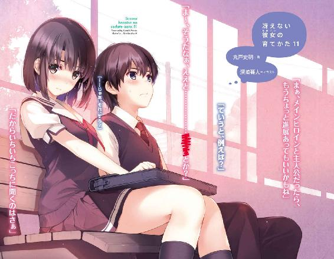
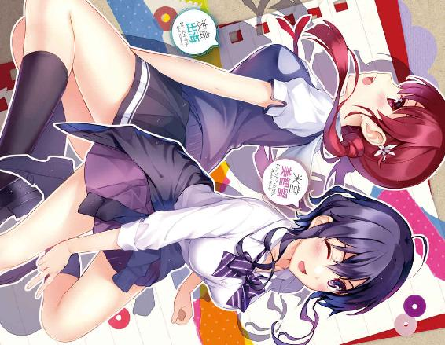
冴えない彼女の育てかた11
丸戸史明

富士見ファンタジア文庫
本作品の全部または一部を無断で複製、転載、配信、送信したり、ホームページ上に転載したりすることを禁止します。また、本作品の内容を無断で改変、改ざん等を行うことも禁止します。
本作品購入時にご承諾いただいた規約により、有償・無償にかかわらず本作品を第三者に譲渡することはできません。
本作品を示すサムネイルなどのイメージ画像は、再ダウンロード時に予告なく変更される場合があります。
本作品の内容は、底本発行時の取材・執筆内容に基づきます。
本作品は縦書きでレイアウトされています。
また、ご覧になるリーディングシステムにより、表示の差が認められることがあります。
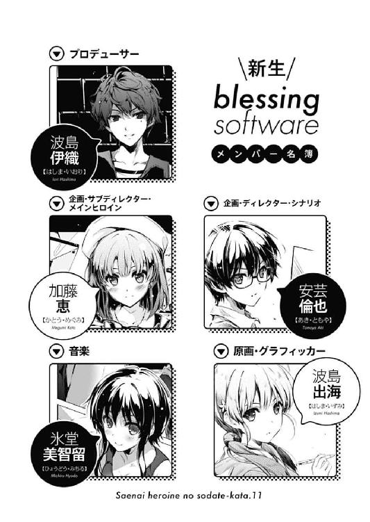
プロローグ
夏休み中の俺の部屋に差し込む夕陽が、先月とまるっきり同じく、未だにエアコンの冷気をもかき消すほどの熱気を送り込む八月下旬......
「なんでだトモ～！」
「どういうことですか倫也先輩～！」
......なんだけど、そんな真っ盛りの残暑を怒りで吹き飛ばす、強い非難を含んだ声が部屋の中にダブルで響き渡る。
「ちょ、ちょっと待ってよどういうことなの!? どうして俺責められてんの？ 今回に限っては全然、全く、これっぽっちも意味わかんない！」
「なんであたしの知らない間に、イトコヒロイン美智留（仮）シナリオ書き上げてんだよ～！」
「どうしてわたしがちょ～っと目を離してる隙に、後輩ヒロイン出海（仮）シナリオを完成させちゃってるんですか～！」
「スケジュール通りに書き上げたのに罵詈雑言っ!?」
今日は、さっきも言ったように八月下旬。
というか、もっと具体的に言えば、夏休み最終日。
それは、一般的な高校生ならば、ちっとも手を付けていない夏休みの課題に青ざめ、なんとか一夜漬けで事態を収拾しようと四苦八苦しているはずの日だ（個人的偏見含む）。
しかしそんな、普通なら修羅場であるはずの日に、俺は堂々と胸を張り、現在の進捗状況が極めて順調であることを、たった今報告したはずだった。
あ、もちろん学校の課題のことでも、来年早々に迫っている進学や就職の対策のことでもないけどな。
「シナリオ完成までのゴタゴタはどこ行ったんだよ～！ 今までは、澤村ちゃんやセンパイが問題起こしてさ～、それをトモがダラダラとシナリオで口説いて解決してたじゃん。なんで今回だけ、その重要なプロセスがまるっと省略されてんのさ～！」
「え～、仕事の成果ってアウトプットじゃない？ プロセスじゃなくない!?」
そんなバイノーラル雑言の、左のちょっと上側から入る音声の持ち主は、癖っ毛ショートのホットパンツあぐら美少女。
座っていてもわかるその長身と、しなやかに伸びた肢体。
その大きくても大ざっぱではない造形の体を揺らしてまで口にするのは、俺に対する理不尽なまでの謝罪と賠償の要求。
そのワガママを通用させてしまう、同い年で、同じ日に生まれ、生まれた時から顔見知りで、さらにはイトコという、近し過ぎる間柄。
椿姫女子高校三年四組、氷堂美智留。
「わたし、わたしっ、現状いちばんサークルに貢献してるはずなのにこの扱い......今のメンバーの方が離脱したメンバーより影が薄いって問題ですよ！ そんな、昔の女ばっかりひいきして、回想シーンだらけのギャルゲーなんて、どう考えたってクソゲー一直線じゃないですか！」
「そんなことないから面白く作れるから！ じゃなくてひいきなんてしてないから！」
そしてもう一つのバイノーラル雑言の、右のちょっと下側から入る音声の持ち主は、お下げ髪のミニスカート正座美少女。
座っていてもわかるその小柄さと、それに対抗するかのような一部のボリューム。
そんな小さい全体の中で燦然と輝く主張の大きい部位を揺らしてまで口にするのは、自分に対する扱いの低さへの嘆き節。
その俺への責めを押し留めることのできない、後輩で、五年前からの付き合いで、いつも懐いてくれていたという、親し過ぎる関係性。
豊ヶ崎学園一年Ｃ組、波島出海。
「そりゃ、初期のメンバーが伝説になるのは、バンドでもよくあることだけどさ～、でも、途中から参加した二代目ボーカルのおかげでメジャーになったバンドだって沢山あるじゃん？」
「そうですよっ！ なまじ一作目でまぐれ当たりして調子に乗って移籍した挙句泣かず飛ばずな一発屋の初代原画家より、柳の下のドジョウと蔑まれつつも地道に続編を作り続けて堅実にブランドを護る二代目原画家こそ賞賛されるべきなんです！」
「美智留の喩えの方はよくわかんないからいいとして出海ちゃんの喩えの方は具体的な名前が出てきそうになるからやめて!?」
で、そんな二人の非難の的となっている進捗状況というのは、もちろん、学校の課題についてのものではない。
俺たちのサークル『blessing software』の冬コミ向け最新作『冴えない彼女の育てかた（仮）』についてのものだ。
半月前の夏コミで、俺たちは、その新作ゲームの体験版を無料配布した。
共通ルートの途中までの、一プレイ一時間もかからないその小品は、それでも、『ここは最後尾ではありません』札が登場するくらいには行列をなし、大盛況といっていい結果を残した。
まぁ、この段階での人気については、無料配布ということと、今はいない前作メンバーの実績ということもあり、素直に信用できるものではなかったけれど。
それでも、体験版をプレイしたユーザーのネットでの反応も、俺たちのモチベーションを上げるに十分なほど、前向きな意見がたくさんあった。
原画が、前作の柏木エリじゃないということで、いくつかネガティブな意見もあったけど、それでも、新原画家のスキルの高さ、さらに元『rouge en rouge』という実績のおかげで、おおむね好意的に受け止められた。
......まぁ、そもそもその柏木エリが、某コンシューマー大作の原画家に大抜擢されたことを知っているユーザーには、変なお家騒動の可能性を詮索されて、少しばかり胃を痛くしたこともあったけど。
あと、おおむね好評だった原画と比べると、シナリオに対しては、前作との違いに戸惑ったり、否定的な意見を言う人が結構見受けられた。
でも今は、そこの評価は甘んじて受け入れ、精進するしかない。
今度の新作は、前作『cherry blessing』のような伝奇ラブストーリーじゃないし、それに俺は霞詩子じゃない。
スキルも、経験も違う。
それに作風だって、追い求めるものが決定的に違うって、半年前に思い知ったばかりだ。
だから、シナリオの真価は冬コミで......全ての力を出し切った段階で、審判を仰ぐしかない。
「だ、だいたい、そろそろシナリオ上げないと、絵と音楽にしわ寄せがくるじゃん？ 俺は、後工程の二人のためを思って、シナリオで迷惑かけないように......」
......ま、二人から責められている理由が、そういったゲームシナリオの内容に根差した本質的な議論だったのなら、俺も、こんな言い訳がましい態度を取る必要もなかったんだけどな。
「けどさ～、去年のゲームなんてシナリオ完成したの一一月だったじゃん？ まだ二か月以上も余裕があるってのに、何でそんなに急ぐ必要があるの？」
「あるんだよお前も一度ディレクターやってみればわかるよ!?」
どうやら去年、その一一月シナリオアップとかを含む諸々の事情で、プレス会社の締め切りに間に合わず手焼き頒布になったという事実を、美智留のお気楽な頭脳はすっかり都合よく忘却の彼方に飛ばしているらしい。
「それでもっ、もっと、ヒロインとの対話を重視して作って欲しかったですっ！」
「してるからシナリオの中じゃしっかり対話してるから！」
そもそも、今回のゲームのコンセプトである『ヒロインとの対話を重視』というのは、作中の二次元ヒロインとの対話のことであって、ヒロインのモデル（にしたかもしれないししてないかもしれない）の三次元女子との対話のことではないというのを、出海ちゃんのご都合主義な頭脳はすっかり都合よく記憶の片隅に留めていないらしい。
いや、まぁ、だからといって、美智留や出海ちゃんの言動を理不尽だと嘆くのも、なんとなく居心地の悪さを感じちゃったりなんかしちゃったりして。
何しろ、彼女たちがそう感じるのも......
「......まぁ、最初にそういう作り方を始めちゃった倫也くんが悪いよね～」
「............ごもっともでございます」
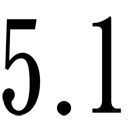chサラウンドで真後ろから入る音声の持ち主の指摘通りだったりする。
「本当ならさ、『女の子の悩みにゲームのシナリオで答える』なんてやられたら、激しく痛いし、とんでもなく恥ずかしいし、まるっきり意味わかんないけど、それでもなんか、相手のことを特別扱いしてる感じはあったもんね。だから、自分の時にそういう扱いされないと、『あれ？ わたしって何だったの？』って思っちゃっても仕方ないというか」
「もう認めたじゃん！ それ以上恥ずかしい解説すんのやめてよ恵!?」
で、そんなアレでナニな解釈を、感情を感じさせないフラットな口調で淡々と語り、かえって俺の心を抉るのは、ショートボブのキュロットスカート体育座り美少女。
座っていてもわかるそのナチュラルな黒さ......あ～、いや、何でもない。
とにかく、そんな氷の刃のような言動に反論も抵抗もできない、同い年で、気安くて、けれど最近、実はその気安さはまやかしなんじゃないかと疑いを持っている、変に腐れ縁っぽくなってしまった関係性。
豊ヶ崎学園三年Ａ組、加藤恵。
「わかったよわかりましたよ！ 締め切り前に勝手にシナリオ上げちゃってごめんなさい！」
で、そんな、サブディレクターにして副代表にして黒幕......いや、縁の下の力持ちに睨まれてしまったら、なんちゃって代表の俺なんか、もう全面降伏するしかない訳で。
「......なにトモ？ その誠意も罪悪感も本気も感じられない謝り方」
「......その言い方だと、倫也先輩は、何が悪かったのかきちんと理解しないまま、とりあえず適当に謝っとけ～みたいな感じで頭下げているように見受けられますね」
「............ええっと、それぞれの悩みや問題に向き合わないで、勝手な解釈でイトコヒロインと後輩ヒロインのシナリオを上げてしまって申し訳ありませんっ！」
さらには、当事者にして、ゲーム制作に不可欠な仲間である原画担当と音楽担当の全然納得してなさそうな厳しい追及を受けてしまったら、ぽっと出シナリオライターの俺なんか、いちいち理不尽さを感じている場合ではない訳で。
「まぁ、そろそろ許してあげたら二人とも？ 本人も、ある程度、それなりに、そこはかとなく反省してるみたいだし」
「なにとぞお許しをっ！」
......まぁ、今回の件に関してはどう考えても無関係なはずの恵に、ここまで仕切られるいわれはないと思わないでもなかったけど、それを迂闊に口にしてしまったらサークル活動の存亡にかかわるので絶対に口にしない。
そう、今はただひたすらに正面から暴風を浴び、この嵐を我慢しつつやり過ごすだけだ。Ｔ○Ｒみたいに。
「ん～、しょうがないから理解はするか～......納得は全然しないけどね！」
「そうですね、きちんと謝ってくれたことだし......口だけでは何とでも言えますけど！」
「ありがとうございますありがとうございます！ この取り返しのつかない不祥事に関しましては、素晴らしいゲームを作ることで謝罪に代えさせていただきます！」
そして、そんな俺の適当な......じゃなくて心からの謝罪がようやく通じたのか......
美智留と出海ちゃんの表情に、『もう、しょうがないなぁ』みたいな、上から目線の赦しの表情が見て取れて、場の空気がようやく和らいでいく。
「なら、その『素晴らしいゲーム』にするために、あたしたちも頑張ろっか～」
「そうですね、せっかくここに、シナリオデータもあることですし」
「え......？」
......などと思えたのは、ほんの、たったの、あっという間の数秒だけだった。
※ ※ ※
その後、二人が始めた『俺のシナリオを素晴らしくするための会議』は、とてもとてもとても凄惨なものとなった。
「ほらほらっ、この『出海04.txt』を見てくださいっ！ こういう、離れている間に募る想いっていうのが、幼なじみヒロインの醍醐味じゃないですか～！」
「え～、そっかなぁ？ やっぱ昔っからずっと離れず仲よく一緒にいる方が、関係が深そうに見えるじゃん？」
「そういう適当な展開だから、美智留さん（仮）シナリオは底が浅いんですよ～」
「......ほ～」
「その点、出海（仮）シナリオの深さといったら......この、ずっと主人公を慕い続けてきた三年間が、物語に深みを与えるキモなんですよっ！」
「え～、お預け食らうならせめて五年は離れてなきゃ～」
「いやその年数って一体何の根拠があるの!?」
それは業界でよく行われる『本読み』のように、シナリオの問題点や課題をあぶり出し、どのように修正して、いいシナリオにしていくかを話し合うものではなかった。
それはただ、自分（がヒロインのモデル）のシナリオの美点を上げまくり、相手（がヒロインのモデル）のシナリオの欠点をあげつらうという、地獄のような、いや修羅場のような戦いで。
「や～、この『美智留16.txt』の生々しさといったら......これぞ、どこぞのおこちゃまヒロインには出せない味だよね～」
「......っ」
「子供の頃からずっと、お互いの成長を見つめ続けてきたからこそ、主人公が、突然ふっと感じる〝女〟がリアルなんだよね～」
「そ、そういうの想像させないでくださいっ！」
「ほらほら、ここの、ヒロインと主人公がコタツの中でいちゃいちゃしながら足をつつきあうシーンなんかさ......『ね、トモ......しちゃおっか？』」
「うわああああ～！ いちいちセリフ音読しないでください～！」
「うわああああ～！ そもそもそんなセリフ入れてないよ俺～!?」
さらには、いちいちイベントのシチュエーションを再現し、萌えセリフを音読して、シナリオライターの痛々しい妄想をこの世に具現させるという、ひたすら一部の人間にとって拷問のような時間だった......
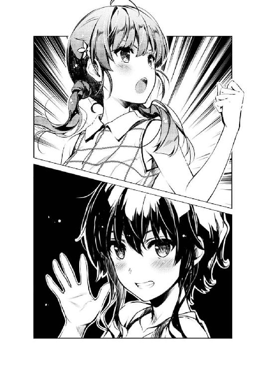
「な、なら、この『出海238.txt』を見てくださいっ！ 即売会イベントで、初めての完売の余韻に浸るヒロイン......そんな夢見心地のわたし、じゃなくてヒロインは、倫也先輩、じゃなくて主人公に誘われるまま、彼の部屋のベッドで......『せ、先輩......わたし、初めて、だから......』」
「うわああああ～！ そもそもそんなイベント作ってないよ俺～!?」
......うん、やっぱり、今回のゲームの作り方は間違っていた。
身近な女の子をモデルにしたヒロインなんか作るべきじゃなかったんだ。
「ねぇ倫也くん、あなた今、この作品のテーマ全否定したけど大丈夫？」
「お前にはいったい何が聞こえてんだよ恵!?」
第一章 今巻の業界ネタは全てフィクションということでひとつ......
まだ暑さの残る教室の中に、一月半ぶりのざわめきが広がっている。
二学期最初の登校日、体育館での始業式を終え、教室に戻った三年Ｆ組の面々は、それぞれが久々の再会を喜び、会話に花を咲かせていた。
......とはいえ、その光景は、『いつも通りの夏休み明け』というには、いささか活気と陽気と脳天気と二学期デビューが足りていないようにも見えた。
耳を澄ませてみると、彼らが語る会話の中身も、やれ夏期講習がどうだの、志望校はどうしただの、Ｅ判定がどうだのいやどうもこうもそれ駄目じゃんだの、なかなかに心躍らぬもので。
心なしか、いや、明らかに一学期よりピリピリした雰囲気が室内に充満していた。
まぁ、それもそのはずで、今、俺たちが迎えている時期は、高校三年の二学期であり。
ついでに言えば、この豊ヶ崎学園は、俗に言う私立進学校にカテゴライズされている訳で。
となると今は、大半の生徒たちが、この後遭遇するであろう、入試という、今までの人生の中でほぼ最大の試練に向けて切羽詰まっているのは仕方がなく......
「......全素材の提出期限が九月末なのよね」
「はえ～な、さすがコンシューマー」
「これでも年末発売にはギリギリなんだって......だから本当なら、今月は学校来てる場合じゃないんだけどなぁ」
「......大学中退なら業界的にハクがつくかもしんないけど、さすがに高校中退は微妙だと思うぞ？」
......と、そんな閉塞空間の中、やっぱり他の生徒たちと同様に切羽詰まってるのに、明らかに他の生徒たちと方向性の違う、進学とかそういうパワーワードとは無縁なため息が、隣から漏れ聞こえてくる。
本当、進学どうするつもりなんだろうなこいつ......いや俺もなんだけど。
「にしても開発期間短すぎなのよ......タイトル的には大作なんだから、会社としては二、三年くらい掛けられる予算も体力もあるはずなんだけど」
「まぁ、そっちのリーダー、人生生き急いでる感じだもんなぁ......コンシューマーゲームの長い制作スパンと根本的にサイクルが合ってないんじゃないか？」
「だったら『フォールズクロニクル』になんか手を出さなきゃよかったのよ......ほんと、あの女の考えてること、訳わかんない」
そうやって愚痴っぽく 隣の席に突っ伏している女子が憔悴しきった様子で語っているのは、ある意味個人の進学なんかよりも経済規模の大きな『なんで一介の高校生がそんな話してんだよ』と言われるレベルの話題だった。
そんな場違いな話題で自らの境遇を嘆くのは、一介の高校生ではあるものの、見た目も中身も立場も、色んな意味で規格外の（体型除く）金髪ツインテール美少女。
いくつかの部分がちょこまかとした体型をしていて、それに伴い言動や態度も忙しなかったりエキセントリックだったりしていて、剝き出しのままだと結構付き合いづらいけど、個人的にはもはやそんなレベルは一○年前には通過してしまい、何をされても言われても『まぁ、こいつだからなぁ』で済ませてしまえる、一番幼なじみらしい幼なじみ。
豊ヶ崎学園三年Ｆ組、澤村・スペンサー・英梨々。
ついでに現在一番ホットな肩書きは、人気ゲーム制作会社マルズの新作ファンタジーＲＰＧ『フィールズクロニクル 』キャラクターデザイン・原画担当、柏木エリ。
』キャラクターデザイン・原画担当、柏木エリ。
「それに加えて、最近やたらと指示が細かくなってきてるし......しかも、少しでも守らないと容赦なくダメ出ししてくるし」
「まぁ、マスターアップが近いと、どうしてもそうなるだろ」
「にしても、キャラクターの服装とか表情とかならまだわかるんだけど......着崩しも含めた着こなし方とか、心の中に抱えている感情を必死に隠しているけど少しだけ滲み出てしまう表情とか、そんなとこまで作り込んで本当に伝わるわけ？」
「ま、まぁ、細かいところにこだわって作り込むのは大事だろ。そういうところ、ユーザーって結構敏感だぞ？」
「だからって、そのレベルをあと一月で三○枚イベントＣＧ残してる原画家に求めないで欲しいってのが本音なのよ」
「お前、またそんなギリギリ......」
「順調にやってんのよオンスケなのよ！ 先月もリアルに三○枚描いたのよあたし！」
「......お、おう、お疲れ」
彼女たち、『フィールズクロニクル』チームの罵倒合戦......いや打ち合わせ現場は、俺も先月、頼んでもいないのに目の当たりにさせられてしまった。
だからその鬱陶しさ......いや、妥協のない厳しさや、求めるレベルの高さは、嫌というほど理解できる。
「にしても、本当こだわるなぁ、お前んとこのディレクター」
「そっちは元から......厄介なのは、それにシナリオライターが加担してきたことよ」
「......詩羽先輩、が？」
「急にシナリオを大幅改稿してきたかと思うと、それがまた大問題作！ クライアントなんか頭抱えちゃって、一時はライター交代なんて話も出たんだけど、そんな意見も、紅坂朱音が全部封殺しちゃって」
「へ、へぇ......」
「で、そんなことがあってからはやりたい放題。去年みたいにあたしのこと弄るわ虐めるわ意地悪するわで、もう、誰よ！ あいつを生き返らせちゃったのは！」
「あ、あは、あはは......」
実は、そのあたりのエピソードは別方面から聞き及んでいて、本当なら今さら驚いたり呆れたりするほどのことでもないはずなんだけど。
でもやっぱり、彼女の今の状況に関してだけは、あの打ち合わせ現場を知っているからこそ、なかなか想像しにくかったりした。
英梨々の愚痴の中で、生き生きと猛威を振るうシナリオライター。
俺たちの脳内で容易に思い描ける、見た目も中身も立場も、色んな意味で規格外の（体型含む）黒髪ロング美女。
言動や体型も、その体型通りボリュームたっぷりに攻撃的で、それをいつも剝き出しにしているせいでほとんど友達もいないけど、個人的にはそんないつもの態度の隙間でたまに見せる優しさや頼もしさに甘えたくなる、先輩にして師匠。
早応大学一年生、霞ヶ丘詩羽。
ついでに現在一番ホットな肩書きは、『フィールズクロニクル』シナリオ担当、霞詩子。
彼女......詩羽先輩は確かに、あの打ち合わせのとき、一度、心折れたはずだった。
自分のボスである紅坂朱音に、自らのシナリオを中途半端と評され、今までの実績も努力も、そして自身の存在意義も否定された。
けれど彼女は、やっぱり、紅坂朱音が簡単に見切れるような程度のクリエイターじゃなかった。
悔しさと屈辱を強く嚙み締め、けれどダメ出しの意見はきちんと吟味し、その才能と努力を融合させた能力で、華麗なるリベンジを遂げた。
そう、復活したんだ、霞詩子は。
ただ、そのために俺が失ったものは、決して小さくはなかったけれど......
「あんた、霞ヶ丘詩羽のシナリオも書いたんだって？」
「......まぁ、本人には全否定されたけどな」
そう、師弟の決裂という、とてもとても、大きな代償を払ったんだけど。
「ふぅん、へぇ、そう......」
「......なんだよ？」
でも英梨々は、俺のそんな心の傷を、蔑むような視線で覗き込み、さらに傷をえぐろうとする。
「うん、やっぱりラブコメ鈍感主人公って、当事者じゃなくて傍観者として見ちゃうと、ほんっと殺意が湧くわね。だから感情移入できないキャラにするとあんなに叩かれるのか。勉強になるわ～」
「この受験シーズンに一体なんの勉強してんだよお前!?」
いや、視線どころか、言葉ですらえぐってきやがったけれど。
※ ※ ※
「ふぅん、へぇ、そう......」
「なんで恵まで英梨々と寸分違わぬ反応しちゃうの!?」
始業式後のホームルームも終わり、いつもより早く放免されたお昼前。
下駄箱を出て、校門へと向かう帰宅の途、俺は恵に、さっき英梨々から聞いた、詩羽先輩の最近の様子を話して聞かせた。
......で、その結果がこの塩対応である。
「あ～、ほら、実は昨日、英梨々から電話である程度聞いてたから、あんまり新鮮な驚きがなかったっていうか」
ちなみにこの場に、さっきまで教室で話していて、今でも二人の口の端に上る英梨々がいないのは、向こうから『早く帰って作業しないと』と断ってきたからだからな？
決して変な配慮があったとか妙な遠慮があったとか微妙な空気が流れたとかそういうことはないからな？
「それにわたし、倫也くんよりは霞ヶ丘先輩を心配してないっていうか、信用してるっていうか。だからあの人のことが心配だからって人前でめそめそ泣いたりしないし」
「そんな一月も前のことなんか誰も覚えてないもん！」
それはともかく、塩にハバネロも混ぜた対応すんの本当にやめて欲しい。
「ま、そうやって、倫也くんが心配してれば大丈夫だよ、霞ヶ丘先輩は」
「けどなぁ、この前のシナリオの内容、相当怒ってたし、簡単に許してくれそうにない感じだったけど......」
「ま、そう思うなら少しの間だけ距離を置いてみたら？ どうせすぐに我慢できなくなると思うけど。どっちがとは言わないけど」
「悪い、その微妙にちゃんと聞こえる音量で話すのやめてくんない？」
と、俺たちが、いつものようにサーブミスばかりの会話のラリーを続けつつ、校門のところに差し掛かったところで......
「やぁ倫也君、加藤さん、待って......」
「ともかく、今気にすべきは、霞ヶ丘先輩の件よりもこっちのサークルのことだよ。そろそろスクリプトの方にも着手したいし、今できてる素材を全部チェックしないと」
「......いや、今気にすべきは、たった今お前が思いっきりシカトした伊織のことだろ」
豊ヶ崎とは違う制服に身を包んだチャラそうな茶髪男が、挙げた右手の行き場に困りつつ、俺たちの方を見てへらへらと硬直していた。
※ ※ ※
「恵さ、お前本当、なんで伊織にだけそんな......」
「あ～、ほら人見知りだよきっと」
「いや俺、今までの記憶の中で、加藤恵に関してその単語が適用された覚えがないんだけど......」
「......などと僕を擁護するふりをして、やっぱり君も僕をシカトするのはやめてくれないかな倫也君」
という訳で、聖地......じゃなくてお馴染みとなった学校帰りのログハウス風の喫茶店。
四人掛けの席に腰掛けた、二つの高校に所属している三人は、なんだかんだといつも通りの心温まらない会話を始めた。
「いいじゃん別に。どうせお前は他のどこでも一目置かれてるんだ。一つくらいヒエラルキーの低いところがあっても問題ないだろ」
「最近の僕、すごく世間的に好感度上がってると思うんだけど、その好青年な僕にこういう扱い続けてて、君らにヘイト集まっても知らないよ？」
で、こうして俺と恵からの扱いに文句を垂れつつ、実のところまるで気にした様子もなく、いつも通りなれなれしく、わざと人を逆なでするような口調で話しかけてくるのは、見た目も中身も立場も、色んな意味で軽薄な、茶髪パーマのイケメン野郎。
全身から胡散臭さを醸し出し、それに伴い言動や態度も胡散臭さ全開で、知り合ってからどれだけ経ってもまるっきり信用できないけど、実は個人的には結構頼りにしている、一番悪友らしい悪友。
桜遼高校三年二組、波島伊織。
ついでに俺たちのサークル『blessing software』の、プロデューサー＆ディレクター＆フィクサー。
まぁ、こう評するとどうしても大物っぽく聞こえるけど、それでも結局のところ同人ゴロのクズだから安心して欲しい。
「で、伊織、わざわざ始業式にウチの学校まで押しかけてきて何の用だよ？ 大事な話があるんなら、昨日のミーティングに来て皆に話せばよかったのに」
「いや実はね、昨日のミーティング、僕のところには事前に何の連絡もなくてね。で、今朝になって、そこの君の彼女から、しれっと議事録と資料だけ送られてきてね......」
「........................恵さん？」
「あれ～、確かに皆に招集かけたはずなんだけどな～。おかしいな～」
......いや、だからって、本来はサークル内でこういう扱いを受けていい立場でもないんだけどな。
※ ※ ※
「最終シナリオのスケジュール、かぁ」
「そう、倫也君は、昨日までに、順調に四キャラ分のシナリオをアップしてくれた。これでいよいよ、残すはあと一ルート」
「メインヒロイン、叶巡璃......」
「ああ、最後の砦だ」
ソフトクリームもデニッシュも小倉あんもメープルシロップも、もちろん豆もあらかた片づけて人心地ついた段になって、伊織がさり気なく切り出したのは、最終シナリオのスケジュールの件。
......要するに、俺への、シナリオ提出の催促ということだ。
「......あのさ、今日言うことなのかなぁ、それって」
「恵？」
と、伊織のその話題に、真っ先に異を唱えたのは当事者の俺ではなく、メインヒロインの叶巡璃......いや、加藤恵だった。
「前のルート書き上げたの、昨日の朝だよ？ なんとか夏休み中にって、倫也くん、最後の方なんかほとんど寝ないで書き上げたばかりなのに、もう次の話とかしてたら、まるっきり気の休まる暇がなくないかなぁ？」
「それでも、前のシナリオを上げるまでは、絶対にこの話をしなかっただろう？ 一○巻のアップが思いっきり遅れて、印刷所やイラストレーターに特大の負荷がかかっているときでも必死に我慢して、アップするまで一一巻の締め切りの話をしなかった編集はもっと評価されるべきなんだ」
その代わり、一一巻の締め切りがいつもより早くなって、しかもプレッシャーも数倍キツくなった負の側面を巧みに隠し、伊織が自らの行動を正当化する。
......いや、このくだりはちょっと意味不明ですね。忘れてください。
「でもさ、ほら、クリエイターにはアップ休ってものがあるって聞いてるけど？」
伊織のガチガチの正論（？）に、恵は、それでも納得がいかない様子で食い下がる。
ただまぁ、そうやって俺の頑張りを擁護するなら、昨日、出海ちゃんや美智留に対してやって欲しかったという本音もなくはないけど。
「......加藤さん、アップ休ってものはね、全ての作業が終了して、マスターアップして、発売されて、しかも売れ行きが良くて採算分岐点を超えそうだと社長が判断した場合に限られるんだよ」
「......えっと、最後の条件はいくらなんでも免除するべきじゃないかなぁ？」
「けれど、売れなければ早急に次回作を出して挽回しなければならないじゃないか。そんな自転車操業となった会社に、アップ休どころか夏休みも冬休みも土日もあると思っているのかい？」
「お前らそろそろ一般論やめて個別論に戻ってこようよ!?」
四月以来の、恵と伊織の激しい第二次正妻......いや聖杯戦争に戦慄しつつも、俺は必死に二人の間に監督者として割って入る（ＣＶ：中田○治）。
「僕はね、別に今すぐ書けって言ってる訳じゃないんだ。ただ、他のメンバーの作業を計画的に進めるために、きちんと予定を立てたいと言っているだけなんだよ」
お互いにヒートアップした感情を収めるため、かき氷で頭を冷やし（なお頼んだのは俺だけだった）た後、伊織が、明らかに俺でなく恵に向かって諭すように語り掛ける。
......こう見ると、明らかに伊織の方が正しいような気がしてきたけれど、まぁこの場でそんなことを言い出す勇気も空気の読めなさも持ち合わせていないので、ここは静かに耳を傾ける。
「けど、まだ九月に入ったばかりだし、倫也くん、今まで順調に進めてきた訳だし、だいぶ余裕ができてる気がするんだけど」
それでも恵は、いまいち納得がいかない感じで、冷静にではあるけれど、相変わらず異を唱える。
やはり、常にこの『blessing software』のことを大切に思っている恵にとっては、どうしても、サークル内でのナンバーワンの立場にこだわりがあるんだろう。
......ああ、うん、今さら俺がナンバーワンだなんて思ってないよ？
「余裕なんて、ないさ」
「どうして？ 去年のことを考えると、一○月末くらいまでに終わらせれば全然......」
「僕はね......叶巡璃シナリオは、最悪、一一月末までかかると想定してる」
「......え？」
「......は？」
そんな恵の異論に対して伊織が返した言葉は、恵だけでなく、俺にもまるで想定外なものだった。
「一一月、末って......」
「ちょっと待てよ伊織、それって、あと三か月もあるぞ？」
「へぇ、倫也君は、叶巡璃を〝わずか〟三か月で書き上げる自信があるんだ......あの、全ルートを凌駕した、約束された神シナリオを......」
「......え？」
「......は？」
そして、今度は俺が放った異論に対して伊織が返した言葉は......
それは、『冴えない彼女の育てかた（仮）』というこの作品の深淵に切り込んできた。
『メインヒロインが〝ぶっちぎりの一番〟でなければならない』
そんな、この作品が求める本質にして、最大のテーマに。
「あのプロットを、三か月でシナリオに落とし込むのも結構大変だと思うけど、今回の場合、さらにあのプロットを超えたものを作らないといけないからね」
「それって、つまり......」
「何しろ、他のシナリオも、プロットからはみ出て、さらに磨きがかかってしまった」
意外なことに、伊織は、俺の今までのシナリオを、かなり高く評価してくれているみたいだった。
「だから、プロット段階で存在した、メインヒロインルートのアドバンテージは、今はもうないと思った方がいい」
そして、だからこそ、メインヒロイン、叶巡璃ルートのシナリオは、さらにハードルが上がったのだと。
「最高のモノを作れよ、倫也君......」
「伊織、お前......」
「倫也くん？」
今、理解した。
こいつは、伊織は、ただ次のシナリオを催促に来たんじゃない。
スケジュールを早く決めたいなんてのはただの言い訳だ。
「最高のプロットを、今までのシナリオを、遥かに超えるものをね」
「はは......っ」
「ちょっと、倫也くん？」
こいつ、俺に、プレッシャーをかけにきたんだ。挑発しにきたんだ。
それも、最大限のレベルで。
「できるかな？ 君に」
「ああ、やるさ......けど、お前の口車には乗らない」
「............」
頭が、チリチリと熱い。
昨日の朝方の、四キャラ目のシナリオを書き上げた瞬間に戻ってきた。
「叶巡璃シナリオは......当初の予定通り、九月末アップだ！」
そして俺は......
自分から、伊織の挑発に乗っかっていく。
こいつの策略で上げられたモチベーションを、自分自身のものとするために。
「いいのかい？ 自分からそんな無理を言い出して？」
「だってさ......時間を掛けたからって、いいシナリオになるとは限らないだろ？」
「......まぁね」
そう、締め切り間際の強迫観念から生まれたやっつけシナリオは、時に神シナリオとなる。
例えば、メインライターが一人で全部書くって大見得切ったくせに、締め切りになっても共通ルートすら完成してなくて、個別シナリオは急きょ集められたゴーストが六人がかりでたった二日で仕上げたのに、大ヒットしたゲームだってある。
......元のタイトルを探したり、そのゲームが本当にシナリオのお陰で売れたのかを詮索するのはナシだぞ。
と、まぁ、それはともかく......
「じゃあ、もし九月中に上がらなかったら、二度と僕に突っかからないよう、君から君の彼女に言い聞かせてもらおうかな？」
「その代わり、もし間に合ったら、一○月以降の雑用、みんなお前の担当な？」
「ふふ......」
「はは......」
伊織と俺は、お互いに挑戦的な視線と、挑戦的な言葉を交わしつつ、にやりと唇を吊り上げる。
そして俺は、今すぐにでもメインシナリオに着手したいという欲求を抑えきれず、すぐに店を出ようと、残りのコーヒーをぐいっと呷り......
「ひぎゃああぁぁぁぁぁぁぁぁ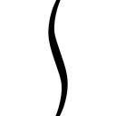！」
「............」
その冷めたコーヒーの、ざらりとした食感の後に襲ってきた舌を刺す甘さに、全身を痙攣させた。
その後の捜査により、いつの間にか、テーブルの上のガムシロップとメープルシロップが空になり、スティックシュガーが六本空いていたことが明らかになった。
......犯人は、不明ということにしておいた。
第二章 文章で『凄い絵』って書くと、映像化の際に問題になります
土曜日、朝の八時半。
「お茶よし、コーヒーよし、チョコレートよし、全部よし！」
水分補給と、眠気覚ましと、疲労回復のためのアイテムを机の上に揃え、それを一つ一つ指差呼称で確かめる。
「さあ、やるぞっ！」
そうやって準備万端で臨むのは、もちろん今週の初めに宣言した、ラストシナリオにしてメインヒロインシナリオ、叶巡璃ルートの執筆だ。
そう、今回は準備万端だ......
平日と同じ時間に起き、きちんと朝食も食べ、生活リズムを整えて。
スケジュール通り、粛々と、けれどクオリティには精一杯こだわり。
疲れたときには休み、眠い時には寝て、腹が減ったら飯を食い。
順調にペースを保ち、余裕をもって素晴らしいシナリオを上げていく。
それが、『自分史上最高』を求められた、『冴えない彼女の育てかた（仮）』最終シナリオに対しての、俺のアプローチだった。
いつもみたいに、朝も晩もなく書き続けるのは、ノっている時だけ。
納期に押し迫られたり、締め切り直前まで何も進んでいなかったり、矢のような催促が一時間ごとに飛んでくるような失態は、今回は絶対に晒さない。
......などと、俺がそんな、他のクリエイターに鼻で笑われそうな理想論を掲げつつ、気合を入れてキーボードを叩き始めたところで。
「と～も～や～せんぱぁぁぁぁ～い！ あ～そび～ましょ～......じゃなかった！ お～は～よ～ございまぁぁぁぁ～すぅ！」
「......は？」
玄関のチャイムが鳴り、そしてその直後に玄関口からハイな......いや高らかな声が二階にまで響いてきた。
「あ～いたいた～、と～も～や～せんぱ～い、お～は～よ～......」
「あ～、それはもう聞いたから出海ちゃん」
近所にまで響き渡るみっともな......元気な声に導かれ、階段をダッシュで降りて玄関の扉を開けた俺の目の前に、とても腫れぼったい目をした出海ちゃんが立っていた。
「そいれれすねぇ、わらひ、しぇんぱいにれひみれもらいはいもろが～」
「あ～、それはもう意味わかんないから出海ちゃん」
その、ふらふらの体に、へらへらと笑顔を浮かべ、ゆるゆるの言動を繰り返す出海ちゃんは......
なんというか、アレだ、あからさまに徹夜明けだ。
「ゆ～べかいたんれすけろぉ......ともやへんぱいも、ひょろひょろほひたはな～とおもって～」
なんというか、アレだ。俺の理想論、いきなり鼻で笑われたような追い込みぶりだ。
天はクリエイターに昼を与えてはくださらぬのか......
「ほんなわけれ～、ほもやしぇんぱぁい......」
「いやだからいくら寝ぼけててもその発音だけはやめてって言ったよね俺!?」
と、その人聞きの悪い呼びかけを最後に、出海ちゃんは俺にもたれかかったまま意識を失ってしまった。
※ ※ ※
「......はっ!?」
「おっ......出海ちゃん、おはよう」
で、それからしばらく時は経ち......
うちに来るなり、いきなりネジの切れたゼンマイ仕掛けの人形のように動きを止めてしまった出海ちゃんは、今度は、バネ仕掛けの人形のように突然跳ね起きた。
......ちょっと怖い。
「あ、あ、あのあのっ、わたし、何時間くらい寝てましたかっ!?」
「え～と......四時間くらい？」
「ひええぇぇぇぇっ！ も、申し訳ありません～！」
ベッドの上で思いっきり顔を真っ赤にして、出海ちゃんは、恥ずかしそうに三つ指をついて深々と頭を下げた。
......まぁ、出海ちゃんが慌てたときによくやる仕草だから仕方ないんだけど、その態度も行動も、別の意味を思い起こさせるのがいつもながらちょっとアレだ。
とはいえ実際には、この部屋でどんな無防備な行動をしたところで、そういう状況に陥ることはないんだけど。
何しろこの部屋の主は、世に名高き、安心安全安芸倫也（命名：某黒髪毒舌作家）なのだから......
「それで、どうしたの出海ちゃん？」
その後、消え入りそうな声と恥じ入るような表情で痛み入る出海ちゃんを一○分間なだめて、ようやく落ち着きが戻ったところで、俺はつとめて冷静に、彼女に来訪の目的を問いかける。
「わ、わたわたわた......」
「......っと、落ち着いて、色々と」
ごめん、ちっとも戻ってなかったわ。
にしても、いつも結構空気読まな......マイペースで、結構ワガマ......自分をしっかり持っている出海ちゃんが、ここまで取り乱すなんて珍しいな。
「あ、あの、あの、わたし、ですね......」
「うん......」
もしかして、彼女が取り乱している理由というのは、用件も告げずに寝てしまったことではなく、用件の内容そのものにあるのでは......
「ここしばらく、ずっと来なくて......アレが」
「ぶっ!?」
「あ、でも安心してくださいっ！ おかげ様でやっと昨夜、来ちゃったんですよ！ アレが！」
「そう！ ならよかったね！ でもそれ俺のせいでも俺のおかげでもないよね!?」
「いいえ！ 間違いなく倫也先輩のおかげなんですよっ！ だって、倫也先輩がいなかったら、絶対にこんなの生み出せなかったと思うし！」
「主語！ 主語は何？ 指示語じゃない具体的な主語は一体どこにあるの!?」
※ ※ ※
「......神？」
「そう！ すっごいアレ、神様！ 来ちゃったんです！ だから一刻も早く先輩に見てもらいたくて！」
え～と、つまりだ、出海ちゃんが言いたかったのはこういうことだったらしい。
『アレが来ちゃった』＝『神が降りてきちゃった』と......
補完すると、イラストレーター波島出海にとって、神ってる......いや、神がかった絵が描けたのではないかと......
「......ってやっぱ紛らわしいわぁぁぁぁ～！」
「ああっ！ ごめんなさいごめんなさいっ!?」
「で、どこだよその神が降りてきた絵！ 見せてよ！」
「それが、その......ですねぇ」
「早くしてくれよ！ 少しくらい見せたところで減るもんじゃないだろ！」
「......先輩の目、怖い」
「......ごめん」
と、今度は自分の方が紛らわしいことを言ってしまった反省を込めて、一つ、二つと深呼吸をして心を落ち着ける。
それでも体の方は正直なもので、出海ちゃんの新作絵を見たくて全身が疼いたままだ。
......って、ごめん、また紛らわしいこと言っちゃったね。
「あ、あの、見せます。見せます、けど......」
「け、けど？」
で、そんなむやみに意気込む俺に、出海ちゃんは、少しだけ迷う表情を見せたかと思うと......
「ちょっとだけ、今から部屋を出ていってくれませんか？ そして、わたしがいいと言うまで、入ってこないで欲しいんです」
以前、彼女の家を訪問した時のように、俺を追い出した。
※ ※ ※
「お～い、出海ちゃ～ん」
『まだですよ～！ 絶対に開けちゃいけませんよ～』
「一体何やってんだよ......」
そして、それから一五分。
部屋の外には、おあずけを食らったまま、扉越しに、出海ちゃんにしつこく問いかけ続けるみっともない俺の姿があった。
そんな酷い嫌がらせを受けても、彼女は、まるで鶴の化身のように、頑なに作業中の姿を見せようとしなかった。
『あ、さすがに、今描いてる訳じゃないですよ？ わたしそんなに描くの速くないし』
まぁ、それはさすがに、向こう側から漏れ聞こえてくる音でわかる。
いつも聞き慣れた、ローラーが紙にこすれるキュルキュルという微妙な異音。
あれは間違いなく、俺の部屋にある使い古したカラープリンターの排出音。
つまり出海ちゃんは、描いているのではなく、描いたものを出力しているんだ。
『ああっ!? 紙が詰まった～！』
「......手伝おうか？」
『いいえお構いなく！ 自分でなんとかしますから！』
それも、さっきからの駆動音を聞いていると、打ち出した枚数は、そろそろ二桁に達しようかという勢いだ。
......そんなに量産したっていうのか？ 神原画を？
「なぁ、ヒントだけでも教えてよ。どんな絵描いたんだよ？」
『い～え、何もかも内緒です！ とにかく、思いっきり期待して待っててください！』
「そんなに自信作なんだ？」
『生まれて初めて、自分で描いてて感動したんです......脳が震えたんデス！』
「いやその言動は......」
まるで誰かに憑依されているかのように、出海ちゃんは激しい興奮を隠そうとしない。
『だから、倫也先輩には、ありったけのインパクト込みで、見て欲しいんです』
「出海ちゃん......」
彼女は今まで、俺の知るクリエイターたちと比べても、自分に対しての評価が低かった。
同人デビューしてたった二年で、売れるようになってたった一年で、自信を持てという方に無理があったのかもしれないけれど。
それでも去年、彼女の同人誌を初めて見て以来、俺は、その、彼女の控えめな自己評価に、少しだけ忸怩たる思いを抱いていた。
だからこそ、この過剰なまでの自画自賛が、ブラフだなんて思えない。
出海ちゃんは、今日、絶対、今までを遥かに超える凄いものを俺に見せてくれるはずだ。
さあ、フラグは立てた！ ......じゃなくて、心の準備はできた。
『できた！』
「じゃあ......入っていい？」
『お待たせしました......どうぞ！』
俺は、一つ大きく息を吸い込むと、ありったけの期待を全身に込め、扉に手をかけた。
※ ※ ※
「ど、どうですか？」
「............」
ふたたび俺の部屋に入ったその瞬間......
やっぱり、以前、彼女の家を訪問した時のように、俺は言葉を失うしかなかった。
「わたしはやっぱり、澤村先輩みたいに、〝絵画〟は描けない」
その絵は、想像していた『想像を絶する絵』とは違ってて。
「ラフ描いて、線画にクリーンナップして、スキャナで取り込んで、パソコンで塗るしかできない。芸術的なタッチとかよくわかんない。自分の知ってる、自分が好きな絵しか描けない」
つまり、今までの出海ちゃんが描く絵としては、想像通りで。
「でも、この一枚は、それでも、澤村先輩にだって負けてない......と、思うんですけど」
つまり、その絵は、想像通りだけど、想像してなかった『想像を絶する絵』だった。
部屋の、ベッド脇の壁一面に、プリンターで打ち出された、カラーの絵が貼られている。
上は天井に届くまで、下はベッドに届くまで、左右は部屋の隅に届くまで。
けれどそれは......
確かに大きな面積を占めてはいたけれど、確かにたくさんのＡ４用紙が使われていたけれど......
でも、そんな大量の紙を、規則正しく貼り合わせた、一枚の、巨大な絵、だった。
「ちょっと拡大してみました......先輩には、最高のファーストインプレッションを感じて欲しかったから」
本当は、ちょっとどころじゃないくらい、元の絵から拡大されているのに、ちっとも精密さが失われないほどに、その絵の解像度は高かった。
そのサイズと、その細かい描き込みぶりは、あの、英梨々の、〝壁画〟とまで呼ばれた『フィールズクロニクル』のキービジュアルに匹敵するほどだ。
けれど、そこに描かれているのは、数十人のキャラクターの群像ではなく、たった一人の女の子。
しかも、その女の子は......
「英梨々......？」
「それはまだ仮名ですから。正確には、サブヒロインその一、です」
ずっといがみあってて、ずっと戦ってて、ずっとその背中を追い続けてた、宿敵だった。
しかもしかも、そんな宿敵ヒロインを、全身くまなく、執拗に、フルカラーで描いた、その絵は......
「でも、出海ちゃん、これ......」
「あはは......修正入れなきゃ、ですね」
全裸、だった。
大事な部分を──いや、胸のことだけど──隠しても、いなかった。
惜しげもなく、画面のこちら側の相手に、さらけ出していた。
「でもでもっ、これは、半分は、倫也先輩が悪いんですよ？」
「俺、が？」
英国人とのハーフである彼女の肌の白さが、滑らかさが、柔らかさが、産毛のレベルまで表現されている......ように感じられる。
その肌の白さに、ほんの少しの火照りの朱と、うっすらと滲む汗の湿り気。
羞恥と、覚悟と、悦びがないまぜになった、歪んだ表情。
そんな、清楚さと、純粋さと、いやらしさが、あまりにも生々しく表現されている。
一体、何をどうしたら、俺のシナリオがこんな絵になるのか......
「だって、だって......『英梨々22』のシナリオ、何度読み返しても、あれ、こうなっちゃってますよね？」
「......あ～」
イベント番号：英梨々22
種類：個別イベント
条件：英梨々ルート突入後に発生
概要：英梨々との、初めての......
......あのイベントが、この絵になったのかぁ。
「あのシーンのテキスト、ちょっと、いえ、ものすごく、えっち過ぎますよぅ」
「ご、ごめん」
俺の、キモオタ的妄想を煮詰めて煮詰めて、限界まで膨らませた、あのイベントが......
あんなアレなシナリオに、影響を受けてしまったのか、出海ちゃんは。
「ずっと頭の中で、どんな構図にしようかって悶々として......結局、悶々としたまま描いてたら、こんなふうになっちゃって......」
確かに、今目の前にあるこの絵は、『こんなふう』に、レーティング的には完全にアウトな絵だったけど......
「描いてて明らかにマズいのに、手が止まらなくて、しかも、描いてるうちに、大傑作だなんて思えてきちゃって......」
「うん......そうだな」
それでも、出海ちゃんの言う通り、これは、大傑作、だ。
だって、そこらのエロゲーだって......いや、エロゲー移植のギャルゲーだって、こんな艶めかしいイベントＣＧ、滅多にない。
「先輩がいけないんですよ......わたしを、こんな気持ちに、させてしまうんだから」
「こんな『絵を描こうって』気持ちだよね!?」
出海ちゃんは、間違いなく、一つ上の領域に踏み込んだ。
英梨々を追いかけていきながらも、その背中にまっすぐ向かうのではなく、まったく違う方向から追いつこうとしている。
全然芸術なんかじゃない。でも素晴らしい。
高い解像度と膨大な色数で隅々まで見たくなる、技術の粋を集めたグラフィックだ。
喩えて言うなら、等身大抱き枕クオリティ......？
「でも、修正以外にも、まだ問題あるんですよねぇ」
「え？ この絵の？ どこに!?」
「これ、実は描き上げるのに、まるまる一週間かかってるんです」
「......あ～」
「だから、この調子だと、残りの絵が全部上がるまで、何か月かかることか......」
「バランス考えよう！ メリハリ付けよう！ ね!?」
ちなみに言っておくけれど、本来、ここまでの描き込みで一週間なら、十分に速い方だ。
まぁ時々、このレベルの絵を、一日で事もなげに上げてくるバケモノもいるけれど......しかも、それが思いっきり同じクラスにいるけれど。
けれどあいつも、それ以前の、全然描くことができなかった数か月を経て、やっとその場所に立っている訳で。
だから業界人各位においては、時々いる『年単位で締め切りをぶっちぎるイラストレーター』にも、もう少し優しい目を注いでもいいと思うんだ。今後も仕事を発注するかは各自の判断に任せるけど。
......と、まぁ、それはともかく。
「じゃ、始めるぞ出海ちゃん」
「え？ 何を？」
「決まってるだろ......納期とクオリティの折り合いをつけるんだよ！」
そう宣言すると、俺はＰＣを立ち上げ、サークル用フォルダの中にある『ＣＧリスト.xlsx』というファイルを開き、気合を込めて印刷コマンドのボタンを押し......
「......あれ？」
「ご、ごめんなさいっ！ さっきのでインク使い切っちゃいましたっ！」
「あ～......」
その後、おもむろにインクカートリッジを交換した。
※ ※ ※
「次のイベント番号は、『出海04』......合宿イベントの、水着でビーチボールを持ってはしゃいでいる構図の......」
「一○○パーセント！ 全開クオリティで！」
「......まだ共通ルートなんだけど」
「でも海ですよ？ 水着ですよっ！ せっかく合宿までして作り込んだイベントなんですよ？」
「いいや、やっぱりここは六○パーセントの力だ......九月までには、せめて共通ルートだけは全部上げておきたい」
いつの間にか、陽は暮れかけていた。
そんな夕暮れに、灯りをつけ、エアコンを切り、窓から涼風を招き入れた部屋の中、テーブルの上に広げられた、『ＣＧリスト.xlsx』と『スケジュール.xlsx』のプリントアウトには、赤ペンの書き込みが、文字の隙間を埋め尽くすかの勢いで増殖している。
「確かに水着イベントはユーザーの目を引く。けどそれは、物語的に大きなウェイトを占めるシーンじゃない」
「え～、ここは手を抜きたくないんだけどなぁ......」
「出海ちゃん......これは手抜きじゃない。むしろ逆だ」
「逆......ですか？」
「本当に神ＣＧが欲しいところに、最大限にリソースを集約するため......いわば、一番いい絵を描くためにどうしても必要なことなんだ！」
「はっ......！」
俺たちは、さっきからずっと、お互いシナリオも書かず、絵も描かず、二枚の紙を前に喧嘩腰で議論を交わしあっている。
「全ての絵に全力を注ぎたい......わかるよ。でも俺たちは、この作品を、冬コミに頒布するんだ......今度こそ、完パケで出すんだ」
けれどそれは、今は、シナリオを書くより、絵を描くより、大事なことで。
「多分、どう決めても後悔は残る。やっぱりこうすればよかったんじゃないかって、ずっと思い悩むことになる......それでも俺たちは、決断しなくちゃならないんだ」
「倫也先輩......」
そう、今、俺たちがしているのは、各イベントＣＧの、それこそ一枚一枚について、どの程度の力を割き、いつまでに描き上げるかを決めるという、ライターと絵描きのせめぎ合い。
それは本当は、ディレクターの仕事かもしれない。
でも、こんな大事で、そしておいしい仕事、人に任せるなんて勿体なさすぎる。
クオリティと、納期と、ゲーム全体の完成度と、ユーザーへのアピール度と、そして、クリエイターのモチベーション......
そんな、様々な要素をぶち込んで、スケジュール表に、一枚一枚のイベントＣＧ番号を詰め込んでいく......
そんな、大切な、ゲーム作りだ。
「どうせ後悔するなら......自分で決めて後悔しようぜ、一緒に」
「は、はいっ！ わかりましたっ！」
「わかってくれたか出海ちゃん！」
「ええ、わたし、先輩にどこまでもついていきますっ！」
「よし、それじゃ次のイベントＣＧ行くぞ！」
「いつでもきやがれです！」
「次は、『出海05』......同じく合宿イベントの、露天風呂のシーンで......」
「一○○パーセント！ いえ一二○パーセントで！」
「......を～い」
いや、本当に大切なんだよわかってよ......
※ ※ ※
「う～ん......」
いつの間にか、夜はとっぷりと更けていた。
「うううう～ん」
そんな夜更けの、遠くからかすかに虫の声が聞こえてくる部屋の中、俺たちの、スケジュール表への書き込みは、徐々にその進みをゆるめていた。
「巡璃ルート後半のイベント絵を全部一○○パーセント全開で描いちゃうと、締め切りを一週間以上もオーバーしちゃいます......」
「なら、他のイベント絵にかける日数を減らすか、そもそも枚数を減らすか......」
「え～、あんなに頑張って切り詰めたのに、まだやるんですかぁ？」
スケジュールに組み込むべきＣＧは、まだ数枚残っているのに、すでに日程のバッファは全て使い果たし、後はどこを削るかの選択肢しか残っていない。
そう、ここからが、この作業の、真の苦しみだ。
もはや、あちらを立てればこちらが立たずのパズル状態に陥ってしまった。
「それとも、巡璃ルートのクライマックスシーンの絵、少し日程詰めるか？」
「ううん......絶対に、絶対に、このシーンだけは、手を抜きたくないっ！」
「出海ちゃん......」
「だってここ、一番描くべきところじゃないですか......この『冴えない彼女の育てかた（仮）』の、本当のテーマじゃないですか！」
「うん......うんっ」
けれど、この戦いは、この状況に陥ってからが、本当の醍醐味なんだ。
「ねぇ先輩......今さらこんなこと言うの、気が引けるんですけど」
「そんな遠慮こそ今さらだ。早く言ってみて」
「......もう一度、最初の一枚目から考え直してみませんか？ 全部」
「奇遇だな出海ちゃん......俺も、今まさに、それを提案しようと思ってたところだ」
で、それから数時間......
二人して、謎のハイテンションに陥って。
結局、スケジュールの組み替え作業を、さらに二回やり直した。
もしかしたら、それはまったく無駄な時間なのかもしれないのに。
出口のないトンネルを、堂々巡りしているだけかもしれないのに。
なのに二人とも、神ゲーの予感に胸をわくわくさせて。
ある時は頭を抱え、ある時は半泣きで、ある時は笑い合い。
意味もなくハイタッチを繰り返したり、アニメ主題歌メドレー大会で盛り上がったり、シナリオ朗読会で悶絶したり。
そしてふと気づいたら、いつの間にか、終電の時間はとっくに過ぎていて......
結局、今朝掲げたばかりの『生活リズムを崩さない』ってルールは、たったの一日ももたなかった。
第三章 そういえば俺、エロゲーライターだったんだっけ
日曜日、朝の六時。
「ふあぁぁぁ～」
始発が動き出す時間帯を見計らって出海ちゃんを駅まで送り、部屋に戻ってきた俺は、自然に漏れてくる盛大なあくびを、もう抑えることはできなかった。
それというのも、とっくに陽が昇ってきた外とは対照的な、灯りを消してカーテンを閉め切った部屋の薄暗さが、徹夜明けの俺の眠気を盛大に煽ってきたからだ。
「さあ、寝るぞ......」
一日前、机に背筋を伸ばして座り、気合を込めてシナリオ執筆を開始したはずの俺は、進捗○ページという成果をひっさげ、力尽きてベッドに倒れようとしている。
だが後悔はない。
何しろ、昨日は、その遅れを補って余りある、劇的な成果を手に入れたのだから。
「昼から......いや、八時から、やるぞぉ......」
脳の欲求に任せて目を閉じ、ジーパンを脱ぎ、寝間着に着替えるのももどかしく、Ｔシャツとトランクス一枚でベッドに倒れ込む。
掛布団をまさぐり、体をその下に潜り込ませ、柔らかな温もりを肌に染み込ませる。
「ん......っ」
と、滑らかで、吸い付くような感触が、俺の腕や太股に広がっていく。
少し、湿り気の残った布団は、それでも妙に快適で、なんだかいつもより、気持ちのいい匂いがした。
「ふぁ......っ」
その心地よさを肌や鼻腔、それに指先にも感じつつ、俺は、深い眠りの中へと沈み込んでいく。
「もう、トモってばぁ......」
「んだよぉ......」
あと、ついでに耳にも、甘ったるく眠たげな声と吐息が、鼓膜と耳たぶを、じわりと包み込む。
「今さぁ、徹夜明けでさぁ、さすがに眠いんだよねぇ......」
「安心しろ、俺も......」
「やんなら、ちょっと寝てからにしようよ......」
「わかった......じゃ、二時間後な......」
「ん、りょ～かいぃ......」
やがて、どちらともなく活動限界に達した俺たちは、二時間後の俺たちに申し送りを済ませると、互いの体をさらに重ね合わせ、狭いベッドの中で絡まりあう。
そして、眠りに落ちる寸前、俺は、もぞもぞと手を動かし、彼女の服と肌の間に手を滑り込ませ、そのふくらみと、その先端に......
「？ って、うわあああああああああああああ!?」
「......んぅ？」
と、何が引き金となったのかはとりあえず秘密にしておくとして、俺は、とんでもない勘違いをしていたかもしれない可能性に気づき、寝たままの姿勢でベッドから垂直に一メートルくらい飛び跳ねた。
まぁ、寝ぼけていない方々にはおわかりいただけていたと思うが、薄暗い部屋のベッドの中には、どうやら俺以外にも未確認生物が潜んでいるようだった。
......いや、気づいていた方々なら、それが何者かも、もうとっくに確認済みだよね？
「み、みみみみみみみみみみみみっちゃ～ん！」
「う～るさいってトモ～。やんなら二時間後って決めたんだから、もうちょっと待っててよぅ......」
「何を待つの!? 二時間後に何するつもりだったの俺たち!?」
「え～、あんたその気だったんじゃないのぉ？ だから色んなとこ触ってきて......」
「ごめん完全に寝ぼけてた勘弁してけどお前もいつもと微妙にリアクション違うからああもうそういうの全部含めて忘れてくださいお願いします！」
え～と、今回に限っては、寝ぼけていたとはいえ完全に自分から行ってたし、全面的にこちらに非があるというのは議論の余地もなくいささかの疑いもなくまるっきり言い訳のしようもなく......
まぁ、要するに、最低だ俺。
これでもし、相手が気心の知れた美智留じゃなかったら、今頃俺は、乙女の純潔を汚した痴漢男とさんざん罵倒された挙句、なぜか決闘を申し込まれ、明日には生徒会立ち会いのもとで闘技場みたいな施設で一対一で戦い、自分でも知らなかった真の能力を発動させて勝利し、相手の女の子からあっという間に惚れられているところだ。何だちょろいな。
......いや心から反省してるよ本当だよ？
「ふあぁぁぁ～、もう、うるさくて寝てらんないよ～」
「それについては本当に悪かったけど、とりあえず寝るにしても話すにしても、まずはこれを穿こうな」
と、相変わらず眠そうに、ベッドに体育座りをする美智留に向けて、床の上に投げ散らかしてあったショートパンツを投げつける。
で、それと並行して、自分も床の上に脱ぎ散らかしてあったジーンズをそそくさと穿く。
ていうか、お互いＴシャツ一枚とパンツ一枚で同衾してたとか、今思い返しても......
「や～、にしても、思い返してみると、今回ばっかりは結構ギリギリだったね～」
などと、渡されたショートパンツを穿きながら、美智留が悪戯っぽく、くすくす笑う。
「そう思うんならそういうのやめろよ美智留......」
「ん？ そういうのって、ど～ゆ～の？」
「いやわかってんだろそうなんだろ......」
美智留のリアクションが、最近とみに巧妙になってきてる......
さっきのハプニングの時も、以前なら、返し技をかけてきたり、積極的に絡んできたり、ゲラゲラ笑って流していたはずだ。
それが今では、嫌がりもせず、かといって積極的に受け入れたりもせず、こっちに委ねるような曖昧な反応を返してきて、それが俺......いや一般的男子の妄想を必要以上に刺激する......
それに今の、ショートパンツを穿く仕草もそうだ。
以前なら、よいしょって感じで一気にたくし上げて、何の色気も感じられなかったのに。
今は、片足ずつゆっくりと通し、両の膝をすり合わせ、足先をこちらに向けて、まるで事後のように......
「どう？ エロい？」
「ほらやっぱりわかってやってんじゃん！」
「あははは～」
しかも、この笑顔も、いつもの高笑いじゃなく、ちょっと気だるげで、微妙な誘い受け感があり。
どうやら美智留は......今まさに、何かに目覚めようとしている、ような気がする。
それが、本人の魅力的にも、俺の精神衛生的にも、作品のレーティング的にもどう変わっていくのかは、これからの推移を見守っていく必要があるだろう。
※ ※ ※
「......新曲？」
「そう、すっごいいい曲！ これぞmitchieの新境地って感じ？ だからさ、一刻も早くトモに......」
「あ、うん、そう......」
美智留は、俺の部屋に来たときにいつもするように、ベッドの端に腰掛け、ギターを構え、チューニングを始めつつ、来訪の目的をようやく語り始めた。
「ちょっとぉ、なにその淡泊な反応？ せっかくあんたが喜ぶと思って、急いで始発で来たってのに」
「あ、いや、ごめん......」
その報告は、サークル的にはとても朗報で、美智留の新境地とやらに、大きな期待を寄せずにはいられない。
何しろ、この、シナリオが佳境に入り始めた時点で持ってきた曲となれば、クライマックスのシーンに合わせた、この作品の評価を決めかねない重要なＢＧＭである可能性が高いからだ。
......ただ、俺の反応が微妙になってしまったことに関しては、あまりにも時期が悪かったせいとしか言いようがない。
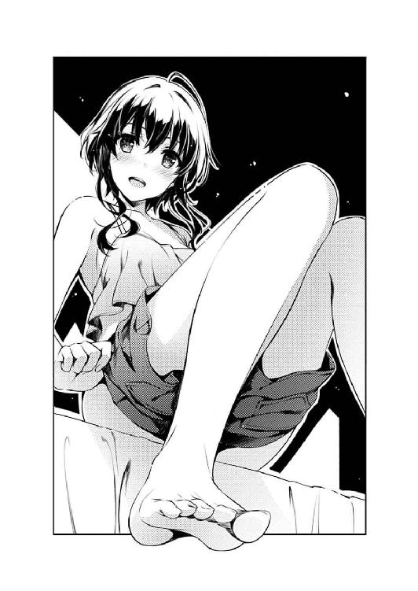
ほら、なんていうか、二番煎じ感というか、構成のご都合感が半端ないっていうか。
「む～、なんか悔しい......あたしの昨夜のテンションが馬鹿みたいじゃん」
「いや悪い。でも本当、期待してるから。聴かせてみてよ」
「ふん、今のその態度、すぐに後悔させてやる......」
美智留は、拗ねながらも、やる気までは失っていない様子で、頰を二発叩いて気合を込めると、弦に指をかける。
「これは予言だよ......この曲を聴いた後、あんたは、あたしの胸に顔を埋めてボロ泣きすることになる......」
「......ハードル上げるな～」
そして、そんな力強い宣言とともに、部屋の中に、美智留の作り出す音色が零れ出す。
※ ※ ※
「......どう？」
「............っ」
三分後。
部屋の中から美智留の音が消え、彼女が再びこちらを見つめた瞬間......
今度は俺が、割れんばかりの拍手を、部屋の中に響かせる。
「凄ぇ！ これいい！ 確かに新境地！」
「そう？」
「ああ、ちょっと涙ぐんだ！ めちゃくちゃ切ないじゃん！」
「......ふぅん」
と、俺は美智留の新曲......いや神曲に絶賛を贈りつつ、目尻を手の甲で軽くぬぐった。
それは、新作ゲームのために美智留が書き下ろした今までの曲とは、確かに一線を画した、クライマックスを鮮やかに彩るに足る作品だった。
今までも、楽しい日常を彩る爽やかな曲だったり、思わず吹き出してしまいそうなコメディタッチの曲だったり、二人の恋を思わず応援したくなるような、胸がキュンキュンする曲だったりと傑作揃いだったけど、この曲は、さらに頭一つ二つ抜け出している。
今、美智留が弾いてみせたのは、バラード調の曲だった。
今までの曲が、どちらかといえば爽やかで明るく甘い傾向だったのに比べ、この曲は、切なくて苦くて、けれど、それらを包み込む優しさをほのかに感じられて......その優しさが、かえって胸を強く抉る。
けれどそれは、もしかしたら、この曲単体の功績だけではないのかもしれない。
今までの明るめな曲の積み重ねがあったからこそ、この曲の異質さが際立ち、全体のバランスの中でインパクトを与えたのかもしれない。
だとすれば、それは最初から全体の曲の構成を考えた人間の功績......作曲者の美智留か、ディレクターの伊織か。
......とか、俺の拙い言葉でこねくり回しても、この曲の良さは伝わらないかもしれない。
こればかりは、実際に聴いてみないと、伝わらないかもしれない。
「いや楽しみだなぁ、これ、どこのシーンに乗せよう？」
そんなふうに、いたくインスピレーションを刺激され、俺は早速、またしても自分の領分じゃないディレクターの仕事に思いを馳せる。
こんなすごい曲を手に入れてしまった以上、これだけは、自分で入れどころを決めたいという、シナリオライターの欲望が際限なく湧き出てくる。
「......ま、ここまでは、想定内かな」
「え、何が？」
と、俺がそんなふうに一人で勝手に盛り上がっていると......
さっきとは逆に、今度は美智留の方が、醒めた表情で俺を見つめている。
「トモが、泣いてないこと、だよ」
「あ......」
指摘されて、俺は自分の目尻に触れる。
先ほど、少しだけ流した感動のしずくは、今はもうその跡さえ残っていない。
それはある意味、美智留が仕掛けた勝負的には、図らずも俺の勝ちになってしまったということで。
「いや、俺の負けだよ。めちゃくちゃ感動したって、本当！」
けれど、ここまで心を動かしてしまった以上、俺が勝利宣言する意味も意義もなく。
「いいや、ボロ泣きさせないと、意味がない」
それでも美智留は、そんな俺の、前向きな棄権を許さないつもりのようだった。
ショートパンツのポケットから何かを取り出すと、それを俺の目の前に掲げる。
「今から、魔法を見せてあげる」
「美智留......？」
彼女の指先にあったのは、一本の、ＵＳＢメモリ。
「本当の、この曲は、この中にある......」
※ ※ ※
ＵＳＢメモリを、テーブルの上のノートＰＣに挿し、メモリ内のフォルダを開く。
そして、フォルダ内のファイル一覧を見ると、俺はすぐに美智留の意図を理解して、そこから『saekano.exe』というファイルを選び、ダブルクリックした。
だってそれは、俺たち『blessing software』のメンバーにとっての合言葉......新作ゲーム『冴えない彼女の育てかた（仮）』の起動ファイル名だったから。
【詩羽】「終わったわね」
【主人公】「うん」
会議が終わり、ビルを出ると、爽やかな風が詩羽先輩の黒髪をなびかせる。
その風の爽やかさに煽られたのか、彼女の表情も、ここ数日見られなかった爽やかさ......というか、強さに満ちていた。
「な......」
「............」
けれど、そのファイルを起動させた直後の挙動は、俺の予想とはちょっと違ってた。
だって、表示されたのは、ゲームのオープニング画面......ではなく、いきなりイベントシーンだったから。
しかも、そのイベントシーンというのが......
「これってどういう......」
つい先月、詩羽先輩本人にまでテストプレイさせた、『詩羽先輩（仮）シナリオ』の、ラストイベント。
「ま、もうちょい進めてみてよ」
怪訝な表情を浮かべる俺のすぐ隣に、いつの間にか寄り添うように座っていた美智留が、挑発的な瞳で、俺を至近距離から見つめてくる。
けれど、俺は未だに彼女のその挑発の意図がわからず、ただドギマギしつつ、さらにマウスをクリックして、ゲームを進める。
その瞬間、俺の驚きと疑問は、さらに別の方向へと誘導されることになる。
結論から言えば、『純情ヘクトパスカル』の二巻のプロットは、承認された。
けれど、『三巻で打ち切り』という方針についての結論は、持ち越された。
......二巻の、初週の売り上げで判断するという条件で。
まぁ、売り上げで決めるって、ある意味、出版社としては当然の対応なんだけど。
それでも、この合意を勝ち取るまでには、相当に苦戦を強いられた。
だって、俺たちは編集長の掲げた方針に、真っ向から逆らってしまったんだから。
俺たちの提出した新プロットは、結局、彼女の意向をまるっきり無視していた。
「おい......ちょっと待て」
「いちいちツッコんでないで、さっさと進めなよ～」
ツッコまない訳に、いく訳がない......
「なんでお前が、これを持ってる......？」
「ん～？ なんのことかな～？」
画面に表示されたテキストは、確かに俺の書いたシナリオ、だった。
けれど、俺がゲームに組み込んだシナリオじゃ、なかった。
「没に、したはずだ......」
これは、『霞ヶ丘詩羽（仮）シナリオ』の初稿。
純愛ギャルゲーらしくない、ほろ苦く、物悲しい......
俺の知る、『本当の霞ヶ丘詩羽』の、気高き選択を描いた、シナリオだ。
【主人公】「とにかく、プロットは通ったんだ......ここからは、作家の領域だよ？ 霞先生」
【詩羽】「ええ、わかってる......ここから先は、書くのも戦うのも私がやる。私が、私の実力と、私の努力で、なんとかする」
今までの二週間......プロットを練り直すことよりも、俺たちが本当に真剣に話し合ったのは、実は、このことだった。
......これから先の、霞詩子と、俺、〈主人公〉のあり方。
実は、バイトを辞めることは、今日、編集長に宣告される前に、もう二人で決めていたことだった。
「お、おい、美智留......」
「............」
美智留はもう、俺の問いかけに、応えるのをやめたらしかった。
「これに、何の意味があんだよ？」
「............」
ただ、俺の隣で、俺と同じ方向......画面だけを、食い入るように見つめてた。
つまりそれは、俺が今していることが、正しいって証で。
こうして、マウスを押し続けることこそが、俺に求めていることだという意味で。
「この先も、プレイしなくちゃ、なんないのか？」
「............」
けどそれは、俺が求めることとは微妙に違ってて。
だって、ここから先は、自分で読むのも辛い展開が......
筆が走るままに書いて、自画自賛しながらも、激しく後悔して、捨てた展開が......
【詩羽】「だから、あなたは......あなたの道を、頑張って、ね」
「っ!?」
その瞬間、俺が受けた衝撃は......
言葉だけでは、絶対に伝わりようがない。
詩羽先輩（仮）が、別れの言葉を放つ、その瞬間。
つい先ほど聴いたのと、まったく同じ曲が、あの切なげなギターの旋律が......
そのセリフが表示されたのとまったく同じ瞬間に、流れ始めた。
【主人公】「うん......いつか必ず、霞詩子を、追い越してみせるから」
その話し合いの中で、誓い合ったんだ。
俺は、これ以上、彼女の側にいる〝だけ〟の人間にはならないって。
そして彼女は、これ以上、俺に依存しないって。
今まで通り、自分の実力で、自分だけの未来を切り開くって。
「あ、あ、ぁ......」
マウスを持つ手が、震えているのがわかる。
そのテキストが紡ぐシナリオと、切なく、苦く、優しい旋律が、有機的に絡みあい、俺の体と心に染み込んでいく。
これは、ヤバい。ヤバすぎる......
このままゲームが進めば、俺は、辿り着いてしまう。
テキストだけでは為し得ない境地に。
音楽だけでは届かない場所に。
それでも、もう、俺の意志は、その手の動きを止めることはできない。
震えるのも、マウスをクリックすることも......
そして、魔法は、発動した......
【主人公】「だから、詩羽先輩も、頑張れ......」
【詩羽】「ええ......」
「ひぐ......っ」
ギターの旋律と、主人公のエールと、ヒロインの決意が、三本の矢となって、俺の感情を射貫き、涙腺を、壊す。
「う、うぁ、ぅぅ、ぃ、ぁ......っ」
「っ......しゃぁ！」
隣の美智留が、大げさに勝利の雄叫びを上げる。
「っ......ぅるせ......っ、ょ」
その歓喜に、必死に憎まれ口を叩こうにも、もう俺は、美智留を視線に収めることすらできない。
視界の何もかもがぼやけてしまって、彼女のいる場所すら、わからない。
【主人公】「死に物狂いで頑張れ。負けてもまた頑張れ。折れても明日頑張れ」
【詩羽】「頑張る」
俺は、彼女をいつまでも応援する。応援し続ける。
でも、彼女を支えるためだけに存在し続けるのは、やめた。
俺は、今度は俺自身を支える。
第二の霞詩子に、俺自身が、なってみせる。
【主人公】「頑張れ......頑張れ頑張れ頑張れっ！」
【詩羽】「っ......うん、うんっ」
「う、く、ぅぁ......ぁぁぁぁ......っ」
「本物のＢＧＭって、凄いでしょ？」
美智留が、俺の耳元で、息を吹きかけるように囁く。
「ゲームの中で、感動的なシーンで流れると、ヤバいでしょ？」
自分の泣き声でうるさいはずなのに、彼女の声が、その感触が、しっかりと俺の耳に届くのが、悔しい。
「これからトモは、この曲を聴いた瞬間、このシーンを思い出して、泣くんだよ......電車の中でも、歩いてても、どこにいても」
だって、これは、一年前に、俺が美智留に伝えた言葉、そのままだ......
「あたしはそういう曲を作った......あんたを、そしてみんなを泣かす、最高の一曲をね」
こいつは、そんな俺の名セリフをパクっただけだ。
「それはさ、セリフと、音楽のコラボでしか為し得ない、奇跡、だよ？」
なのに、そんな低俗なパクリが、今はこんなにも恐ろしい。
「っ、馬鹿、じゃないのか......」
「そう思う？」
だって、セリフと音楽だけで、この有様なんだぞ？
完成版では、さらにここに、出海ちゃんのイベント絵が重なるんだぞ？
「馬鹿じゃないのか、俺......自分のシナリオで、泣くなんてさ......っ」
そんなことになったら......俺は、もう、立ち直れないかもしれないじゃないか。
「......ふふっ」
そんな恐怖に駆られた俺の、必死の憎まれ口を......
美智留は、余裕の、そして慈愛の笑みで流してしまう。
だったら、俺のこの感情の行き先は、もう、その微笑のもとにしか、残っていない。
「ほうら、トモ......」
美智留が、泣く俺の肩に手を掛け、自分の方を向かせる。
必死に顔だけを背ける俺を逃さず、真正面に回り込み、瞳を覗き込む。
......涙でだだ濡れな、みっともない瞳を。
『この曲を聴いた後、あんたは、あたしの胸に顔を埋めてボロ泣きすることになる』
いよいよ、美智留の勝利の瞬間が、間近に迫っている。
後はもう、おとなしく、その甘い敗北に身を委ねるだけ。
力を抜き、心を開放し、その、温かくて柔らかい胸に......
「......その前に、一つだけ教えてくれ、美智留」
「なぁに？ トモ」
「この没シナリオ、どこで手に入れた？ 誰が、このスクリプトを作った？」
「......あ～」
「大事なことなんだ美智留......それがわからなければ、俺は......」
「いや、まぁ、もちろん、加藤ちゃんに色々協力してもらって......」
「やっぱ恵も把握してんだな今日のこと！ はいここまで！ ありがとう美智留とってもいい曲だったわ～！」
「............ちっ」
と、思いっきり後ずさった俺に、美智留の、隠していた肉食獣の瞳が、一瞬だけきらりと光った。
第四章 遠慮がなくなったからって、関係が深くなったと思わない方がいい
「よう......」
「倫也くん？」
週明けの月曜の朝。学園の最寄り駅の改札口。
ホームから駅の出口へ流れ出てくる、同じ制服の学生たちの群れに、ひときわ目立たない女子生徒を見つけることは......いや、最近ではだいぶ簡単になった。
それは彼女が、今では容姿的に全然目立たなくなくなったせいか、それとも俺が、彼女に対する意識を改めたからなのかは、今となっては定かではない。
「へぇ、倫也くんの方から待ってるなんて珍しいね。友達に噂されるのが恥ずかしくなくなった？」
「悪いが今は、そんなときめいた会話をしている気分じゃないんだ」
「そうなの？」
そんな意識の変化とともに、互いの友好度が順調に上がり、名前で呼び合うようになった今、友達に噂されるのを気にするレベルはとっくに過ぎた。
「あのな恵......俺は今、怒ってるんだぞ？」
だから後は、こうして発生した爆弾をどう処理するかに心を砕くだけだ。
「半年くらい前に言ったよな恵......仲間だったら、報告して、連絡して、相談するのが常識だって」
「あ～、うん、どうだったかな～」
「それが今じゃなんなの？ 俺に何の相談もなく、勝手な判断しちゃって......」
「え～と、何のことかな～」
「俺の没シナリオのことだよ！ お前アレ美智留に見せただろ！ それどころか勝手にスクリプト作ってゲームに組み入れただろ！」
「あれは、まぁ、ほら、氷堂さんに報告して、連絡して、相談するのが常識だと判断したからで～」
「詭弁っ！ お前それ誠に遺憾！」
と、人がせっかく爆弾が破裂しないよう穏便に話し合いで済ませようとしているのに、当の恵の方が、あまりに誠意のない、というか真面目に対応するのもめんどくさいみたいな、以前の『加藤』を彷彿とさせるフラットさで応じてきやがった。
まさか、この俺に口喧嘩で勝てるとでも思ってるのか？
「それはそうと、プレイしたんだよね？ あのイベント」
「だからお前、今はそういう話を......」
「泣いた？」
「してる場合じゃないと思うんだけどなぁ!?」
......余裕で勝てると思ってるんだろうなぁ。
「まぁ、わたしはテストプレイしたとき泣いたんだけどね......倫也くんのシナリオと、氷堂さんのＢＧＭのコンビで」
「お......おぅ」
「で、どうやって泣いた？ やっぱり氷堂さんの公約通り彼女の胸......」
「泣いてないもん少なくともそこでは！」
というか、最初から負けることなんかまったく想定してないんだろうなぁ......
「で、本当に、あのシナリオ没にするの？」
「するの！」
「でもさ、あんなに出来がいいのに......わりと本気で泣けたけど」
「っ......で、でも今回は泣きゲーじゃないの鬱ゲーでもないの萌えゲーなの！」
で、完全勝利にさらに気を良くしたのか、恵は、今度はあの、俺の振られた......いや、俺の触れたくないシナリオについて、わざわざ踏み込んでくる。
こんなことになるなら、あのシナリオは俺の胸だけに収めておくべきだった。
深く考えずにサークルの共有ストレージに入れたままにしておいた一月前の俺を殴ってやりたい。
「でもさ、選択ミスした時や、一周目強制のバッドエンドとして残すとか......少しくらい毒が効いてた方が、マルチエンディングのゲームとしては面白いと思うけどなぁ」
「いやあのシナリオは萌えゲーとしてはルール違反だから。ピュアな萌えゲーユーザーは絶対に傷つくから！」
そう、主に俺とか。
自分で書いておきながらなんだけど、もはやあのシナリオは、真正面から正視できなくなってしまった。
元々のシナリオの重さと、中の人にリアルで言われた言葉と、さらに、あの美智留の切ないメロディとが相まって、今ではあのシーンを見るだけで、心が半分もがれるような痛みが走るようになってしまった。
「けど倫也くん、一年くらい前に言ったよね？ ギャルゲーには『ルールに縛られない』っていうルールがあるって」
「言ってないもん少なくとも恵には！」
あと、今さらですが、今巻については、既刊を手元に置きつつ読むのをお勧めします。
※ ※ ※
「むぅ......」
そしていつものように学園描写をすっ飛ばし、時は流れて帰宅後の夕暮れ。
机の上のＰＣディスプレイに表示されているのは、『巡璃15.txt』という名の新規テキストファイルが醸し出す、綺麗に真っ白な輝き。
......そういえば、『さあ、やるぞっ！』と準備万端で気合を入れたのは、何日前のことでしたっけねぇ......
いや、週末に作業が進まなかったことについては、前にも言った通り、何の問題もない。
その間に神原画と神ＢＧＭを手に入れて、俺たちの新作ゲームのクオリティはますます上がり、それにつられて俺のモチベーションもますます上がったからだ。
むしろ問題は、週末に作業が進まなかったことではなく、たった今、こうして机に座って一時間以上経過しても、一行も進まないことの方で......
「むぅぅぅぅ......っ」
体調は、少し寝不足なのを除けばすこぶる良好。
頭だって、授業中は寝......脳をセーブしていたため、十分動く。
なのに、『その日は朝から雨だった』程度でも問題ないはずの、一行目の書き出しすら始まらない。
イベント番号『巡璃15』は、共通ルートを終え、巡璃の個別ルートが始まる、第二部プロローグみたいなイベントだ。
つまり、巡璃というヒロインが、とうとう恋愛面を表に出すようになる重要なイベントということだ。
だから確かに、今まで以上に気合を入れる必要はある。
けれど、それにしても......
「う～ん、う～ん、う～ん........................休憩～」
結局、一時間も机の前でうねっておきながら、『何の成果も得られませんでしたぁ！』な状態でベッドに倒れ込む。
......ちなみに経験上、こうした机とベッドとネットの三角貿易は危険なパターンだ。
『ちょっと休憩』『ちょっと調べもの』という悪魔の免罪符に誘われるまま、気がつけば平気で二時間、三時間が経過し、元々想定していた作業量を劇的に削っていくという、（時間の）消耗戦だ。
なお、その消耗戦を避けるために、ベッドやネットから慌てて離脱しても、結局、机に戻ったところで何かが進むわけでもなく『あ～やっぱり十分休憩取らなかったのが悪かったんだわ～』などと言い訳をした挙句、三角貿易がさらに盛んになるだけという統計が出ている。
と、まぁ、そんな訳で、とりあえずしばらく机に戻るのは諦め、俺は寝転がったままズボンのポケットに手を入れ、スマホを取り出した。
それは本当は、今朝、登校時に色々あったせいで、一番使いたくない気分転換だった。
けれど、背に腹は......
「......あれ？」
恵『作業中？』
と、心の中でシミュレーションしていた色々な言い訳を無にしてしまうメッセージが、画面に表示されていた。
受信時間は、五分ほど前......どうやら、書けないという悩みに集中し過ぎてて見落としたらしい。
まぁ、同じ見落とすなら、せめて書くことに集中してて、という理由ならよかったんだけど......
『今は休憩中。なに？』倫也
恵『あ～、全然、まったく、これっぽっちも大したことじゃないんだけど』
恵『今朝のこと、ちょっとだけフォロー入れとこうかななんて』
『......誠意に満ちたフォローありがとう』倫也
『ってやかましいわ！』倫也
互いの短い会話文が、次々と画面に増えていく。
電話の方が速いんじゃないかと思わないでもないけれど、まぁこっちの方が安いし、今の俺の時間がもったいないとは、とても思えないし。
それに今は......まぁ、ほんの少しだけ、お互い、直接会話するのは気まずいんじゃないかという話もなくはなく......
恵『ま～あれだね』
恵『シナリオライターが取り下げたなら、それは本当は無いものだもんね』
恵『だから、サブディレクターとしては、これ以上は戻そうって言わない』
恵『ごめんね』
『うん』倫也
恵『でも、見ちゃったんだから、感想だけは取り下げないよ』
恵『あれは、本当にいいシナリオだったよ』
『さんきゅ』倫也
文章だと伝わらないニュアンスがある。
相手の顔も見えないし、声も聞こえないから、その先にある感情に、辿り着けないことがある。
でも、だからこそ、文章だから素直になれるときもある。
口に出しては言えないけれど、指先を動かすことでなら伝えられることもある。
恵『じゃ、今朝の件はこれでおしまいってことで』
恵『お疲れさま～』
『いいや、ちょっとだけ蒸し返す』倫也
恵『え～』
『今朝の恵、やっぱ、ちょっと空気読んでなかったって』倫也
そう、それは、ポジティブなことだけじゃなく、ネガティブなことだって。
恵『や～、あれはほら、いい作品にしたいって強い思いが』
恵『ほら、サークルのためってことは、倫也くんのためでもあるっていうか』
『それでも俺には、何かいつもよりヤな感じがした』倫也
恵『......そうなんだ？』
『うん』倫也
恵『それって、普段の倫也くんの態度と比べてどのくらいヤな感じ？』
『そうだな、半分くらい？』倫也
恵『いくらなんでも、それはありえなくない？』
『じゃあ、四分の一？』倫也
恵『ん～......』
『......一割くらい？』倫也
恵『うわ、それはだいぶ辛い思いさせちゃったね』
恵『反省します』
『ちょっと！』倫也
『それ謝ってるふりして俺のこと超ディスってない!?』倫也
そんなふうに俺たちは、全然大したことない、ほんのちょっとのわだかまりを、こうしてニュアンスの伝わりにくい文章で、謝ったり煽ったりして、解決する。
でも、こんな些細なことで言い合いしてるときにこそ、急に実感したりする。
恵『ま、冗談はともかく』
『心の底から冗談に聞こえないんですがそれは』倫也
恵『半分は謝るけど、半分は謝らないよ』
『何だよそれ』倫也
これが、お互いが近くなるってことなのかなって......
今までなら、全然気にもしなかったすれ違いが、妙に気になる。
笑って流せていた言葉が、どうしても忘れられない。
それは、俺だけじゃなく、多分、向こうだって......
恵『これからも、嫌なところ、見せるよ？』
恵『倫也くんだから、見せるよ？』
『......おぅ』倫也
恵『おやすみ』
『おやすみ』倫也
それを証明するかのように、恵は、最後に、一気に距離を詰めてきた。
......かと思うと、次の瞬間に会話を終わらせやがった。
照れてるのか、怒ってるのか、通常運転なのか......やっぱり文章からだと、ニュアンス伝わりにくいけど。
それでも、まぁ、さっきよりは気持ちが軽くなった俺がここにいる訳で。
だから、向こうも今頃、そんな気持ちになってくれてたらいいなって思ったり。
「んじゃ......やりますか！」
スマホをポケットにしまうと、反動をつけてベッドから跳ね起き、そのままの勢いで机に向かう。
多分、俺の不調の原因だった、恵との......いや、メインヒロインとの、ほんのちょっとのわだかまりも、跡形もなく解けた。
それどころか、その一連の仲直りの会話が、巡璃シナリオの一イベントとして、プロットに追加された。
だから、後はもう、勢いに乗って書くだけだ。
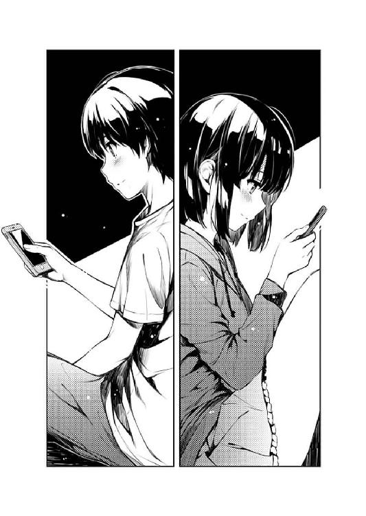
俺は、まだ夕食を済ませていないことすら忘れ、ただ、キーボードを叩き続けることに没頭する。
そして、それから五日後の週末......
『冴えない彼女の育てかた（仮）』最終シナリオ『叶巡璃ルート』は......
未だ、輝かしい白色のまま、だった。
第五章 人がスランプに陥ってる描写って、なんでこんなに筆が進むんだ
「モチベーションだってある。いや、いつもより高いくらいだ」
土曜の昼間、家の近所の、いつもの探偵坂。
その坂のてっぺん近くにあるコインパーキングの柵に腰掛け、俺は、徹夜明けのしょぼしょぼした目をこすりつつ、しみったれた愚痴をこぼす。
と、俺がそんな、ヒロイン攻略のルート選択に悩むヘタレ主人公みたいな休日を満喫しているのには理由がある。それは......
「なのに、なんで書けないんだ......」
まぁ、ついさっき状況説明したばかりだから、わかってるよね？
「俺だって、あの時から少しは成長してると思ったんだけどなぁ......」
あの時......それは一年半ほど前。
自分がまだ単なる消費型オタクで、いきなりやったこともないゲーム制作をぶち上げ、あっという間に暗礁に乗り上げた去年の五月。
そう、あの時俺は、この坂で、家族旅行先の北海道から、何の見返りも求めず、ただ俺を応援するために駆けつけた天使（当時）と会えたからこそ、クリエイターの道を目指すことになった。
で、ふたたびスランプに陥った今、あの時のゲンをかついでここに来てはみたものの、そんなに簡単に、ふたたび運命の天使（だから当時）が現れるはずもなく。
ただその代わり、今ここにいるのは......
「まぁ、これでも食べて元気出しなよ倫也君」
俺の隣で、もごもごとまんじゅうを食いながら、おすそ分けをしてくる男友達だった。
これも一年半前は、北海道土産のマルセイバターサンドだったのに。
と、ついつい菓子にまで愚痴をこぼしそうになったけど......
「って、美味いなこれ......」
それでも、こし餡のあっさりした甘さと、皮のもちもち感に、俺は自らの卑しい考えを深く反省した。菓子に関してだけは。
「名古屋駅で売ってる生麩のまんじゅうさ。昨日、久しぶりに中学時代の友達に会いに行って、さっき戻ってきたんだ」
「へぇ、これ名古屋名物なのか......」
「名古屋名物というにはマイナーかもしれないけどね。でも、今まで食べた人全員に好評という、ヒット率の高い逸品だよ」
伊織の言う通り、美味さだけでなくその軽さや滑らかさが後を引いて、あっという間に三つ目を口にしてしまうくらいには大当たりだった。
「まぁでも、純粋に名古屋名物といえば、まずはひよこ型プリンの『ぴよりん』がお薦めかな。これはかつて存在したシャチホコ型シュークリーム『シャチボン』の流れをくむ、正統的な名古屋ネタスイーツだね。続いて名古屋〝らしさ〟を追求するなら断然、坂角の『ゆかり黄金缶』。名古屋駅限定のキンキラキンのパッケージに、中身はエビの香りたっぷりのえびせんべい。悪趣味さとエビという、まさに名古屋のソウルをふんだんに盛り込んだ傑作だ。そういえば、名古屋名物に赤福やうなぎパイを推す人がいるけど、あれはそれぞれ伊勢と浜名湖の名物であって厳密には名古屋じゃないからね。名古屋駅もそれを憂慮したのか、一度うなぎパイの方の取り扱いをやめたんだけど、それがかえって地元民の怒りを買ってクレームが殺到......」
「お前実は名古屋大好きだろそうなんだろ」
と、弁舌の止まらない伊織に呆れつつ、俺は四つ目のまんじゅうを口に放り込んだ。
「なぁ、こんな急に書けなくなることなんて、あるのか？」
「そんなことだらけだよ、クリエイターなんて」
「もうちょっと何かないのかよ？ 前に進むためのアドバイスとか、やる気にさせる一言とか......お前、プロデューサーだろ？」
とりあえず、頭を名古屋から切り離し、本題の悩み相談に戻った俺に、伊織はなかなか身も蓋もない答えを返してくる。
「僕は、クリエイターをやる気にさせるプロデューサーじゃない」
「じゃあ何のためにいるんだよお前......」
大体、プロデューサーってのは、クリエイターをおだてたり、飲み屋で愚痴を聞いたり、現場に差し入れしたりと、とにかく何でもいいから相手をいい気持ちにして仕事をさせるのが仕事じゃないのか？
一番必要とされるのは、会社に高額の領収証の必要性を認めさせる能力じゃないのか？
「僕が目指すのは......クリエイターの仕事を、成功作として皆に認めさせるプロデューサーだ」
「お、おぅ......」
などと、俺の中のゲスい認識とは裏腹に、伊織の答えには、こいつらしくない意識の高さ（ ）が垣間見えた。
「作るモノが売れるか売れないか、今のご時世にウケるかウケないかっていう方向性には口を出すけど、いいモノを作り上げるのはあくまでクリエイターだ。僕じゃない」
「その〝方向性〟ってやつをもうちょい具体的にさ......こういうイベント書いたらいいんじゃないかとか、こういうセリフを入れて欲しいとかさ」
「だから、残念ながら、僕はそういうタイプじゃないんだってば」
なので、こちらがどれだけしつこく食い下がっても、伊織はその意識の高さ......いや、信念のもとに、俺を冷たく突き放す。
「だいたい、そういうタイプのプロデューサーだったのは君だろ、倫也君」
「俺......？」
「クリエイターにとことん寄り添い、シナリオに口を出して、時には自分で書いて、絵描きの心の問題にまで踏み込んで、今度は逆に描けなくさせて......」
「うぐっ......」
伊織のその指摘に、一年ほど前の記憶が走馬灯のように頭をよぎり、思わず心拍数が跳ね上がる。
「それは時にはカンフル剤として作用するけれど、一歩間違えば魔剤になってしまう」
「お前その後半のやつ本当に意味わかって使ってる？」
「とにかくそういうことさ......だから僕は、君の帰る場所になれない」
「いやそれはならなくていいからていうかいつそういう話になった」
そんな、ふざけているのか真剣に相談に乗ってくれてるのかよくわからない伊織の言葉に反撃しつつ、俺は、箱の中の最後の生麩まんじゅうを奪うべく、こちらは先制攻撃を仕掛けていた。
「けどさ......じゃあ、俺は、どうやって俺に書かせればいいんだ？」
が、最後の一個争いに見事に敗北を喫した俺は、またしてもやさぐれた口調に戻り、伊織に愚痴る。
しかし......
「僕が、そういう質問に何て答えるか、君なら知ってるんだろ？」
「......『そんなこと、僕にわかる訳ないじゃないか』だろ？」
「はい正解～」
「てめぇ......」
こいつ、友達がこうして苦しんでるってのに、なんて薄情な......ああいや、こいつとは友達なんかじゃないんだから誤解しないでよねっ。
「だから、最初から僕は一一月まで待つって言っていただろう？ もっともっと苦しんで、のたうち回ってくれていいんだよ？」
......前言撤回。こいつなんかとは友達じゃない。誤解すんな。
「でも俺には、時間を掛ければ、掛けただけいいモノができるなんて、信じられない」
何しろ、今までの俺は、短期間での勝負しかしていなかった。
初めて書いた、詩羽先輩との共作シナリオは、一ルートをたった二日で書き上げる（それも総没二回を経て）という、まるでタイピングコンテストにでも参加してたんじゃないかというレベルの早業だった。
そして、完全単独シナリオになった今作でも、プロットで少し詰まりはしたものの、シナリオ作業そのものは順調そのもので、今までのヒロインルートは、全て二週間以内には書き上げていた。クオリティはともかく。
ノってくると、頭で考えたテキストに、指先が追いつかなくなることなんか度々で。
けらけら笑っている時も、おいおい泣いている時も、悲鳴を上げている時も、雄叫びを上げている時も、いつでもテキストファイルは、文字で埋まっていった。クオリティはともかく。
......だから、一週間が過ぎた時点で一行も進んでないなんて、初めての経験だった。
「作家ってのは、ずっとこんなプレッシャーを抱えて生きてんのか......？」
書き続けている時は、確かに体の負担は大きかった。
けれど、書けなくなった今、心に掛かっている負担は、そんなものの比じゃない。
責任感と、焦りと、無力感と、怒りと......その他数えきれない種類の負の感情が徒党を組んで、俺を押し潰そうとしているかのようだ。
「大丈夫、そういうプレッシャーと無縁な人だっているよ」
「どんな？」
「まずは、自分以外は眼中にない、俺様クリエイターの中でもさらにスーパーな人。そういう人は他人の迷惑をまったく顧みないから、遅れようが逃げようが痛くも痒くもないしギャラも返さない。なおＢ型に多い」
「......それは参考にならん。あとＢ型の人に謝れ」
「もう一つは、制御しきれないくらい無限のアイデアが常に頭から湧き出てて、スランプになんか陥ってる暇のない人」
「そんなモンスター......ああ、そういえばいるか」
こいつの元ボスが、まさにそれだった。
「今までの倫也君も、似たような感じだったよ。クオリティはともかく」
「ま、今回のことで思いっきりメッキが剝がれたけどな。クオリティのことでなく」
「でも、そんな神がかった状態が一○年も続いたら、人格が破綻して朱音さんみたいな人間になっちゃうけどね」
「......あ～、俺、普通のクリエイターでいいわ～」
そんなこんなで、愚痴だか無駄口だかのたたき合いで、俺の土曜の午後は過ぎていき。
人に聞いてもらうことで、少しは気が楽になったけれど、それでも、書き出しのアイデアが浮かぶとか、そういうことは全然なく。
俺にとって、無為とは言わないまでも、何も進まない時間が進んだだけだった。
「それはそうと、加藤さんにはちゃんと話したんだろうね？」
「何をだよ？」
「そりゃ、僕と二人きりで会うことさ。黙ってたら後で怒られるだろ？」
「色んな意味で嫌すぎること言わないでよ!?」
※ ※ ※
「......っ」
部屋の窓からほんの微かに差し込んでいた夕陽が完全に消え去り、街からほぼ赤色が失われた、逢魔が時のほんの少し後。
俺の部屋の中も、とうとう暗闇に支配され。けれど、その闇にただ一つだけ抵抗しているデスクトップＰＣのモニターの前に人はいなくて。
結局俺は、何も進められず、ベッドの上に寝転がったまま、そんな昼と夜の切り替えの時間を迎えた。
伊織と別れ、家に戻り、机の前に座り、悲壮な覚悟を決めたのが、数時間前。
なのにモニターに表示されたテキストファイルに書かれているのは、相変わらずイベントのタイトル部分だけ。
けれど、その数時間で俺は何も書かなかった訳じゃなかった。
ただ、書いては消し、書いては消しを繰り返しただけだった。
実は、これでも大きな進歩と言えなくもない......かもしれない。
だって、昨日まではずっと、それを脳内だけで完結させてしまっていたんだから。
頭の中に浮かんだアイデアを、頭の中で思い描き、吟味し、落胆し、そして消し。
また別のイベントを思い描いては消し、描いては消しの繰り返しで、目に見えるところまで持ってくることすらしなかった。
そんな、どこまで行けば出口があるのかわからない、暗闇のトンネルを延々と歩き続ける無為な行為に、ようやく『これは駄目だ』と悟ったのがついさっき。
『とにかく書き出してみよう。そうしたら先に進むかもしれない』と、まずは出だしの部分だけでもと、頭だけでなく、指も動かしてみた。
......いや、それに気づくのが遅すぎたってことは自分でもわかるんだけど。というか、最初から自分のしてることに『駄目じゃん』ってツッコミを入れ続けていたんだけど。
それでも、自分がどうしてそんな駄目なサイクルに、自らの判断で陥るのかについては、あの時も、今でも、わかってない。
「今度こそ......」
お馴染みの言葉とともに、ベッドから起き上がり、机に向かう。
この言葉を呟くのは、今日だけでも二桁を余裕で超えている。
だから、机に向かった回数も、おのずと二桁を超え、要するに、ベッドに逃避した回数も、また二桁......
それでも俺は、昨日よりは、ほんの少しだけ前に進んだという事実にすがり、もう一度、凝り固まってしまった指を必死で動かし、キーボードを叩く。
※ ※ ※
............で、それからまた数時間後。
さっきの行為を、あと五回繰り返して、今はそろそろ夜九時を過ぎようとしたところ。
「あああぁぁぁぁぁ......っ」
俺はとうとう、無気力にベッドに寝転がるのはやめ、気合を入れて......ベッドの上で、のたうち回った。
結局、五回の......だいたい、二○○行くらいのテキストが、またしてもバックスペースキーの餌食となった。
途中まで書いて、その先の展開が見えなくて消したり、その先の展開が陳腐に思えて、続ける意味を見出せなくなって消したり、または、その先の展開も納得できるのに、『それでも足りない』と思ってしまって消したりと、消す理由はそれこそ千差万別にして唯一。
ただ、自分が駄目だと思ったからに尽きる。
どうして、何度も何度も消してしまうのか？
どうして、いつまで経っても納得しないのか？
......それは、未だにわからないまま、だけど。
ただ、どこで詰まっているかは、さすがにもうハッキリしてる。
今ディスプレイに表示されている、このイベントがずっと書けないだけで。
イベント番号：巡璃15
種類：個別イベント（巡璃個別ルート開始）
条件：最終ヒロイン選択で巡璃を選択した場合に発生
概要：巡璃、主人公を意識するようになる
個別ルートに入っての、最初の......
彼女の、一番大きな気持ちの移り変わりを表現するイベントだ。
それはつまり、初めて、巡璃がヒロインとして〝立つ〟シーンで。
そしてつまり、今まで彼女のことを気に入ってくれていたユーザーに、今度は、本格的に恋をさせるシーンでもあって。
さらにつまり、このシーンを外せば、巡璃ルートが失敗してしまうという、絶対に失敗できないシーンでもある。
で、そんな大事なシーンのはずなのに、プロットを見返してみると、書かれていたのはたったの一行......
『巡璃、主人公を意識するようになる』
......それを見た瞬間、俺はそのプロットファイルから該当部分をシナリオファイルにコピペして、プロットファイルをそっと閉じ、その後、数か月前の自分を脳内でボコった。
どうしてこのプロットにＯＫ出した伊織......
なにが『メインヒロインはぶっちぎりの一番でなくてはならない』だよ。
これのどこが一番なんだよ、ぶっちぎりの投げっぱなしじゃねえか。
いや、確かに他の部分は随分細かく組まれている。
序盤の、巡璃がまだフラットだった時期の、すっとぼけた会話サンプルなんかは、少々イラっとするくらい充実していたし、終盤の、彼女と結ばれてからの、イチャイチャした会話なんかは、やっぱりイラっとするくらい充実していた。
つまり、当時からこのシーンに関してはずっと目を逸らしてたって訳で......
まぁ、そんな事情もあって、一度は方針を変更しようとしたこともある。
この、巡璃が主人公に恋をするシーンをすっ飛ばして、その後のこいびとどうしですることぜんぶを先に書こうとして......結局、すぐに挫折した。
だって、巡璃と主人公が、どんな経緯で恋人同士になったかを知らなければ、その前提を下敷きにしたイチャイチャ描写なんてできるはずが......
いや、そりゃ、『共通ルート書いたところでメインライターが逃げたから、あと二日で一二ヒロイン分の個別ルート全部書いて』と言われてやりきった伝説の六人なら簡単にできるかもしれないけれど、あいにく俺はその六人のうちの一人じゃない。
それに、その程度の『手抜き』が、この作品の命運にかかわると信じ切ってしまっている俺にとっては、そんなフレキシブルな書き方はもう無理だ。
ロケーションはどうする？ ショッピングモール？ 校内？ それとも主人公の部屋？
シチュエーションはどうする？ デート中？ 放課後？ それとも花火大会？
......そうやって、頭の中で、テキストの中で、数百、数千の巡璃が現れては、そして消えていった。
どれも悪くなく、そして良くもないって感じてしまったから。
だって、巡璃と初めて、男の子と女の子として心が通じるイベントなんだ。
下手をすると、一年半前から思い描いてて、けれど、その間、一度もこれだと決めたことのないイベントなんだ。
罪悪感と絶望感に押し潰されそうになり、ポケットからスマホを取り出す。
......いや、これだって、今まで何度もやってきた動作にすぎない。
けど今度は、今までと比べても、悲壮な決意というか、切羽詰まった覚悟の量が、今までとは違う。
人に頼ることは、恥じゃない。ただ、頼り切らなければいい。
自分の力だけに頼ることは、誇りじゃない。それで結果が出せなければ本末転倒だ。
そして俺は、ただの、駆け出しのヘボライターだ。
クリエイターとしての邪魔なプライドも、凝り固まった意地も、まだない。
だから俺は、スマホのアドレス帳を開き、『か行』の......
「......っ」
......『か行』の最初に載っていた『霞ヶ丘詩羽』を、慌てて俺は画面の外に流した。
それは、クリエイターとしてのプライドや意地じゃない。
ただ、なんつ～か、男子としての意地というか、なんというか。
今は、あのひとにだけは、頼ることはできないというか......
「あ......」
そんな懊悩とともに、画面をスクロールしていた俺の手が、ぴたりと止まる。
そこはまだ、『か行』のままだったけれど。
もう一人だけ......もしかしたら、今の自分に、力を貸してくれるかもしれない人の名前が、載っていた。
だから俺は、祈るようにスマホを頭上に掲げ、必死に緊張を解き、通話ボタンを押す。
で、しばらくの呼び出し音の後......通話口から、少し気だるげな声が、響いた。
『......少年か？』
「ご無沙汰してます......紅坂、朱音さん」
第六章 ホント、昔はもっと速く書けたんですよ......
『まさか、君が掛けてくるとはな......』
「もしかして、お休み中でしたか？」
『いや......ああ、少し、うとうとしてたかな。今は自宅でね』
まさかってのは、彼女だけが抱いた感想じゃない。
自分でも、どうして彼女に辿り着いたのか、よくわかっていない。
確かに彼女は、俺の知り合いの中でも数少ない、ストーリー創作もする、プロのクリエイターだ。
だから今の俺が教えを乞うとすれば、能力的には適任......というか、これ以上なく最適と言えなくもない。
ただ、それでも......今までの歴史的にも、地位の格差的にも、相手の人格的にも、あまりにも非合理的でチャレンジャブルな選択だとしか言いようがなかった。
紅坂朱音──
一○年近くもの間、コミック、アニメ業界でトップクラスの人気と売り上げを誇る、最強のメディアミックス作家。
作画もストーリーも、どちらも高い評価と技術を誇り、根強いコアなファンも、移り気な一般人も、国内だけでなく海外のユーザーも幅広く次々と取り込み、常に成長し続ける、業界有数のクリエイター。
......だから、こんな同人の、しかも新人シナリオライターからしてみれば、雲の上のその上の、さらに成層圏を超えたポジションにいる存在で、本来なら、直接電話を掛けて気安く相談できるような相手では、あり得ない。
「突然すいません......今、お話、大丈夫ですか？」
『......何の用だ？』
それでも、ちょっとした勇気程度でこうして連絡を取れたのは、俺が彼女に対して、まぁそこそこの因縁を持っていたからで。
「あ、忙しいようでしたら、改めてメールで......」
『用を言え。質問に答えろ。私を怒らせるな』
「......すいません」
でもやっぱ怖ぇ......
以前の、エキセントリックに笑ったり怒鳴ったりする彼女も相当だったけど、今日のこの、眠たげで不機嫌そうな彼女も相当にアレだ。
「実は、少し話を聞いて欲しくて......この前、名刺くれたし、それで......」
『言っておくが、ウチのメンバーとの男女関係絡みなら関知しないぞ？ そんなものは自分で解決しろ』
「全然、まったく、これっぽっちもそういうことではないのでご安心ください」
けど、そういえばさっきの電話、こちらから掛けたのに、相手が俺だとわかってたっけ。
ってことは、彼女は、俺なんかの番号をアドレスに入れてたってこと、なのか？
「俺、今、例のゲームのシナリオ、執筆中でして......」
『まだ書いてんのか？ 出すの冬コミだろ？ 同人は吞気でいいよな』
「すいませんすいません......で、相談ってのは、その......」
『あんたも同人上がりだろ』ってツッコみたいのをぐっとこらえて、俺は、さらに慎重に言葉を選び、本題に入ろうとする。
「今、ちょっと行き詰まってるっていうか、最後の、メインヒロインの、一番大切なシナリオが、全然進まないっていうか......」
と、語ろうとした本題の、入り口も入り口で......
『詳しく状況を話せ。どこまで書いた？ どこで詰まってる？ 自分の中での理想と現実のギャップは何だ？ もし可能なら、今まで書いたプロットとシナリオを全部送れ』
「........................はい？」
紅坂さんは、考えられないくらい前のめりに、俺の愚痴に食いついてきた。
『ああ、シナリオは難しいか。なら話していい範囲でストーリーについても教えろ』
「い、いや、それより......本当に、聞いてくれるんですか？」
『創作についての相談なんだろ？ なら聞かない訳にはいかない』
「紅坂、さん......」
それは、相談を持ち掛けた俺の方が、逆にビビってしまうくらいの積極さで。
心なしか、先ほどまで眠たげだった彼女の声に、張りと生気が戻ってきているように感じられて。
ここまで本気で応えてくれると、こちらとしては失礼ながらも、逆に罠なんじゃないかと身構えてしまったり......
『早く話せ。一刻も早く、もがき苦しむヘボ作家をあざ笑ってやりたい』
「......うわぁ」
いや、間違いなく罠だな。
※ ※ ※
それから俺は、彼女に、全てを話した。
彼女に渡した体験版以降のストーリーも。
その中でも、特に俺が今行き詰まっている、メインヒロインルートの内容も。
行き詰まっている箇所も、行き詰まっている期間も、行き詰まっている理由に関しての考察も、書くために今まで自分が試してきたことも。
自分が求める最強の萌えゲーのイメージも、自分が求めるメインヒロインルートも、自分が求めるメインヒロインも。
時に熱く、時に早口で、時に涙ながらに。
そして彼女は、そんな俺のとめどなく零れ落ちる話を、時に相槌を打ちつつ、時に黙って先を促しつつ、時に的確な質問を交えつつ、ついに最後まで聞き終えると......
『ぷっ......』
「............」
『く、くくく......っ』
「............」
『あっはははははははははははははははははははははははははははははははははははははははははははははははははははははははははははははははははははははははは！』
「ちょっと！ そこまで笑うことないでしょ!?」
思いっきり大爆笑した。
やっぱ超性格悪ぃ......
『こ、この、この......ヘタクソが、調子乗りやがってよ～......あははははははははは～』
「ヘタなのはわかってるよ！ だから、ヘタなりに一生懸命前に進もうって、もがいてんじゃないか......」
『いや、逆だ。前に進んじまったから書けなくなったんだよ』
「え......？」
『そうか、もう恥を知ったか。思ったより早かったなぁ......目が肥えたのか、頭が肥えたのか』
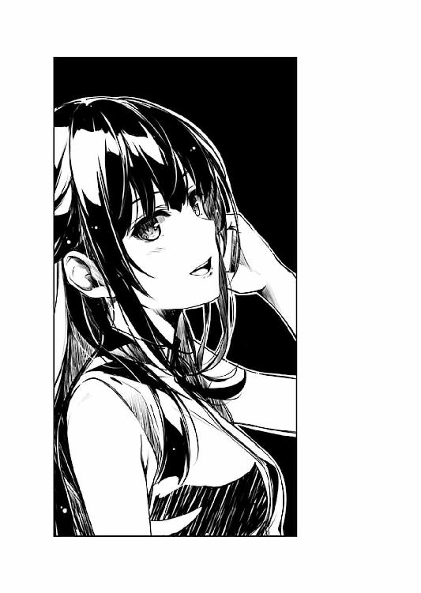
でも、そんな性格最悪の天才女性漫画家は......
『いや、こんなに早くスランプに陥るってことは、両方いっぺんに来たと考えるのが妥当かな。これで君も、ビギナーズラックじゃないまともなシナリオライターになれるかな』
「紅坂さん......？」
口調や態度では、明らかに俺のことをあざ笑っているにもかかわらず、その言葉では、とても俺のことを貶めているようには思えなかった。
『まぁ心配するな。そいつはクリエイターなら誰もが通る道だ。まぁ、通れなかったらクリエイターじゃなくなるけどな』
「いや心配しますよそれ......」
というか、口調を無視して彼女の言葉をテキストに起こしてみると、その内容はやはり、俺のことを励まし、アドバイスを送ろうとしているように思える。
まぁ、制作も佳境に入ったところでそんなこと言われても背筋が凍るだけだってのはさておき。
『大体、プロになってからだって、君と同じ状態になって業界から消えていった作家はたくさんいる』
「そ、そうなの？」
『ああ、今から実名をいくつか挙げるからメモっておけ。自分への戒めにするもよし、飲み会でのネタにするもよし......』
「確かにそれを知れば自分のオタクライフが豊かになるのはわかりますが、でも人として歪んだ業界人になってしまう気が......」
ああ、けど彼女の言葉は、そのままテキスト起こししただけではまだ駄目で、その中から使えそうなものだけを抜粋しないと、励ましてるように聞こえないなやっぱ......
『そんなふうに、今まで順調に刊行を重ねてきた作家が、突然、あるいは徐々に遅筆になっていくのには、いくつか原因がある......』
「いくつもあるんだ......」
『一つは単純に、今までのクオリティで満足できず、今よりいいものを求めて試行錯誤する......いわゆる、目が肥えたって奴だ』
それってどこかで......いや、半年前に聞いた気がする。
俺みたいな雑魚の目には全然いいと思えた絵も、基準が上がってしまった本人の目には未熟に映り、その結果、数か月も手が止まってしまって......
『そういう奴らの進む道は単純だ。理想に辿り着いて一流になるか、理想を自分の技術レベルまで落として二流になるか、理想に辿り着かずに消えるか......』
「英梨々は......」
『そうだな、珍しく辿り着いたな、あいつは......』
紅坂さんの声に、微妙に嬉しそうな音色が混じる。
で、それと同時に、俺の胸がちくりと痛むのもワンセットで。
「で、俺も、目が肥えたから、自分のシナリオに満足がいかなくなったってこと......？」
『いや、君の場合は多分、それだけじゃない』
「さっき言ってた、『頭が肥えた』ってやつ、ですか？」
『ああ、こっちはさっきのより少し厄介でな......』
「やめてよちょっと......」
『頭が肥えた......スキルが上がったせいで、その先にあるたくさんの進むべき道......選択肢が見えてしまうんだな、今の君には』
「........................あ」
その、思いっきり心当たりのあるピンポイントな説明に......
俺は思いっきり深く、濃いため息で応えた。
『書いている時は、こちらの方向性が最適と思って物語を進めていっても、ある時ふと、一度は消した可能性を思い返してしまう』
「あ～、あ～、あ～」
『そして、そちらの方が良かったのではないかという疑心暗鬼に囚われて、手が止まる』
「あぁぁぁぁぁぁ～」
まさに、『あるある！』と、俺の中の百人ほどの俺が同意の雄叫びを上げる。
『そうなるともう駄目だ......今の物語を進めることに疑念が生まれたら、その物語を信じられなくなったら、いいものは書けない。自然と筆は進まなくなる』
というかその考察は、俺の頭の中の構造を見て解説しているんじゃないかってくらいに正確で、緻密で、そして容赦がなくて。
『しかし今さら、自分の心の中で立てた〝選択肢〟のところに戻って、別の物語を書き始めてもいいものになるかもわからない......進むも地獄、戻るも地獄。どっちつかずの、優柔不断主人公、じゃなくてライターの出来上がりだ』
だから俺は、電話越しの彼女の言葉に胸を抉られ、途中から同意も反抗もできないまま、呆然と打ちひしがれる。
『いや、良かったなぁ君......くっくっく』
「何がですか......」
対して紅坂朱音の方はと言えば、そんなふうにどんどん魂の宝石が濁っていく俺とは対照的に、どんどん声と口調に愉悦の色が混じっていく。
『何がって......君の、今まで一本道だった物語に、次から次へと新しい可能性が解放されているんだ。これがめでたくなくて何だというんだ？』
「それ自体はめでたいことかもしれないけど、それが今だってのが問題なんですよ！」
だって今は、俺のオタク人生の全てをかけた勝負の真っ最中。
......まさに通話中の〝敵〟を倒すための勝負の真っ最中、だってのに。
『この程度で落ち込んでてどうする？ 言っておくがな、この思考の迷宮は、スキルが上がれば上がるほど複雑化していくぞ？』
「............マジ、で？」
と、そんなふうにふてくされたところで、相手の愉悦が収まることはない。
『考えてもみろ、君が新しい経験やスキルを得るたびに、新たな脇道ができたり、今まで行き止まりだった道が開通していく......その先を覗くのは、楽しみでもあり、怖くも感じるはずだ』
けれど、その彼女の楽しげな煽りに、一片どころか多数の真理を感じ取ってしまう。
俺は、巡璃ルートに無限の可能性を感じてしまった。
彼女が主人公を意識する理由を、他のヒロインのそれとは一線を画した画期的なものにしなければならないと思っていたし、事実、一線を画したアイデアは、それこそ三桁に達するくらい大量に浮かんできていた。
ただ、それが画期的なものと感じられなかっただけで。
『逆に、君が今までよく通っていた王道は、積み重ねた経験やスキルのせいで老朽化や陳腐化が激しくなり、塞がれるか、あるいは細く、険しくなっていく......よほどのことがない限り、そんな面倒な道は通りたくなくなる』
そして、画期的であろうとするあまり、今までに使ったパターンをことごとく封印した。
子供の頃の出逢いの記憶。恋敵の登場、それも主人公側、ヒロイン側の二パターン。病気や怪我などの看病......
それらの案を、鼻で笑ったり、のたうち回って恥ずかしがったりしているうちに、全てのアイデアを貶める癖ができてしまっていた。
『その先に残るのは、まるでアリの巣のように張り巡らされた、複雑怪奇化した思考チャートという訳だ......自分でも、紐解けないくらいのな』
彼女が語るクリエイターの懊悩は、不気味なくらい、俺の心の深奥をさらけ出し。
だから彼女に笑われても、俺は笑い返すことができない。
「じゃあ......どうすれば、いいんですか？」
そう、ただ、訊くしかない。
その深奥からの、脱出方法を。
それも、あと二週間......いや、せめて一月半しか掛けない手段で。
『これからは、ずっと付き合っていくしかないな......君が、そこに至った作家なら』
けど彼女は、俺が一番欲しくなかった答えを、そりゃもう狙い澄ましたかのようにピンポイントで示してきやがった。
「あの、せめて、もっと具体的な指示とかありませんかね......もう少し割り切った考え方とか、確実に先に進むやり方とか」
『ま、少しでも楽したいなら、最初から片方を潰すんだな』
「それって......古い道と新しい道の、どっちかってこと？」
『そうだ、その時その時に開通した道だけを選んで縦横無尽に走り、ユーザーに常に新しい驚きを提供する上手い作家になるか......』
『それとも、普通なら恥ずかしくて閉じてしまう使い古された道を、無理やりこじ開けて、ユーザーにいつも同じ感動を提供するパワフルな作家になるか』
「それ、紅坂さん的には......俺は、どちらに進むべきだと思いますか？」
『そうだな、私ならどちらも薦めない』
「をぉぉぉぉぉ～い......」
そして彼女は、俺が一番欲しかった答えを、狙い澄ましたかのようにスルーする。
『結局、どちらもやがて行き詰まるんだよ。新しいルートばかり開拓し続けると、いつしか先鋭化してユーザーの門戸を狭める。いつものルートをこじ開けてばかりいると、いつしか本当にマンネリ化して、やっぱりユーザーの門戸を狭める。初心者か、信者しか食いつかなくなる』
「俺、そんな先の話なんかしてないですよ。まさに今、どうしたらいいかって......」
『君が、これからもずっと物語を作っていきたいのなら、どちらの能力も手に入れろ。この一作で燃え尽きたいのなら、勝手にどちらかを選んで突き進めばいい』
「これからも、ずっと......？」
結局、俺がどれだけ頼んでも、彼女は特効薬を処方してはくれなかった。
彼女が俺に指し示した方法は、結局のところ、地道な努力と、それを為し得る強 な精神力を鍛えることでしかなかった。
な精神力を鍛えることでしかなかった。
『それに、今すぐ何とかする方法なら他にもあるぞ？ 一日で一年分のストーリーを考えれば、スランプに陥ってもすぐにリカバリできる。これならお薦めだ』
「それどんなＣＰＵ使ってんの！ 世界一？ 二番じゃ駄目!?」
......自分はチートキャラのくせに。
『十手先まで読むな。先の先の先、せめて三手先までにしろ。でないと長考に入る。将棋だってそうだろ？』
「はぁ......」
紅坂先生のありがたいご講義は、まだ元気に続いてる。
というか、ずっと聞いてるだけの俺の方が、先にギブアップしかけている。
『駄目だと思ってもまずは戻るな。一度、最後まで暴走しろ』
彼女の言葉が役に立たない訳じゃない。
というか俺は今、どれだけ金を払っても普通なら聞けない話を、電話代だけで享受している、ものすごく幸運な人間のはずだった。
......ただ、あまりに貴重で重すぎて、消化に時間が掛かるだけ。
『それで箸にも棒にも掛からなければ、また最初からやり直せばいい』
「あ......」
『何だ？』
「いえ......」
こうしてたまに、進研ゼ......詩羽先輩に習ったところも出てきたりして、逆説的にだけど、紅坂さんの言葉の説得力が補強されたりする。
『一週間、なにも書けないのと、一週間分のテキストを全部捨てるのって、一週間後から見てみれば、結果的には同じだろ？ それどころか、書いたことで自分のスキルが上がってる。アドバンテージさえある』
まぁ、そのことを、どちらの女性に伝えたところで、どちらにも怒られそうだから敢えて言わないけど。
『そうやって暴走した作品って、結構面白いぞ？ 計算では出せない、その瞬間の煌めきがある。粗削りの凄みがある』
「はい......」
『もっと楽しめよ、自分の暴走を。そこから湧き出てくる熱さを......前の作品の時は、そうしたんだろ？』
まるで、どこかのテニス解説者のような熱いセリフを、少しばかりの狂気のオブラート......いや、香辛料で誤魔化して。
「紅坂さん」
『ん？』
「ありがとうございました」
彼女が口にした言葉は、間違いなく、俺に対しての、熱いエールだった。
だから俺は、言葉だけでなく、遠く離れたこの場所で、深々と頭を下げる。
今、彼女のいる方向がわからないのが、ちょっとだけ心残りだった。
『最後に一つだけ......』
「はい......」
『オナニーしろ、少年』
「ぶっ!?」
『自分が思いっきり気持ちいいオナニーを、皆が思わず見たいと思うようなオナニーを、そんなものすごく恥ずかしいオナニーを、思いっきり見せつけてやれ！』
「いやいやいや最後の一つがそれはないでしょ!?」
『作家なんて皆、変態だ、露出狂だ。自分の狂った頭の中を全世界の人間にさらけ出そうとする、とんでもないキ○ガイばっかりだ。あはははははははははははははははははは』
「あんたやっぱどっかおかしいよ!?」
第七章 恵派の方はここに栞を挟みっぱなしにしておくのがいいかと
「............」
コール五回目。
すっかり夜も更けた部屋の中、テレビの音も動画の音もない静寂な室内に、スマホからの微かな呼び出し音が響く。
「............」
コール七回目。
さすがにここまで出ないとなると、電源を落としているか、持ち歩いていないか......
「............」
コール一○回目。
ならば、これ以上呼び出したところで、もはや単なる時間の無駄だろう。
「............」
コール一五回目。
よし、だったらあと一○回鳴らして、それでも出なかったら......
『......倫也くん、今何時ぃ？』
「え～と、土曜の......いやすでに日曜の午前一時半だな。おはよう恵！」
『......その時間はおはようじゃないと思うんだけどどうかなぁ』
そろそろ諦めて呼び出しを切ろうとした矢先......うん矢先に、通話口から眠たげな声がやっと届いた。
「まぁそれはそうと、ちょっと話があるんだけどいいかな？」
『そこでわたしの意見を聞くくらいなら、あんなに長いこと呼び出し続けたり......』
「いや実はさ！ さっき、すっげぇこと閃いたんだよ！ 俺たちのゲームのメインシナリオについて、最高のアイデアが......っ！」
『......してないよね、やっぱり』
※ ※ ※
『巡璃シナリオの作成？』
「そう！ メインシナリオ！ 五キャラ目！ ラストルート！」
『それに、わたしも参加しろって......？』
そう、考えに考えて、最終的に俺が導き出したスランプ脱出法は、それだった。
プロットだけでなく、相談だけでなく、シナリオ作りそのものにおいても、人の力を頼るって。
それも、一番の当事者......メインヒロインに。
「先っぽ......じゃなくて、最初の個別イベントだけでいい。『巡璃15』のイベントだけでいいんだ......」
『え？ それって先週からずっと書いてたシナリオファイルじゃなかったっけ？』
「だから頼んでんじゃん！」
『......え～と』
「恵、前に言ってくれたよな？ 『作っていこうよ？ 二人の、これからの物語......一緒に、作っていこうよ』って！」
『一年以上も前の、それも霞ヶ丘先輩の台本通りに言わされた内容を持ち出すんだ......というかわたしのモノマネやめて欲しいんだけど』
「似てない？」
『気持ち悪い』
そんな、恵にしては珍しくドスの利いた声にひるみつつも、俺は勇気を振り絞り、必死に説得を続ける。
「意見くれるだけでいい。イエスかノーかを答えるだけでいい。俺のシナリオが恵の心に響くかどうか、メインヒロインとして判断してくれるだけでいいんだ......」
『そんなやり方で、本当にいいものができるの？』
「少なくとも、今のやり方じゃ、いいものどころか完成品すらできないってことだけはわかってる」
『あ～......』
「今の俺、いくつもの展開や会話が思いつくようになったんだ......けど、そのうちのどれがいいのか、選べなくなっちまったんだ」
『それは......優柔不断で最低だね』
そんな、恵にしては珍し......くもない皮肉にひるみつつも、俺は勇気を以下略。
「だから、ヒロインがその場その場でどういう選択をするのか、どんな言葉を返すのか、ヒロイン自身に選んでもらおうって思ったんだ。そうすれば、俺の負担は、主人公の方の選択だけで済むから」
『わたしが、ヒロインの......巡璃の選択を、するの？』
電話の先の声が、ほんの少し揺れた......ような気がした。
その揺れは、彼女が、自らに求められた役割に重い責任を感じている証だと、俺には思えた。
「頼む、恵」
『倫也くん......』
けれどその『重い責任』というのは、恵にとっては、決して重荷なんかじゃなくて。
それどころか、彼女がサークルに対して抱いている、強い使命感を呼び起こすはずのもので。
「俺だけじゃ駄目なんだ。恵がいなくちゃ、巡璃ルートは完成しない」
『わたしが、いなくちゃ......駄目、なの？』
だから俺は、ここが最後の勝負時とばかりに、恵に、とどめの一撃を......
「ああ！ 間違いない！ だって、あの紅坂朱音だって......」
『紅坂......朱音？』
「あ」
そして、その勝負に切るべきカードを、思いきり間違えた。
『さて、ちょっとそこ座って倫也くん』
「ちゃんと座ってますから！ 電話越しで見えないかもしれないけど！」
『わたしたちの、ゲームだよね？』
「あ、ああ」
『わたしたちの力で、完成させる作品だよね？』
「も、もちろん！」
『ついでに、あの人がどういう人で、わたしたちのサークルに何をして、そのおかげでわたしたちが今どうなってるか、覚えてるかな？』
「い、一応、全部......」
『ふぅぅぅぅ～ん、そういうの全部わかってるんだぁ......わかってて、あんな人に頼っちゃうんだぁ、倫也くんは......っ』
「ごめんなさぁぁぁぁぁ～い！」
......その後、改めて恵に協力を承諾してもらうまでに、ここまでかかった時間の、さらに三倍の長さを要した。
※ ※ ※
「よし、それじゃ本読み始めるぞ～。そっち、『巡璃15』のプロット開いたか～？」
『あ～はいはい』
で、まぁそんなゲーム作りと関係ない消耗戦にかなりの時間を取られたけれど、なんとかお互いの準備が整おうとしていた。
「なにその投げやりなリアクション？ 今から俺たちのゲームの一番の難所をクリアしようってのに、なんで〝フラット加藤〟に逆戻りしてんだよ!?」
『や～、それはさぁ、久しぶりの〝傍若無人安芸倫也くん〟のせいじゃないかな～』
一部、というか半分の人間の気合が抜けているのが少し気にはなったけれど、そこはそれ、俺がいつもの前向きさを発揮してグイグイ引っ張っていけばいい。
最近いっつもヘタれてんじゃねえか、などという冷静な指摘は却下の方向で。
「......いい、いい。ちょうどこれから作る『巡璃15』は、メインヒロインの巡璃が、今までのフラットから、ちょっとだけウェットに変わるところのシナリオだ。つまり、今の状態の恵が、一番このシーンの巡璃のキャラに近いんだよ！ うん、さすが恵！ あっという間にヒロインの心情を摑むとは！ さすが、俺が見込んだメインヒロイン！」
『あ～もう、今のあなたのこと倫也くんって呼びたくないから、安芸くんに戻すね』
「そこまでか！ そこまで徹底的に役作りしてくれるのか恵！ いや、俺もお前のその気概に応えて、今だけは昔みたいに加藤と呼ぼう！」
『......めげないね～、安芸くん』
「......そっちこそ反応薄いな、加藤」
まぁ、そんなこんなで、俺たちの関係値が一年くらい前まで戻ってしまったのはご愛嬌として......
それでも、ようやくこれから、俺たちの〝本読み〟が始まる。
「じゃ、まず概要から説明すると、この『巡璃15』ってのは、巡璃の個別ルートに入って最初のイベントで、彼女が主人公のことを男の子として意識する重要な......」
『あのさ、わたし一応、『巡璃01』から『巡璃14』まで読んでるけど、あそこから急にその展開になるってありえないと思う』
「いきなり無理ゲー!?」
そして始まった本読みは、開始直後から、強烈なダメ出しで始まった。
『そもそもこれ、主人公の造形に無理があるよね。こんな語りたがりで自分の主張を押しつけまくってウザい主人公、好きになる女の子なんていないんじゃないかな？』
「お、お前......今日はいつにも増して......」
声だけにもかかわらず、『いったいどこの詩羽先輩だよ』という感じの黒いオーラを撒き散らしつつ、恵が、いや加藤がシナリオの根底を否定しにかかる。
けどそれって、シナリオライターのモチベーション的には最低の手法だと思うんだけどどうかな......？
「じゃ、じゃあ、どうすればいいのか、教えてくれないか......？」
などという、しごく妥当な反論をぐっと胸に収めつつ、思いっきり下手に出て、丁寧に教えを乞う。
『そうだなぁ......とりあえず、今までの主人公の行動とかセリフをチェックして、もうちょっと好感持てる主人公に直していかない？』
「こ、これまでの主人公......変えちゃうの？」
背筋を冷たい汗が伝いそうになるのを必死にこらえつつ、思いっきり上目遣いで、捨てられた子犬のように見上げる。
『まぁ、そんな大げさな直しじゃないけど、ちょっとした言葉遣いとか、何気ない反応とかを少しずつチューニングしていけば、少しはまとも......じゃなくてだいぶ良くなると思うんだよね』
「け、けど......やっぱ、それって、つまり......」
『うん、共通ルートの最初から見直してみようよ』
「うあ......」
そんな俺の様々な我慢と配慮の甲斐あって、ついさっきまで全然やる気のなかった恵......いや加藤は、こんなにも前向きな姿勢を見せてくれるようになった。
うん、これはまさに僥倖、大きな前進だ。
『ほら安芸くん、それじゃ始めるよ。そっち、『巡璃01』のシナリオ開いた？』
「はいはいただ今～！」
......まぁ、方向は真後ろに向かってるけどな。
※ ※ ※
イベント番号：巡璃04
種類：選択イベント
条件：二週目土曜日、巡璃を選択した際に発生
概要：巡璃とサッカー観戦に行く主人公。つい一人で盛り上がってしまう......
『あ～、このイベントは問題あるね』
「ど、どこが？」
『そうだね、主人公の行動、言動、態度......要するに全部かな』
「この期に及んでっ!?」
最初の『巡璃01』から、加藤の極悪チェックはとどまるところを知らず......
特に、その黒みが結実したのが、この『巡璃04』......主人公と巡璃の、初デートのイベントだった。
何気なく出逢って、なんとなく気が合った主人公と巡璃。
特に緊張するでもなく、特に相手の好みを気にするでもなく、主人公は、当然のように、適当に、強引に、彼女を、ただ自分の見たい、ひいきのチームのホームゲームに誘う。
最初のうちこそ、巡璃にサッカーのルールを教えたり、ホームチームのアピールなんぞを語るものの、それすら興味のない彼女は、ただスタジアムの中に埋没し、適当にスマホをいじったりして過ごしていた。
やがてゲームが始まり、予想以上の熱戦が繰り広げられると、主人公は巡璃に話しかけることすらやめて、ただ試合に熱中し、声の限りに応援した。
けれど巡璃も、そんな主人公に怒るでもなく、勝手に帰るでもなく、ただ淡々と彼の隣に座り続け......
やがて後半ロスタイムに得点が入り、ホームチームが劇的な勝利を収めたとき、彼と彼女は、天と地ほどに温度差のある、ハイタッチを交わした......
『あのさ、こんなに自分勝手でワガママな男子に好感持つ女の子なんていないよ』
「そ、そんなことないって！ ほら、ドラマとかでもよくあるじゃん。自分で誘っておいて、自分で勝手に夢中になって......彼女は最初は呆れつつも、彼のその子供っぽい一面に可愛らしさを感じて『もう、しょうがないなぁ』って......」
『ならないから。リアルでそれやられたら『しょうがないなぁ』ってとっとと帰るから』
「ちょっと待ってよ帰らないでよ!?」
そのシナリオは、俺の中では、ごくありふれた日常を描いた、けれど心温まるいい話のつもりだった......
なのに、その物語を論ずる加藤の言葉は、いちいち心凍る酷評に満ちていた。
というか俺、加藤にはヒロインの言動チェックをお願いしてたはずなんだけど、なんで主人公論になってんの......？
『確か安芸くん、こういう共通ルートのイベントってさ、一つ一つに意味を持たせるべきって、霞ヶ丘先輩に教わったんだよね？』
「あ、ああ、お互いの隠された一面とか、いろんな事情とかを知ったり知られたりして、フラグを積み重ねることが大切だって......」
『でもこれはそういう条件を全然満たしてない、霞ヶ丘先輩の言う「ただテキストを垂れ流すだけのゴミシナリオ」ってやつだよね』
......いやこれって、絶対さっきのことまだ根に持ってるだろそうなんだろ。
「け、けど、けど......そうだ！ 加藤はちゃんと朝までつきあってくれたじゃん！ ほら、知り合って間もなくの頃、俺の家でゲーム合宿に誘った時......」
『主人公が誘ったのがゲーム合宿じゃなかったのはよく我慢した、我慢したよ......でもね、アニメやゲームじゃないなら強引に誘っていいってものじゃないんだよ？』
「......そうなの？」
『だいたい、主人公の趣味を無理にサッカーにしたことで、慣れないリア充感を出そうとして滑ってるよねこのシナリオ』
「......そこまで言う？」
『うん、シナリオライターがサッカーに全然詳しくないくせに主人公に熱く語らせるから、行動にまるで説得力がないし』
「うわぁ......」
なんか、微妙に論点をずらされた気がしないでもなかったけれど......
でも、わざとかそうでないかはともかく、話がさっさと先に行ってしまったので、とにかく俺は加藤のダメ出しに抗うべく、言い訳......いや、意見を並べ立てる。
「け、けど女子だって、こういう〝ちょっと強引な男〟に惹かれるんじゃないの？ もちろんイケメンに限るけど！」
そう、この主人公は、出海ちゃんの画力と妄想力のおかげで、少しくらいなら無茶な言動が許される格好良さと可愛さを兼ね備えた美少年だ。
そりゃもう、親友キャラとのＢＬ展開があってもつい納得できてしまうくらいに秀逸なデザインだったりして......
『イケメンならなんでも許されるってことにしちゃったら、シナリオも薄くなるし、ヒロインの魅力も落ちるよ？』
「うぐぅ......」
『ほら、眼鏡外したらイケメンだったからって、それで急に女の子の態度が変わったら胡散臭いよね？』
「すいませんそれ実例どこにもないですよね......？」
※ ※ ※
イベント番号：巡璃08‐Ｂ
種類：選択イベント
条件：八週目土曜日、詩羽06発生済みで、巡璃を選択した場合に発生
概要：巡璃とショッピングモールでデートするも......
そして共通ルートの本読みも、いつしか中盤に差し掛かり......
『............』
「あ、あの～、加藤？」
『......ん～？』
「もしかして、眠い？」
『あ～、ううん、大丈夫だよ』
「じゃあどうした？ 急に静かになって......」
さっきまで、ずっとお小言......ではなく細かい指摘を続けてきた加藤の反応が途絶え、そろそろ限界に来たかと声を掛けてみたけれど......
『え～と、それはね、このシナリオ読み返してたら、色々思い出しちゃって......っ』
「何を!?」
......けれど、どうやら限界とかそんなことはなく、ただ、今まで以上に不穏な何かを抱えているようだった。
そんな彼女が今読んでいるのは、『巡璃08‐２』......主人公と巡璃の二回目のデートで、しかも彼女を置いて主人公が帰ってしまうという、トラブルストーリーだった。
前回のデートでさすがに反省した主人公は、今度のデートの行き先を、巡璃のリクエストに委ねることにした。
そこで彼女が提案したデートは、新規開店のアウトレットモールでのショッピング。
デート当日、あまりの人混みに心折れかける主人公だったが、楽しみにしている巡璃のために奮起する。
色々と考え方を工夫して、その混雑の中での買い物を、脱出ゲーム感覚で楽しむようになる。
そして夕方、全ての買い物が終わったところで、主人公にプレゼントを渡す巡璃。
それは、今日一日付き合ってくれた主人公への、彼女なりの感謝のしるしだった。
しかし、そんな彼女に主人公は、こう告げるのだった......
『ごめん、帰り送れない......今から、行かなくちゃならないところがあるんだ』
『......あ～これは駄目。うん、やっぱりこのイベントは最低だね』
「ちょっと待ってちょっと待ってよ!? このイベント単体で糞シナリオ認定は酷すぎない!?」
そう、実はこのシナリオは単体では完結しない。
別ヒロインである霞ヶ丘詩羽（仮）シナリオと密接に絡みあっているからだ。
つまりこういうことだ......詩羽（仮）の好感度が高い場合、このイベントの直前に、彼女が執筆する小説のプロットについて意見が分かれ喧嘩してしまうという内容の、『詩羽06』が発生する仕様になっている。
『巡璃08‐２』は、そんな『詩羽06』の直後に発生し、さらにこの後、詩羽（仮）との仲直りを描いた『詩羽07』に直接繫がる、そんな特殊イベントという訳だ。
......言っておくが、元ネタを探してはいけない。
ちなみに、『詩羽06』が発生していない場合、巡璃とデートした後ちゃんと彼女を送っていく『巡璃08‐１』という差分イベントも用意してある。
こうやって、各ヒロインごとの展開が複雑に絡み合い、色とりどりの人間関係を描くというのが、このゲームの一つのキモだ。
......まぁ、ついさっき全否定されたけどね、そのキモ。
『でもさぁ、何度読み返してみても、ヒロイン置いてきぼりにするこの主人公って最低じゃないかなぁ』
「いや違うでしょここ感動的なシーンでしょ！ 巡璃だって背中押してくれたじゃん！」
そう、巡璃に事情を話して許しを請うシーンで、『ここでもし先輩を放っておいてデートを優先させてたら、わたしの方が怒って帰っちゃってたよ？』という感動的なセリフだって用意したのに......
『それとこれとは話が別だよ』
「待ってそれ言ってること全然わかんない!?』
本当、巡璃はこんなに物分かりがいいのに、加藤ときたら......
『そもそも、相手が言葉で許したから本当に許されたって思っちゃうところが無神経だよね、安芸くん......じゃなくてこの主人公』
「ちょっと！ そっちこそ複雑すぎて訳わかんないよ加藤、じゃなくてこのヒロイン！」
などと、俺たちの本読みは、いつまでも嚙み合わないまま時間だけが過ぎていき......
『あ......』
「どした？」
『スマホの電池、切れかけてる』
「あ～......」
やがてその結果、人よりも先に、機械の方が限界を迎えようとしていた。
『まいったなぁ、そういえば昨夜、充電するの忘れてたよ』
時計を見ると、いつの間にか午前三時を過ぎ、つまり通話時間も二時間を超えていて。
「じゃ、今日のところはこのくらいにしとくか。ありがとう加藤......じゃなくて恵」
『ううん、駄目だよ安芸くん』
「......まだ呼び方、恵に戻させてくれないの？」
『ちょっと待ってて......今、コンセントのところに移動するから』
「......は？」
今のところ、目立った成果も出てないし。
それに、そろそろ俺も眠くなってきたことだし。
『よい......しょっと。うん、これで充電しながらお話しできる。それじゃ続き、しようか』
「って、そっち今、どうなんってんだよ？」
『あ～、気にしないで、コンセントがベッドのところにないから、床に移動しただけ』
「......つまり今、スマホを充電器に繫げたまま、床に寝転がって話してるってこと？」
『問題ないよ。ノートＰＣも床の上に持ってきたから』
「............」
......なんていう、こっちの事情は、どうやら今の加藤......恵にとっては、まったく意味のないことのようだった。
『さ、それじゃ次は『巡璃09』......あ～、このシナリオも最低だね～』
「......をい」
こんなに不機嫌で、理不尽で、ダメ出しばかりで。
なのに、こんなに一生懸命で、やる気満々で。
本当に、複雑すぎて訳わかんないよ、このメインヒロイン......
※ ※ ※
イベント番号：巡璃13
種類：選択イベント
条件：一二週目日曜日、英梨々10発生済みで、巡璃を選択した場合に発生
概要：英梨々の看病を隠していたことで、巡璃と初めて喧嘩してしまう
共通ルートも、残すところあと二つ。
「それでさ、このイベントの、俺なりの解釈なんだけど......」
『うん......』
これが終わればようやく......ようやく、ゴールならぬスタートラインに辿り着く。
「実はさ、この時点の巡璃って、ちょっとくらいは、主人公に対して、好意持ってるんじゃないかって......」
『あ～、それはないね。うん、この時点では絶対ない』
「ちょっとぉ！ 俺が書いたんですけどこの話!?」
なのに、個別ルート到達まで間近に迫った『巡璃13』に至っても、まだ、マイナスからゼロへと至る道は、まるで見えない......
主人公の幼なじみにして、巡璃の親友である英梨々（仮）が、倒れた。
学園祭の準備の看板描きを一人で引き受けたがなかなか描き上げられず、皆に黙って何度も徹夜したことによる過労だった。
主人公は、混乱する現場をなんとか立て直し、クラスの皆を指揮して、なんとか学園祭の準備を進める。
しかしその一方で、『学園祭を成功させるため』と称して、巡璃を含む皆に、英梨々が入院している場所を教えなかった（ここまで『英梨々10』）。
学園祭は成功し、盛り上がるクラスメイトたち。
その後夜祭、キャンプファイヤーの側で見つめあう巡璃と主人公。
学園祭の成功を笑顔で語る主人公に、しかし巡璃は、哀しげな表情で応える。
どうして、自分に、英梨々（仮）のことを相談してくれなかったのかと。
どうして、自分だけで背負い込み、巡璃への協力を仰がなかったのかと。
その巡璃の問いかけに、彼女を安心させる言葉を贈れない主人公。
巡璃は、静かに涙をこぼすと、フォークダンスの輪の中から、一人去っていく。
『それより、ここは巡璃じゃなくて、主人公の感情について色々と聞きたいんだけど』
「え～、また主人公？ そろそろヒロインの心情について語らない？」
『......逃げてるよね？ 逃げてるよね安芸くん、じゃなくて主人公』
「いや、だから......」
何度も言うけど、俺は加藤に、ヒロインの行動や言動の監修をお願いしたはずだった。
それが蓋を開けてみれば、さっきから主人公の行動や言動のことばかり......
『そもそもこれ、英梨々イベントだよね。巡璃イベントじゃないよねすでに』
「そんなことはございませんとも!?」
俺が、触れて欲しくないことばかり......
『これのどこが『巡璃13』なのかなぁ、どう考えても『英梨々11』にしか見えないよ』
「いやいや、この溜めが巡璃との感動的な仲直りに繫がる訳で！ もうバリバリの巡璃イベントよこれ！」
『でも、こっちに書いてあるよ？ 「俺は、自分の中に、英梨々に対する独占欲があったのかもしれない」って......』
「え......」
『ほら、三七八行目。主人公のモノローグのとこ』
と、指摘されるまま、テキストファイルを震える手でスクロールして......
「あ......」
その記述を、しっかり見つけてしまった。
俺め......余計なことを。
『あったの？ 独占欲......』
え～と......これは、一体なんの話だっけ？
主人公の心情についての、シナリオ上での解釈......だよな？
その他の、色々と含むところなんか、なにもないよな？
「あったと、思うよ......」
だとしたら、俺......じゃなくて、主人公の感情的には、こうなんだけど......
『............』
「で、でも、その感情が、幼なじみとしてのものなのか、それ以上なのか、この時点では、主人公にはわかってない訳で......」
『............』
と、そうやって重要なことを答えた瞬間、しばらく黙るの本当に怖いからやめて欲しいんだけど......
「で、それこそが、巡璃ルートと英梨々ルートの、重要な分岐ポイントの一つになる訳で......」
『......そこも、大きな問題だと思うんだけど』
「そんなこと言っちゃったら複数ヒロインのギャルゲー存続できないんだけど!?」
あと、少し黙った後にする発言が例外なく爆弾なのもやめて欲しいんだけど......
『なんで、そんな大きな選択が、ヒロイン個別ルートの、こんな目の前にあるのかな？』
「いや、大きな選択をしたからこそ、ヒロイン個別ルートに入るんだけど......」
『でもこれじゃ、どっちつかずの主人公が、どっちもすぐに選べるってことだよね？ それってあまりに主人公に都合よくない？』
「言っちゃう？ ギャルゲーでそれ言っちゃう!?」
『だって、直前まで自分が選ばれる可能性が十分にあった訳だよね？ なのに急に他のコと付き合うとか、それって彼女の気持ち的にはどうなのかな？』
チョロインという言葉が一般に普及した今となっては、そこに疑問を呈す人など絶滅したかと思っていたのに......
というか、やっぱギャルゲーについて女子に意見を求めるのは間違ってたんじゃ......
「いや、でもそこで主人公が延々と悩んでてもウザいだけだろ......？」
『人と人との話なんだよ？ どっちか一方の都合だけで話が進んでいいのかな？』
「いやギャルゲーマーってそういうのが嫌でゲームに走ってる人多いんですけど......」
『だからって、そういうところに妥協したらいいシナリオは生まれないよ。それこそ主人公は迷いに迷って、三年かけてやっと決着ついたと思ったら、二年後にまた白紙に戻っちゃって、最終的には心が壊れるくらいに悩まないと』
「そんなことしたらプレイヤー胃痛で死ぬからやめたげてよぉ！」
※ ※ ※
イベント番号：巡璃15
種類：個別イベント（巡璃個別ルート開始）
条件：最終ヒロイン選択で巡璃を選択した場合に発生
概要：巡璃、主人公を意識するようになる
『............朝だね』
「............朝だな」
窓からいつの間にか差し込んできていた朝陽が、黄色くて眩しい。
時計を見ると、いつの間にか午前七時を過ぎていて、そろそろ皆がニチアサを楽しむ時間帯に突入していた。
そんなふうに、六時間もぶっ通しで本読みをしたにもかかわらず、結局、シナリオは何一つ進まなかった。
「じゃ、じゃあ......『巡璃15』、始めるぞ～」
『あ～、最後のヒロイン分岐で、さくっと巡璃を選んだんだね～。ほんのちょっと気が変わったら、他のヒロインかもしれなかったんだね～』
......どころか、『巡璃01』から『巡璃14』で、壮絶にダメ出しされた箇所さえ直せていないので、結局、加藤の抱えている問題意識が解決した訳でもなかったり。
「......じゃあ、今までのところ、どう直せばよかったんだ？」
『う～ん、う～ん......わかんない』
「それじゃ結局、何も変わんないじゃん......」
『まったくもって、無駄な時間だったね～』
「その事態を招いた当事者が言わないでよ......」
しかも、ダメだという割に、こうして弱小野党のように対案も出ないし。
やっぱり人選を誤ったか？
本読みなら、シナリオ経験者に相談すべきだっただろうか？
でも、『メインヒロインのことはメインヒロインに聞け』ってことわざも......ないな。
「じゃあさ......加藤は、どんな主人公なら、いいんだよ......」
そんなわけで、結局、彼女に求めるもののハードルを一段下げる。
どうしても、主人公の言動と行動が気になるというのなら、『言動と行動が気にならない主人公』というのを、形にしてもらうことにする。
『う～ん......別にそんなに多くを求めてないんだけどな』
「すいませんじゃあ今までの壮絶なアレは何だったんですか」
『だってほら、わたし、もともと男子に対しての理想低いし。というかほとんどないし』
「自分でそれ言う？ 言っちゃう？」
そりゃまぁ、キモオタの俺と出会ってすぐに、あっさりサークル仲間になったりとか、薄々......というかあからさまに気づいてはいたことだったけど。
それでも、そのキャラの薄さはさておき、見た目のレベルの高さを考えれば、もう少し思うところはあってもいいと思うんだけど。
『あ、でも、少しでいいから、嬉しいことや、ドキっとすること言ってくれたり、わたしを大切に思ってる気持ちを伝えてくれたら、それでいいかな？』
「たまに......で、いいの？」
『だってさ、いつもいつもだと、かえって噓くさくない？』
「ま、まぁ、そりゃ......」
『だから、いつもは下げて、下げて、下げて......たまに上げてくれるのがいい感じっていうか』
「お前それ......いやなんでもない」
なんか、とてもとても〝共依存〟って単語が頭をよぎったけど、そう定義してしまうと主人公がＤＶ夫になってしまうので、強い気持ちでスルー。
『ね～、ロマンのないメインヒロインだよね～』
「だから、自分でそれ言っちゃ......」
そんな加藤の、夢のない、ロマンのない、しかも現実的でもない、全然理想的じゃない理想に少し呆れつつ。
けれど、彼女の語ったキャラクターには、ほんの少し、矛盾を感じてて。
「けどさ、それだったら......」
『......そうだね、ごめん噓ついてた。わたし、この主人公、本当は嫌いじゃないな』
そう、俺の書いた主人公、やっぱ結構、加藤の〝大したことない理想〟に近いはずだったんだ。
出海ちゃん謹製のデザインはともかく、内面は大してイケメンでもなく、ヒロインを必要以上に持ち上げたりもしない。
歯の浮くセリフもほとんど口にしないし、過剰にカッコいい行動だって決まらない。
なんだかんだ、最後にちょっと外して、二人でくすっと笑って締めるイベントばかり。
ただ......
『ただ、ほんのちょっとだけ、足りなかったんだよ。
下げて、下げて、下げた後の、たまに上げてくれる、一言が......』
「それ、難しいって......」
そんな微妙な違い、男に......いや俺にわかる訳がなくて、軽く頭を抱える。
だってそれ、多分、女子の機微ってやつで。
機微っていうからには、微妙で、小さくて、わかりにくくて。
見ても、聞いても、嗅いでも、触っても、舐めてもよくわからなくて。
ただ、心を澄ませないと感じ取れなくて。
しかも、やっとの思いで感じ取っても、それが正かがわかりにくくて。
だから確かめるには、勇気を持って、言葉で答え合わせをするしかなくて......
『ね......何か、言ってみてよ』
「何かって......何、を？」
『あなたが思いついた、「巡璃15」のセリフを』
なのに、彼女は......
『別に、告白なんていらない。
ただ、ほんのちょっと、好きになるきっかけでいい。
何気ない言葉が、欲しいの。
え？ そんなんで好きになっちゃうんだ......って、
そんな言葉が、欲しいの』
「余計......難しいって......」
そんなわかりにくい答えを、よりによって俺に......いや、主人公に、求めてて。
『そっかな......時々、何気なく言ってない？』
「もし言ってたんならそれ教えてよ......」
『それは駄目......だって、不意打ちだから、効くんだし』
「加藤......」
『もう、違うよ』
「......恵」
『あ、今のよく気づいたね......倫也くん』
「......やっぱムズいって」
『ふふっ』
恵の言葉に、微妙に吐息が混ざってきてる。
まるで、俺の頰や耳元にかかってきてるような、熱さを感じる。
「なぁ、恵」
『ん～？』
「なんか、顔、見たい」
だから今......彼女が、通話口の先でどんな表情をしているのか、気になった。
きっと、いや絶対、眠たそうにしてる。
もしかしたら、少し笑ってるかもしれない。
あるいは、ものすごく退屈そうにしてる可能性だって......
『......駄目、だよ。それは空気読んでない』
そんな俺の、生っぽい欲望を......
やっぱり恵は、気を使って、やんわりと拒絶して。
「でも見たい」
『だから駄目......お風呂に入って、少し寝て、ちゃんとした顔でなくちゃ、駄目』
「今の、素の、恵が見たい」
『その主人公、空気読んでないよ。わたしの理想から外れてきてるよ』
「そんなの知るか。俺は今、恵の顔が見たいんだ」
『倫也くん......』
恵の求めることなんか知らない。
ただ今は、湧き上がる己の欲望に忠実に。
下げて、下げて、下げて......
そうすれば、きっと、次に、ほんのちょっとだけ、上がるはずだから。
『......なんだかなぁ』
その、恵の諦め気味の言葉とともに、俺は、スカイプを立ち上げる。
リストの中から『加藤恵』を選び、通話ボタンを押す。
と、すぐにスマホの通話口から、スカイプの呼び出し音が鳴り響いてくる。
『ちょっと......まだ、出るって、言ってないよ？』
「でも、〝なんだかなぁ〟って言った」
『それが、なに？』
「それは、恵の、ＯＫだろ」
『......もぅ』
その〝もぅ〟も、正直、ものすごく萌えたけど......
でも、俺の意識は、すぐに別のものに吸い寄せられてしまった。
......俺のＰＣ画面に映った、恵の表情に。
恵は、さっき電話で話した通り、床にうつ伏せに寝転がったまま、頰杖をついて俺を見つめてた。
もうスマホは切ったんだから、本当なら机かベッドに戻ってもいいのに、なぜか、そのままでいた。
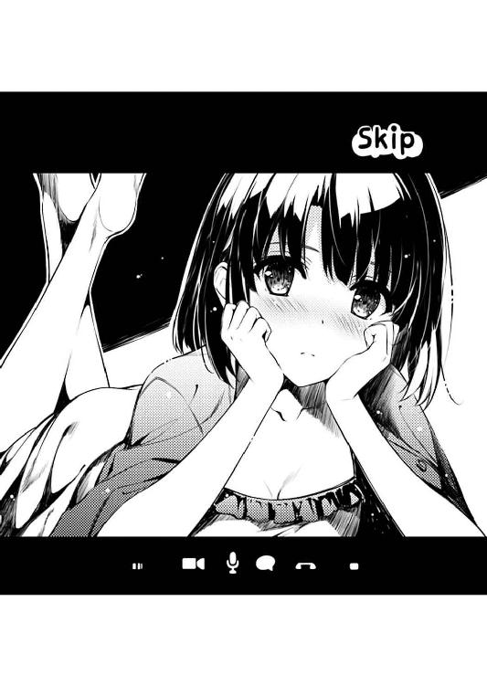
「......最初から、こっちで話せばよかったな」
『え～、なんで？ 顔見て話すのって、結構......』
「でも、通話代がかからないし、こっちのがいいじゃん」
そんな、だらけた格好の恵と、だらけた話をしながらも......
俺の頭の中は、もう、目の前の女の子のことしか、考えられなくなっていた。
『......って、ちょっと、やめてよ』
「え？ 何を？」
『だって......さっきから、まばたきもしてない』
で、そんな俺の態度は、すぐに恵に看過され、彼女は少し恥ずかしそうにカメラから顔を背ける。
「いや、別に、そんくらいいいじゃん」
でも俺は、そんな恵の逃げを許さない。
......と心の中で誓いつつ、でもなるべく強引にならないよう、けれど必死に、彼女の抵抗に抵抗する。
『けど、徹夜明けだし』
「いや、俺もだし」
『変な顔、してない？』
「してない」
『目、腫れてるし......』
「してない」
『倫也くん......』
「してないよ」
だって彼女は、すごく、女の子の顔をしてた。
『なんで、こんなことになっちゃったかなぁ......』
「そりゃ、本読みだから」
『本、読んでないじゃない』
それは、感情の読みにくいフラットな〝加藤〟じゃなくて。
けれど、最近の、黒かったり頼りがいがあったり安心できたりする〝恵〟でもなくて。
「大丈夫......今、俺の頭の中で、『巡璃15』のテキストが湧き上がってきてる」
『えっと、それって、もしかして、この......』
「おう、完成版を楽しみにしてろよ？」
『ちょっとやめてよ～』
「あ、今の喋り方とか、眠たげでいいなぁ......『ちょっとやめてよぉ』......と」
『あ～、なにキーボード打ってるの？』
「いや～、こっちのことは気にせずに、何でもいいから喋ってよ、恵」
そう、思わず、ゲームに登場させてしまいたくなるくらいに愛らしい〝巡璃〟で。
『え～、こんなの駄目だよ。シナリオになんかならないよ』
「いや、なる、大丈夫」
いつの間にか、二人の立場が逆転してる。
さっきまで、相手の言葉をせがんでいたのは、恵の方だったのに。
こうして、顔を見て話し始めた今は、ワガママ言ってるのは、俺の方で。
『だって、全然ドラマチックじゃないし』
「それが何だよ」
いや、多分、今の俺は俺じゃない。
主人公、だ。
『それに、こんな適当な会話で、巡璃は主人公を意識したりしないよ』
「本当？ 本当に、意識しない？」
『あ～、うん。しないってば～』
「でも俺は、こういう、どうでもいいことで、主人公のことを好きになってくれる、巡璃がいいな」
『っ......もぅ』
少しだけ、嬉しいこととか、ドキっとすることとか、相手を大切に思ってる気持ちとか。
そんな、大したことない会話を積み重ねていく、彼女のことが大好きな、主人公、だ。
『なんか今の倫也くん、結構どうでもいいことじゃないこと言ってる気がするけどなぁ』
「そうかぁ？ 適当なことほざいてる気がするけどなぁ」
『いや恥ずかしいよ。テンション上げ過ぎだよ。どうでもよくないよ』
「いいじゃん別に、どうせ男子に対する理想低いんだろ？ だったら、恵の好みに合わない主人公でもいいじゃん」
『あ～、もうそれ、理論が破綻してるよ倫也くん......』
「え～いうるさい！ もう決めた。俺は今から『巡璃15』を書く！ 恵が頭を抱えてのたうち回るような、恥ずかしい勘違い満載の、馬鹿で空気読めなくてイチャイチャな話を書きまくってやる！」
『......正気なの倫也くん？』
「ああ、お前は俺に、素晴らしいアイデアを授けてくれた。まさに女神！」
『あ～はいはい、まだそういう非現実的な褒め方してくれる方が助かるよ』
「ほっとけ。とにかく俺は書く！」
『はいはい、もういいや、ほっときます』
結局、あまりにもテンションを上げ過ぎたせいで、最後の方は、恵にいつもの自分を取り戻させてしまうという、俺らしい失態を犯したりもしたけれど。
それでも、やっと取り戻した、俺の創作意欲は、もう止まらない。
「そんな訳で、長いことありがとうな、恵」
『知らない。感謝されるいわれはない』
「それじゃ、おやすみ......切るぞ？」
そして恵は......
『ううん、繫いだままにしといて』
「......どうして？」
そんな、恥ずかしい俺に悪態をつき始めたはずの恵は......
『本当に限界が来て、眠ってしまうまで......見てるから』
「何を？」
『あなたの、書いてるところ、ずっと見てるから』
「何で!?」
最後に、もう一度、プチ反撃を試みてきた。
※ ※ ※
そして、午前九時。
「............」
『............』
「寝た？」
『答えが返ってくるときは、寝てないってことだよね』
「お、おぅ......」
さらに、午前一一時。
「............」
『............』
「今度こそ寝ただろそうなんだろ!?」
『......っ、あ、ごめん、ちょっと寝てた』
「悪い起こしちゃった......」
第八章 一歩引いてみるとめちゃくちゃキモいぞこの章
という訳で、月曜日の朝。
「お、おはよう、恵......っ」
駅から学園に向かう道すがら、その特徴的でないショートボブの後ろ姿を見つけた俺は、少しばかりの緊張とともに、二一時間ぶりの逢瀬を一緒に祝おうとして......
「............」
「ってちょっと何その嫌そうな顔～!?」
なぜか思いっきり苦虫を嚙み潰したような恵の振り向き顔と遭遇した。
「あれ、あれ、あれ？ なんか恵、あれ～？」
「いいから、普通に会話しよ普通に」
「いや、けど......もしかして、昨日のことは俺の夢？」
「そんなことないから」
ついでにいえば、その言動についてもきちんと表情通りの塩対応で、いつもよりほんのちょっと（つまり一般的には相当）ハイテンションな俺を避けるように、そそくさと通学路を早足に歩いていく。
「あのさ恵、ちょっと確認したいんだけど、俺たちって、土曜の夜からずっと電話で、途中からスカイプで、しかも日曜の昼まで......」
「あ～、お互い記憶は同じはずだから、あの時話した内容とか今ここで詳細に説明したりしないでね？」
「え、じゃあ、何で俺たちこんなにテンション違う訳？」
「だからそれは、ほら、同じ記憶でも、捉え方が違うっていうか」
「うっわ～どゆこと！ そんなにヤだったの昨日のこと!?」
つまり、どうやら恵のこの不機嫌な理由は、俺が今朝、いつになくご機嫌な理由と全く同じということのようで......
って、なにその致命的なディスコミュニケーション？
これが昨日、（主人公とヒロインの）愛を確かめ合った男女の態度なんだろうか......？
いやもしかしたら、こういうことって男女の特殊イベント後にはよくあることかもしれないから、皆も勘違い君にならないよう気をつけようね俺はもう手遅れだけど。
「あ～、えっと、だからね倫也くん。昔の女の言葉に、こういうのがあってね」
「......その〝昔の女〟って、過去の有名人なのか執念深い元カノなのかどっち？」
「『あまり嫌じゃないのが嫌だった』っていうんだけど......」
「後者じゃね～か！」
「ま～、つまり、そういうことで」
「え？ え？」
などと、俺が最大の弱点である男女関係における洞察力のなさを嘆こうとしたところで......
「倫也くんとああいう雰囲気になったこと自体が負けというか、完敗というか、ボロ負けというか......」
「え？ あ、あ........................あ～！」
恵は、ちょっとした謎かけで、自らの心情をわかりやすく、俺に伝えてくれた。
「つ、つまりこういうことなんだな？ 恵は昨夜のことを覚えてるし、そんなに嫌じゃなかったけど、俺とそういう雰囲気になってしまったこと自体が恥ずかしくて......」
「だからいちいち詳細に説明しようとしないでってお願いしたよねついさっき......っ」
「......ごめんなさい」
いやまだ完全には伝わってなかったらしい。
「ま～、という訳で、先行くね。あと学校でもあまり話しかけて来ないでね。一緒に帰って、友達に噂されるとなんちゃらだし」
と、結局、そんなローテンションを最後まで崩すことなく、恵は俺を置いてそそくさと学校に向かおうとする。
「いや別にそんなの大丈夫だろ。今までだって、俺たちが二人でいたところで誰にも気にされてなかったし」
「そういう訳にはいかないんだよねぇ......」
「え～、何で......」
「だって......今のわたしたち、ちょっと、彼女には見られたくないなって」
「あ......そか」
彼女って、誰？
「だって、何だか、言い訳しにくくって......」
「ん～、そうかもな」
だから、誰？
「うん、そんな訳で、後でね」
「おう、後でな」
誰なの!?
と、まぁ、そんな少しの謎は残しつつも......
恵『という訳で、後になったので』
恵『放課後、いつもの喫茶店で、四時でいい？』
『......おう』倫也
そのメッセージが届いたのは、恵と別れて三○秒後のことだった......
※ ※ ※
はい、という訳で、いつものように学園シーンはスルーでその日の夕方。
約束通り、ログハウス風の喫茶店。
「そもそも、半年後に大学入試を控えて何やってるんだろうねわたしたち」
「いきなり現実を思い出させないでよ!?」
......そこでは、高進学率を誇る私立豊ヶ崎学園の生徒二人が顔突き合わせ、しみったれた進路談義に花を咲かせていた。
「でも倫也くん、本当にどうするつもりなの？ 浪人？ 専門学校？ フリーター？ あらかじめ言っておくけど、わたしさすがに高校卒業後の進路までは付き合えないかもしれないよ？」
「いやマジやめようよこの話題......」
しみったれ過ぎてて涙が出そうになるのを必死にこらえ、俺はまたしてもフラットに舞い戻ってしまった変幻自在な恵の言動を制する。
もうちょっと、ときめく方向限定でころころ表情や言動が変わってくれればもっと萌えられるのに、変幻自在さがフリーダム過ぎるでしょ、このメインヒロイン。
「で、これが、昨日書き上がったイベント......？」
「ああ、お待ちかねの『巡璃15』だ！」
まぁ、そんなアレな考察も心に収め、俺は鞄の中から数枚のプリントを取り出し、テーブルの前に並べる。
その紙一枚一枚には、俺の昨日の血と汗と素早い指の動きの結晶が込められている。
「それじゃ......読ませてもらうね」
「おう！ 昨日みたいにダメ出しよろしく！」
そんな俺の自信に満ちた言葉を聞くと、恵は、今朝のように嫌そうに眉をひそめつつ、それでも一つ深呼吸して、真剣に読み入る。
俺が、一週間まるまるかけて構想を練り、一○時間で書き上げた三○キロバイトに。
「............」
「............」
けれど、そうやって、シリアスフラット風味な態度を保てたのも、最初の一分くらいで。
「......っ」
「............」
「～っ」
「............」
やがて、そんな真剣かつフラットな表情に、微妙な変化が現れていく。
「ちょっと、倫也くん」
「なに？」
「あんまり、読んでるときの顔、見ないでよ」
「わかった。向こう向いてるから気にせず読んでくれ」
「......うぅ」
表情はますます嫌そうに、頰は微妙に紅潮し、額にはうっすらと冷や汗が滲み。
落ち着かなさそうに髪を弄り、ちらりちらりとこちらを窺い、浅い呼吸を繰り返し。
「......終わった」
「どうだった？」
「........................くっ、殺せっ、て感じかな」
「よっしゃぁぁぁ～！」
そして、そんな羞恥まみれの仕草の末に、恥辱に堕ちた敗北宣言を口にした。
「もう駄目......わたしこれ、二度と読み返したくない」
「気に入らないなら直すから、具体的にどこが悪いか指摘してくれ！」
「......ないよ」
「え～？ なに～？ 聞こえな～い」
「十分に恥ずかしくて、死にたくなるくらいに問題ありませんでした～」
「いよぉぉぉっしゃぁぁぁ！」
「あ～もう、うるさい」
そんなこんなで、とうとう俺は、恵のフリーダムな変幻自在を打ち破り、彼女の萌えポイントを引き出すことに成功した。
俺の、自分史上最高の、萌えシナリオで。
そのシナリオは、もしかしたら、シナリオ厨と呼ばれる人たちが読めば、思いっきり眉をひそめる類のものだったかもしれない。
地の文は極端に少なく、主人公と巡璃の短いセンテンスの会話が続くだけ。
それも、内容なんかほとんどなし。
ただ、二人のダラダラした、けれどイチャイチャな雰囲気を描き出すことに全力を注ぎ。
それ以外は割とどうでもいい的な割り切りに満ちている。
......あと、ちょっとだけ、昨日の俺と恵の会話に似ているのは気のせいだ。
「なんか、ヌードモデルやらされた気分だよ......」
「うわ生々しい」
いや、だから気のせいなんだってば。
「酷いよ倫也くん......こんなピンポイントに恥ずかしいシナリオ書くなんてさ」
「別に、今までとやってること変えてるつもりないんだけどな」
それどころか、描写的には、今までのヒロインよりも全然大人しい。
だって、脱がせたりしてない。
キス描写もない。
手も握ってない。
いや、実のところ、告白さえもさせてない。
本当に、ただ、二人が互いに何気ない言葉を交わすだけ。
......ただ、二人が互いを大好きだってことが、あからさまに透けて見えるだけ。
「なんだか、倫也くんが急に男の子に見えてきたよ......」
「いや最初から男だよ俺!?」
こんな究極にプラトニックなシナリオを書いたのに、どうやら恵には、一つ一つの描写がやたらと性的に映ってしまっているらしかった。
......まぁ、ある意味、思いっきり狙い通りなんだけど。
「あ～暑い。すいません、お冷やお代わりください」
恵が、忙しなく髪をかき上げ、ハンカチで汗をぬぐう。
俺は、そんな彼女に涼を送ろうと、プリントで顔を扇ぐ......ふりをして、その紅潮した顔を見つめる。
俺の扇ぐ風を気持ちよさそうに受け入れ、軽く息を吐きながら目を閉じる恵は......
それは、なんというか、全然プラトニックなはずなのに、ある意味、──で。
「それで、次は......『巡璃16』は、どんな話にするの......？」
その後、恵が少し落ち着いた頃を見計らって、俺たちは帰り支度を始め。
と、その段になって、恵が恐る恐る、これまで語られていなかったのが不思議なくらいの肝心な質問を投げかけてきた。
「そうだな......恵なら、次はどんなイベントがいいと思う？」
「う～ん......前のシナリオで、主人公と巡璃がとうとう恋人同士になっちゃったんだし、ここはやっぱり定番の、二人に試練が降りかかるお話かな？」
「試練かぁ......例えばどんな感じの？」
「例えば、ヒロインが記憶喪失で今までのことを全部忘れちゃうとか、主人公がタイムリープして恋人になった過去を改変するとか、実は今までの話はシナリオライターが見ていた夢だったとか」
「......お前どうしても『巡璃15』をなかったことにしたいらしいな」
と、前向きなシナリオ談義を装い、恵は全力で撤退戦を提案してきやがった。
どうやら、あのプラトニックシナリオがかなりのトラウマになっているらしい。
だが......
「残念だったな恵！ 実はもう、俺の中で『巡璃16』の構想は固まっている！」
「それって......」
「ああ安心しろ！ そんな唐突な急展開はしばらく脇に置いといて、ここではさらに一歩踏み込んだ、全力のイチャイチャシーンを書くぞ！」
「え～」
俺は、そんな恵の絶望的な希望を、力いっぱい打ち砕く。
そう、『巡璃15』は、まだまだ全然大人しかった。
脱がせたりしてない。
キス描写もない。
手も握ってない。
告白さえもさせてない。
何故なら、そういうシーンは、これから先のシナリオで描写するからだ......
「というわけで、今夜もスカイプで本読みやるからな！ 帰ったらまず仮眠して、夜中の連絡に備えておくように！」
「......また朝までやること前提？ 明日も学校あるのに？」
「頼む恵！ これは俺たちの最強のギャルゲーを作るため......」
「あ～、わかったわかった。徹夜自体は平気なんだけど、これはきついなぁ......」
とか、心の底からブツブツ不平をこぼしつつ......
恵は、やっぱり俺の命令......いや依頼を、まるで断ろうとしなかった。
※ ※ ※
イベント番号：巡璃16
種類：個別イベント
条件：巡璃15の直後に発生
概要：巡璃と主人公、下校時にイチャイチャ
火曜日、放課後の夕方。
「......ま、大したことじゃないよな」
「......そうだね、大したことないね」
学校の最寄り駅から、なぜか二駅だけ離れた駅のホームのベンチ。
そんな、普段はただ電車で通り過ぎるだけの場所に、俺と恵の姿があった。
......えっと、一言だけ謝っておくと、昨夜の本読み描写を楽しみにしていただいていた方々には大変申し訳ない。
でも、絶対に今のこの場面描写の方が重要になるはずなのでご了承いただきたい。
というのも......
「さすがに、そろそろ手を繫ぐシーンくらいは書かないとな」
「だからって別に実践する必要もないんじゃないかなそうなんじゃないかな」
「往生際悪いぞ恵」
「うぅ......」
今から、『巡璃16』で描写されることになるシーンの〝本読み〟に入るからだ。
そう、昨夜のスカイプ会議では、結局、シナリオは一行も進まなかった。
それというのも、先日のイチャイチャイベントよりも更にステップアップした、第二のイチャイチャイベントである、〝手繫ぎデート〟の細かい情景描写について、二人の意見がまとまらなかったせいだ。
そのアクションを実践した時の、相手の手の柔らかさ、温かさ、湿り具合、込められた力、細かな震え。それに表情の照れ具合、言動の滑り具合。
......そういう、立ち絵では表現しきれない、会話やト書きで補足すべき情報が、スカイプでのコミュニケーションでは、わからなかったからだ。
「だいたい俺たち、それに関しては、もう半年前に済ませてんじゃん」
「だからあれは、ネタ集めでさぁ」
「ああそうだ、今度もネタ集めだ。何しろこれは、俺たちの最強のギャルゲーを......」
「なんかそのキャッチフレーズ、求められたら何でも許しちゃう最悪の免罪符になってるような」
「じゃあ、今回は嫌ってこと？」
「......その質問が嫌」
「つまり、いいってこと？」
「確認されるのも嫌」
「じゃ、じゃあ......無理やり......」
と、言葉の通り、俺は無理やり、隣のベンチに合意の上で座っている女の子の、すぐ取れる位置にわざわざ置いてある手に、そっと触れて......
「......うわぁ」
「そんな嫌な声出すなよ！ ちゃんと洗ってあるよ！」
けど、その微妙な反応に、思わず自分の手を思い切り引っ込めてしまった。
「いや、それはわかってるんだけどさ～」
翻って、その微妙な反応を返した恵の方は、俺の側に置いた手を一向に引っ込める気配もなく、ただぼうっと俺の離れていった手を眺めている。
......そこまで慌ててないんなら、あんな男を萎縮させる声出さないで欲しいんだけど。
「でも、さっきの倫也くんの顔がね、すっごい切羽詰まった感じで～」
「見ないで！ 俺の顔見ないでお願い！」
......それに、こんなにまで男を萎えさせること言わないで欲しいんだけど。
「なんていうか、この前、スカイプから見てた、シナリオ書いてる時の顔にそっくりで、あ、テンション上がってるな～って」
「ついでに解説もしないで！ ていうか自分で勝手に見といてそれ言う!?」
いつの間にか、というか、いつものように、さっさと互いの優劣が逆転してしまい、俺は敗北感を嚙み締めつつ、屈辱に......というか羞恥に顔を覆う。
「ほら、落ち着いて倫也くん」
「そっちが落ち着かせてくれないんだろうが」
「まぁそこはあれだよ。わたしだって、こんな状況で、そこまでフラットでいられる訳でもないんだし」
「だからって俺を追い詰めるな」
「手を繫ごうって言ったのは、そっちからだよ？」
「だからそれは～、あくまでも～、俺たちの最強の～」
「はいはい、ギャルゲーを作るためだよね。わかってますって」
「本当に、わかってんのかぁ？」
「わかってる、わかってるってば」
本当に、本当に、わかってるのかな......
こんなふうに、いつの間にか、俺の手に、しっかり自分の手を絡めておいて......
「でもさぁ」
「何だよ」
「こんなふうに、駅のベンチで手を繫ぐとか、これじゃなんか、単なる普通のカップルっぽくない？」
「何だよ？ もっと特別なのがいいのかよ？」
「うわぁ......」
「だからその反応やめろよ......ゲームシナリオのことだよ」
そんなふうに、とりとめもなく。
話題も主導権も、あっちこっちに飛びまくり。
俺たちは......〝最寄りから二駅離れた駅〟のおかげもあって、誰にも見つかることなく、一時間くらいそこに座り続けてた。
「まぁ、メインヒロインと主人公だったら、もうちょっと進展あってもいいかもね」
「ていうと、例えば？」
「ま～、そうだなぁ、ええと..................指繫ぎとか？」
「......じゃあ、それ、する？」
「だからいちいちこっちに聞くのはさぁ」
「けど、さすがにそれって結構クリティカルじゃね？」
「でも倫也くんは、別の人と、もっとすごいスキンシップしてるしね～」
「......それ今するべき話？」
「キスしたことだって、あるもんね～」
「それ先月釈放されたじゃんもう！」
一時間過ぎて、そろそろ夕陽が沈みかけてても。
それでも、まだ飽きずに、ずっと無駄な会話を繰り返し。
結局、いつの間にか、しっかりと五本の指を絡めている俺たちは。
端から見てたら、多分、単なる普通のカップル、なんだろうな......
※ ※ ※
イベント番号：巡璃19
種類：個別イベント
条件：巡璃18の直後に発生
概要：巡璃と主人公、はじめての......
そして、水曜日、深夜。
「と、と、ととととと」
『............』
「という訳で、いよいよ、いよいよぉぉぉ......キ、キ、キ、キス......っ」
『遊んでるでしょ遊んでるよね倫也くん』
「いいや！ 恥ずかしさのあまり変なリアクションになってるだけだ！」
『あ～うるさい、近所迷惑』
スカイプ越しに見える恵の表情や態度は、あの手繫ぎデートの時から......じゃなくて、手繫ぎデートイベントの本読みの時から一転して、またフラットに戻ってしまっていた。
まぁ結局、そうなってしまう理由は、俺の変にハイテンションな態度と、毎度上がるイベントのハードルにあるんだろう。
『だいたい、そんな恥ずかしいシナリオ、いちいち見せなくていいから。自分で書いて自分で満足してればいいから』
「いいや、今日までの実績を見ても、恵に見てもらった方がいいものができるのは確定的に明らかだ！」
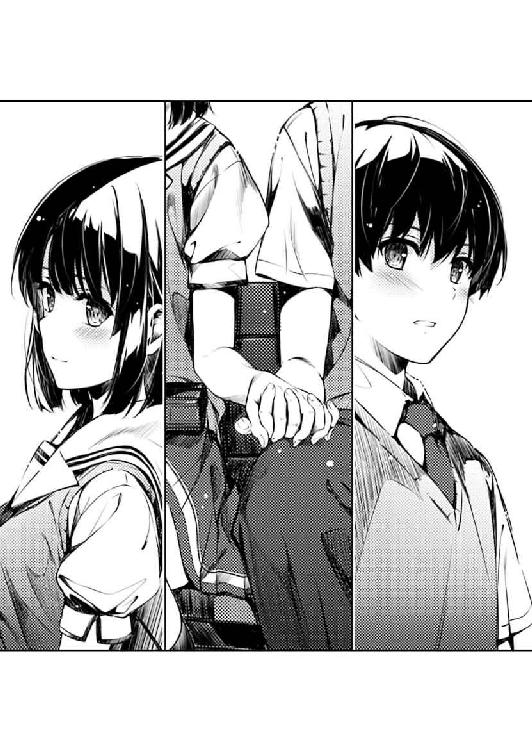
『けど、キスシーンのことなら、経験者である倫也くんの方が絶対詳しいよ？』
「お前それ言うそういうこと言っちゃう」
......というわけで、今日の本読みで取り上げる『巡璃19』は、主人公と巡璃の、ファーストキスのシーンが描かれる。
あのフラットだった巡璃が、とうとう主人公のことを、完全に恋人として意識するという、とてもとても大きなターニングポイントにして、ユーザーの心を完全に鷲摑みにしなければならない超重要なイベントだ。
なので、様々な要素......二人の気持ちがダイレクトに伝わる描写、脳が溶けるほどに萌え上がるシチュエーション、思わず二人の恋を応援したくなる微笑ましい掛け合い......それら全てが高いレベルで融合されなければならない。
『でもそろそろ、わたしこの本読みってやつ、結構辛いんだけど』
「メインヒロインがそんなことでどうする！」
なのに、そんな重要な打ち合わせにもかかわらず、恵の反応は、回を重ねるごとに、どんどんネガティブになってきている。
......まぁ、最初のうちは。
『ていうかさ、最近わたしの中で、倫也くん「ただわたしのリアクションを見て楽しんでるだけ」疑惑があるんだけど』
「何のことかわかりませんなぁ!?」
『だいたい、最近の倫也くんのシナリオ、わたしがアドバイスしなくても、正直絶好調だと思うよ？』
「そ、そう......？」
『うん、女子には恥ずかしくてほとんど読めないレベル。だからオタク男子的には相当いい線行ってそう』
「......なんとなく引っかかる言い方だけど、とりあえずお褒めの言葉としてありがたく受け取っておこう。という訳で、さっき送った『巡璃19』のファイルを開いてくれ。まだ全然叩きだけど、ちょうど直前の会話文だけ書いてみたんだ」
『......結局、どれだけ抵抗しても、わたしに選択権はないんだね』
「ほらほら、口よりもまずは手動かせ～」
『ここ最近、調子乗ってるよね、倫也くん』
まぁ、何を言われようと、これも俺たちの最強の（以下略）なので、その程度で挫ける訳にはいかない。
【主人公】「なぁ......巡璃」
【巡璃】「ちょっとぉ......こっちが目を閉じてから話し出すのやめてよ」
【主人公】「いや、けど......本当に、いいのかな？」
【巡璃】「何が？」
【主人公】「巡璃はいいのかな？ 相手が俺で、本当に、いいのかな？」
【巡璃】「ふぅ......っ」
と、そんな間際になっての、俺のチキンな言葉に。
巡璃は、苦笑交じりのため息を零しながら、けれど目を開かず、スタンバイしたまま、言葉を返す。
【巡璃】「あのね、わたし、今、変なこと考えちゃってるんだ」
【主人公】「変なこと......って？」
【巡璃】「わたしが年を取って、おばあさんになって、死ぬ間際のことなんだけど......」
【主人公】「......それは確かに変だな」
【巡璃】「その時にね、きっと、今までの人生が走馬灯のように頭をよぎってね......」
【巡璃】「ああ、そういえば、ファーストキスの相手って、あなただったなぁって思い出せたら......」
【巡璃】「そうしたら、なんだか、笑って死んでいけそうな気がするなぁって......」
【主人公】「巡璃......」
【巡璃】「あなたのこと、好きだなぁ......って」
【主人公】「っ......」
「う、うう、ぅ......」
『............』
「くぅぅぅぅ～！ 泣ける！ 萌えるけど泣ける！ 最強にして最高のシチュエーションだと思わないかそう思わないか恵！」
『......出来がいいかどうかは置いといて、ものすっごくクサいセリフだってことは保証するよ』
「最高の褒め言葉ありがとう！ 俺がリアルで言われたらもう死んでもいいってセリフを厳選してみました！」
『あ～、はいはい』
俺の自画自賛に思いっきり引きつつ、恵は、リアルにカメラから引いて部屋の奥からこっちを注意深く窺っている。
「という訳で、このテキストを監修お願いします！ 恵さん！」
『......だからそんな大声で叫ばないの。近所迷惑って言ったよね』
「だったらもっとカメラに寄れよ。戻ってこ～い！」
『あ～もうっ』
と、俺の暑苦しい呼びかけに辟易しつつ、渋々とＰＣの前に戻ってきた恵は、やたらと仏頂面のアップで俺を睨みつける。
が、それでも、結局、そそくさとＰＣの画面を覗き込み、多分、俺の書いた『巡璃19』のシナリオファイルを真剣に読み、粗探し......いや監修を始める。
『そうだなぁ......相変わらず、恥ずかしくて正視できないレベルの妄想垂れ流しなのはさておくとして......』
「一言につき一度は刺さないと気が済まない訳？」
『それにしてもさぁ、このヒロインのコ、覚悟決まりすぎてない？』
「覚悟って？」
『ほら、なんていうか、いくら付き合ってるからって、普通、もうちょっと将来に疑問持たない？ 本当にこの彼でいいのかなぁって』
「すいませんギャルゲーヒロインにそのメンタリティって必要ですか？」
『それにしても、もうずっと一緒にいること前提っていうか、別れることなんかまるで考えてないっていうか......これじゃ、すでに夫婦みたい』
その恵の、どちらかといえばネガティブな指摘に......
「夫婦カップル......それだ！」
『え、それなの？』
けれど俺は、まったく逆方向の天啓を得たかのような衝撃を感じた。
「ずっと一緒にいること前提、別れることなんかまるで考えてない......それって、すでに将来を共に歩むことを決めた夫婦の視点ってことじゃん！」
『まぁ最初のうちはそう考えててもあっさり離婚するのがリアルの夫婦だけどね』
「そうだ夫婦だ......うん、その演技プランだ！ 恵！」
『あ、嫌だから』
と、恵が次々と浴びせてくる冷水を気合で耐え抜き、俺は気合を込めてモニターの先のメインヒロインに告げる。
「このセリフ......もっと〝妻〟っぽく言ってみてくれ！」
『遊んでる......倫也くん、絶対、わたしを使って遊んでる......』
Ｗｅｂカメラ越しからでもわかるくらいに死んだ魚の目を濁らせて、恵が恨めしそうにこちらを見つめる。
だが、その程度で挫けるような俺じゃあない。筋が通らなくても情熱次第でなんでもやってのける恥知らず。ヒロインを魅力的にし、巨大な萌えを構築する、俺たちゲームサークル『blessing software』！
「そうだな、『わたしが年を取って』からでいいから」
......というのはさておき、そんな恵の魂の慟哭は都合よくスルーして、俺は女神を崇める信者の視線で恵をじっと見つめる。
『なんかさ倫也くん......最近、わたしに対して妙にえっちじゃない？』
「仕方ないだろ......シナリオ書いてる時は、どうしても主人公の気持ちに引きずられるんだよ」
そう、何しろ最近の巡璃ルートは、主人公が『ワイは猿や！ 覚えたての猿や！』とばかりに巡璃に迫る描写ばかりで。
となれば、その時のセリフや心情を克明に描こうとすればするほど、ライターである俺も、ヒロインである巡璃に、そういう気持ちを抱いてしまうのは自然の流れで。
だから決して俺自身が、紅坂朱音の言う『気持ちいいオナニー』を実践してる訳ではない......はずだ。
『妻っぽく......妻、ねぇ......』
と、俺が次にどんな見苦しい言い訳をしようか悩んでいる間に、恵の方はとっくに『もう、しょうがないなぁ』とばかりに納得してくれたらしく、ブツブツと演技プランを練りつつ、巡璃に入り込もうとしてくれていた。
となれば俺は、もう余計な喋りはやめて、彼女の一挙手一投足に五感を委ね、わくわくしながら次の言葉を待つ。
『えっと、わたしが年を取って、おばあさんになって、死ぬ間際のことなんだけど......』
そして、恵の唇から、巡璃が零れ出る。
『その時にね、きっと、今までの人生が走馬灯のように頭をよぎってね......』
「......っ」
『あ～そういえば、ファーストキスってすっごいオタクの男の子だったな～
......って思い出したら、死ぬに死にきれないな～って』
「カァァァァァ～ットぉぉぉ～！ ＮＧぃぃぃぃぃ～！」
......と期待していたら、恵の口から零れ落ちたのは、巡璃じゃなくてブラック恵だった。
『え～と、わたしが今まさに思ってることをアドリブ交えて演じてみたんだけど、そんなに駄目かな？』
「だ、駄目！ フラットな演技も棒読みな口調も駄目！ 何もかも駄目！」
とりあえず、セリフの内容についての解釈については気づかないふりをして、俺は恵に、わざとらしいくらいに厳しい指導を入れる。
「アドリブはいいけど、オチをつけるのは厳禁！ 萌えたり泣けたり悶えたりする方向限定で頼むよ！」
『あ～もうっ、キスの時に何言うかとか、当人以外には知られたくないんだけどなぁ』
「っ......想像でいいから。実際に使うパターン外してくれていいから！」
けれど恵は、動揺してる俺をさらに弄ぶかのように、意識的か無意識的かわからない、微妙なニュアンスの言葉で反撃し始める。
最近、実際に本読みに入ると、いつも、こうなるんだ......
『どっちにしても、やっぱり〝妻〟は難しいよ......倫也くん』
「じゃ、じゃあ、もうちょっとレベル落として......長い付き合いの恋人同士、くらい？」
『ん、わかった、そのくらいの〝好き〟だね？』
「う、うん......」
と、さっきまで愚図っていたはずの恵は、今はこちらの意図を素早く汲み取り、積極的に、俺の恥ずかしい世界に入り込んでくる。
一つ深呼吸して、目を閉じ、ゆっくり唇をなめて湿らせて......
それらの一連の動作を、カメラから至近距離で、つまり俺の目の前で、やらかして。
『じゃ、いこっか』
「ああ」
『............』
「............」
『......で？』
「で？ って？」
『主人公くんからのセリフが来ないなぁ......』
「え......」
そして、さらに、やらかす。
『だって、これって会話だよね？ 掛け合い、なんだよね？』
「いや、ちょっと待って......」
『一人芝居だと、感情出ないなぁ......出ないよ、倫也くん』
「そ、そもそも、感情込めた芝居なんかできるのお前？」
『とにかく、ここから先は、相手がいないとやらないよ』
かつての〝加藤〟に向けたツッコミは、今はもう、通用しない。
「い、いや、けど俺は主人公じゃなくてライターだし」
『......こういう時だけ、そういうこと、言うんだぁ』
「恵......」
情感の籠もった......籠もり過ぎた〝恵〟は、俺の、そんな逃げを許してくれない。
『準備はいいかな？ それじゃ......始めよ？』
だから俺は、突然襲ってきた、動悸と、冷や汗と、緊張にまみれつつ。
この突然の、こっぱずかしいロールプレイに、引きずり込まれる。
「な、な、なぁ......巡璃っ」
『ちょっとぉ......緊張、しすぎだよ？』
「わ、悪い。いや、けど、だっていきなり......」
『わたし、初めてなのに......なのに、そんなに固くなられると、どうしたらいいかわからないよ』
「え？ あ......」
それは、俺の拙い演技に対するダメ出し、じゃなかった。
『でもさ、そんなに緊張することないんだよ、お互い』
「......どうして？」
『だって、悪い思い出なんかに、なるわけがないから』
「え......」
『歯がぶつかっちゃっても、笑っちゃっても、喧嘩になっちゃっても......何が起こっても、素敵な思い出になっちゃうに、決まってるから』
それは、叶巡璃になりきった、加藤恵の、渾身のアドリブだった。
「恵、あ、巡璃、は......相手が俺で、本当に、いいのかな？」
『え～、まだそれ聞く？ とっくに答え言っちゃったよ？』
「ご、ごめん」
で、俺だけが、彼女の演技やアドリブについていけずに、ただ脚本通りに軌道修正しようとして、かえって醜態をさらす。
どこへいくのかわからない会話の流れに、物語の展開に、彼女の気持ちに、激しい動揺と鼓動が止まらない。
『............』
巡璃が、いや、恵が、言葉と動作を止めて、画面越しに、俺をじっと見つめている。
でもそれは多分、指示待ちでも、ネタ切れでも、ましてや恥ずかしくなったからでもなく......
「......巡璃」
『うん』
俺の......いや、主人公の言葉を待っていただけで。
つまり、『わたしはもう気持ちを言ったよ？ だから、次はあなただね』って、ことで。
「もっと、顔、見せて」
『ん』
恵が、画面にぐっと近づく。
彼女の顔が、いつもリアルで見てるのと、同じくらいの大きさになる。
「巡璃......」
だから俺も、彼女の、その覚悟──演技についての、だけど──に応えるために、彼女との距離をぐっと詰める。
そんな、バーチャルなのに、現実に近づいた距離感に......
『近い......』
「しょうがないだろ、その、俺たち......」
『キス、するんだもんね』
互いに、酔ってる。
俺の顔が間近にあるなんて、そんなキモいはずの状況なのに、画面から見える恵の頰はしっとりと紅潮し、ＰＣのスピーカーからはため息が漏れ聞こえてくる。
『あ、あのさ......そろそろ、お互い、目、閉じない？』
「嫌だ......ずっと、見てたい」
『それ、マナー違反......』
「それがどうしたよ」
『もう......』
恵の顔が間近にあるなんて、そんな得難い状況を手放したくなくて、俺は、自らのまぶたで視界を閉ざすのを拒否する。
と、恵は、そんな恥ずかしいにらめっこに我慢できなくなったのか、その距離のまま、顔を画面から背ける。
「こっち、向いてよ」
『なんか、嫌』
「キス、できないじゃん」
『どうせ、できないよ、このままじゃ......』
「そういう問題じゃないだろ......」
そして恵は、とうとう、ルール違反を犯した。
二人は間近にいるはずという状況を、捨てた。
『そういう問題だよ......何もしないのに、そんなに、見つめないでよ』
「そういう訳にいかない。今の恵の表情、シナリオに書きたい」
だから俺も、今までのルールを改定する。
巡璃と主人公という配役を、捨てる。
『そんなの想像で書けばいいじゃない。その方が想像搔き立てるでしょ』
「駄目だ。だってこれはゲームのテキストだ、小説じゃない」
『それが、何なの？』
「絵がある以上、想像を搔き立てる複雑な表現よりも、リアルな表情をシンプルに表現する方が、ユーザーには響くはずだから」
『......そういう言い訳だけは、複雑で小説的な表現になったよね』
「そういう逃げはいいから、ほら、こっち向いて、恵」
『ほんとに、もう......やっぱり、ここ最近、調子乗ってるよね、倫也くん』
いいや、違うんだよ、恵。
調子に乗ってるんじゃない。ただ、やめられないだけなんだ。
本読みの途中で覚醒する恵が。
完璧にメインヒロインを演じるようになる恵が。
......いいや、メインヒロインになっていく恵が。
綺麗で、可愛くて、萌え萌えで。
目が離せなくなるだけ。手放したくなくなるだけ、なんだ。
『............』
「............」
目を開き、真正面から、至近距離で見つめあう。
すぐに触れられそうな唇は、けれど、哀しいことに、ただの液晶に浮かんだ映像で......
『ね』
「ん？」
『なんで、今、ここに、いないかなぁ......』
「え......」
そしたら、そんな俺の嘆きが、なぜかスピーカーから聞こえてきて。
『どうして、わたしの目の前に、いてくれないのかなぁ......』
それも、俺じゃない、声で。
「め、恵......えと、今の......って」
『っ！』
「あ」
けれど、その言葉や態度の意味を探るよりも前に......
突然、画面が激しく揺れ、バタンという音とともに、映像と音が途絶えた。
......彼女が、ノートＰＣを閉じることで、その続きの言葉を封印してしまったから。
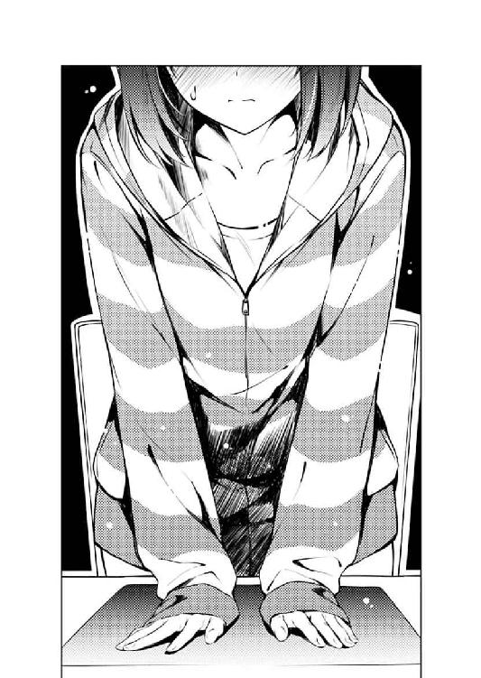
エピローグ
木曜日、深夜。
『転？』
「そう、起承転結の転。転回の転」
『ああ、ヒロインが事故で死んじゃったりとか、病気で死んじゃったりとか、とにかく死んじゃったりとか......』
「......何が何でも殺さなきゃ気が済まないのかお前は」
昨日の本読みから一夜明け、またフラット気味に戻った恵の声が、ＰＣからではなく、スマホのスピーカーから、映像抜きの声だけで流れてくる。
「でもまぁ、ありていに言えばそういうこと。上げて落とすってやつ」
『あ～、確かに今のところ、巡璃ルートには、そういう展開はないかもね』
その、通信手段の変更を、恵は『昨日、あの後、パソコンが壊れたから』と説明した。
『それ、壊れたじゃなくて壊したの間違いじゃ......』とか、『スマホでもビデオ通話できるけど？』とかいうツッコミどころは、コミュニケーション維持のため、触れないことにした。
「あ、言っとくけど、もちろん俺、今までの巡璃ルート、すっごく好きなんだ！ だってメチャクチャ可愛いじゃん巡璃！」
『......あ～、はいはい』
「でも、間違いなくドラマはないんだよなぁ......ドキドキはするけど、ハラハラはしないっていうか」
シナリオ作成は、順調だった。
......俺の心臓に過大な負担がかかっていることを除けば。
『けど、このゲームやる人って、そういうの求めてるかなぁ？ ヒロインとすれ違ったり、別れそうになったりするよりさ、ずっと、二人の、その......えっと......』
「まぁ確かに、ストレスの溜まる展開なんて起きずに、ただひたすら二人の、ラブラブして、イチャイチャして、ちゅっちゅするシーンだけ見ていたいって意見もあるだろうな」
『......確かにそれこそまさにわたしの言いたかったことなんだけど、もうちょっと表現なんとかならない？』
『巡璃15』以降の個別ルートシナリオは、ファイル数で二桁をとうに超え、今でも一日に三イベントのペースで増え続けてる。
その下地になっているのが、俺と恵の、この〝本読み〟だ。
「じゃあ、恵はどう思う？」
『どう......って』
「これから一波乱のイベント入れた方がいい？ それとも、最後までイチャイチャ描写で駆け抜けるべきだと思う？」
『う、う～ん......』
俺たちは毎日、様々なシチュエーションをシミュレートし、セリフを出し合い、想いを共有する。
「あ、思いついたまま言ってくれていいよ。最終的には俺が決めるから」
『う～ん、う～ん......』
「......だから悩まなくていいんだってば」
だから今となっては、俺には、恵の気持ちが......いや、やっぱ全部わかるって言ってしまうと噓になるけれど。
『そうだなぁ......わたしは』
「恵は？」
『......いらない、かな。〝転〟ってやつ』
「そっか......」
それでも、彼女が、ちょっと揺れていたり、抑えきれなくなったり、溢れたりするのが、わかるようになった。
『ていうか、今のシナリオだって恥ずかしさでお腹いっぱいだし、これ以上波乱なんて、さぁ......』
「いや、恥ずかしいシチュはまだまだ続くぞ！ 俺の中では、あともう一○くらいはドキドキイベントのネタが......っ」
『ああもう......こうなったら、恥ずかしさだけで突き抜けちゃえばいいよ、この作品』
......だって、俺とほとんど同じタイミングだったから。
「まぁ、とにかく、終盤の展開はもうちょっと考えてみるよ。またアイデア浮かんだら、本読み手伝ってくれよな」
『あ～、そのことなんだけどさ』
「なに？」
『この本読み......しばらく、休めないかな？』
「......え？」
と、豪語した直後になんだけど......
この、恵の言葉は、結構想定外だったりした。
『あ、ごめんね。今がちょうどノってるときってのはわかるんだけど......』
今日の恵が、俺と距離を置きたがっているのは、なんとなく気づいてた。
ＰＣが故障したからビデオ通話できないという〝噓〟だけでなく、いつもならだいたい遭遇するはずの登校時に姿を見せなかったり、学校内で会っても妙によそよそしかったり、この本読みだって最初は声もなしの文字だけのやり取りにしたがったりと、明らかに、今までの恵と様子が違ってきていたから。
「なんだよ気になるな？ もしかして事故で死にそうとか、病気で死にそうとか、とにかく死にそうとか？」
『わたしにそういう唐突な急展開はないから。絶対にないから』
「じゃあ、なんで......」
『それは、その......最近、ノりすぎてるっていうか......わたしも、倫也くんも』
「......それって、悪いことかな？」
『あ～、その......ゲームの中〝だけ〟だったら、問題ないんだけど、ね』
......その、恵の小さな呟きは、ちゃんと聞こえてた。
そして、一応、全部じゃないかもしれないけど、理解してる......つもり。
だって、俺も......というか俺の方は、恵のその言葉を、素直に解釈した通りの感情を抱いてるから。
だから、俺は......
「わかった、しばらく本読みは休みにしよう」
『ごめんね、倫也く......』
「けど、埋め合わせはしてもらうぞ......今週の土曜、一時、池袋で待ち合わせ」
『............ちょっとぉ』
敢えて、恵が向かおうとしているのとは違う方向を目指す。
「あ、大丈夫。その日だけは全部俺が持つから。ただ付き合ってくれるだけでいいから」
『あのね、本読みを休みたいって言ったのは、別にゲーム作りのことじゃなくて......』
「んなこたぁ、さすがに俺でもわかってる」
『倫也くん......』
「わかってるけど、納得してないだけ」
いや、だって今の恵、アレじゃん？
リアルに、会いたいじゃん？
『今はまずいよ、今は......』
その呟きだって、ちゃんと聞こえてる。
だから、待ち合わせ場所を街の真ん中にした。
今、俺の部屋なんかに誘っても、拒絶されるだろうってのは、さすがの俺でも薄々感づいていたから。
「でも、今でなくちゃマズいだろ」
『え～、何が？』
「いや、恵さぁ、今週に九月二三日が含まれてるって、知ってるか？」
『............あ～』
そう、そんな時、こんな都合のいい日の存在を見つけたら、利用しない手はないじゃん。
それは、加藤恵、一八回目の、記念すべき日。
『去年は思いっきりスルーしてたくせに......』
「というわけで二年分のお祝いを！ 今年は思いっきり豪勢にやりますから！」
そう、思いっきり、やる。
だって、これは、最高のネタ探しだ。
巡璃ルートのクライマックスシーンを飾るにふさわしいイベントの宝庫だ。
『え～と......せめて、もうちょっと延ばせない？ 来月あたりとか』
「誕生日祝いをそんなにずらす訳にいかないだろ！」
そして......その他諸々のことに関しても、最高のチャンスだ。
「......ただの、デートだよ」
『あぁ、もう......』
そう、どれだけ言い繕っても、これは、ただのデートだ。
どうしようもない二次オタ男が、目立たないけど高嶺の花を、勇気をもってエスコートする、神聖で、滑稽な儀式だ。
「頼む恵！ 頼みます恵さん！ お願いします恵様！」
声しか伝わらないのに、思いっきり頭を下げて。
見えてないのに、思いっきり逡巡してる向こうを妄想して。
そんな、三秒にも満たない三年にも感じる沈黙の時間を経て。
『あ～あ、知～らないよ～、倫也くん』
「え？」
恵は、これまた微妙に曖昧な答えを返してきた。
『わたし、知～らないよ～、本当に～』
「いや、だから何が？」
いや、確かに言葉の内容だけを取ってみればそうだったかもしれないけれど。
『あさって、だね？』
「あ、ああ......って？」
『嫌だなぁ、もう......すっごい楽しみになってきた......っ』
「お、おぉ......っ！」
でも、多分、感覚的にはわかってた。
その、微妙で曖昧な内容の言葉が、妙に弾んだ声で届いていたことを。
とても可愛くて、切なくて、そして艶めかしい情感で、届いていたことを......
『早く、明日にならないかな、そして、週末にならないかな？』
「そんなの、あっという間だって」
『どこ行くのかな......どこ、連れてってくれるのかな......』
「安心しろ。さすがに今回ばっかりは、いつもの場所とかはナシだ」
『あ～、でも、そっち方面でも別にいっかなぁ......なんか、安心するし』
「お前が良くても俺が駄目なの今回に限っては！」
『そんなに特別扱いしなくたっていいよ、わたしの誕生日なんだし』
「恵の誕生日だからこそ、特に特別扱いしてんだよ」
『あ、今のセリフ、巡璃シナリオに使えないかな？』
「え？ 今俺なんて言った？ ちょっとメモ取るから再現してみて！」
『自分のセリフなんだから自分で再現しなよ』
「一人芝居だと感情出ないし～」
『そもそも感情込めた芝居なんかできるの倫也くん？』
「頼むよ恵......ほら、『知～らないよ～、倫也くん』の辺りから！」
『......そんな前のセリフ覚えてるくらいなら全然問題ないでしょ？』
「ちぇ～」
とりあえず、覚悟（？）を決めたらリラックスできたのか......
恵が、ガチガチではない、フラットでもない、弾んだ、女の子みたいな喋り方に変わっていく。
いや、実は相当前から、物凄く女の子なんだけど。
でも、いや、だからこそ......
「とにかく、もう一度確認な！ 土曜、一時、池袋東口！」
『......絶対行く』
「当たり前だ、約束なんだから」
『倫也くんも、遅刻したら許さないよ？』
「ごめんそれお前が言うとシャレにならないから勘弁して」
『......まぁ、一分以内なら待つけど』
「短っ!?」
俺の方さえも、こんなにまでも声が弾み......
今すぐにでも、加藤恵という女の子に、会いたくなってしまっていた。
会って、語って、笑って、触れて、そして......
でも、そういうのは、明後日まで、我慢だ。
......でも、我慢するのは、明後日まで、だけだ。
イベント番号：巡璃??
種類：個別イベント
条件：巡璃ルート終盤
概要：巡璃の一八歳の誕生日、二人は......
エピローグ その二
『そうだなぁ......わたしは』
『......いらない、かな。〝転〟ってやつ』
そして......
待ちに待った、たった二日後。
九月二三日の、一二時。
待ち合わせ時間の、少し前。
『......っ、......っ！』
「え？ 何だって？ ごめん、よく聞こえないんだけど......」
その、難聴じゃなくて雑音のせいでなかなか声が届かない、一本の電話によって。
『............』
「な......ちょっと待って！ 誰、が......」
彼女が求めていなかったはずの〝転〟は......
よりにもよって、その瞬間に、やってきた。
あとがき
どうも、丸戸です。
『冴えない彼女の育てかた』一一巻、今回のいつも通りのペースでお届けできました。
いや、前巻もいつも通りの発行間隔だったんですが、あの時は何しろまぁ（主に編集さんや印刷所さんとの攻防が）色々とあった訳で、今回こうして、まぁそこそこの状態であとがきに臨めているというのは、（主に編集さんや印刷所さんにとって）とてもとてもとても喜ばしいことで......ていうかこれもアニメの脚本が全部上がったおかげでしょう（とさり気なく今後のアニメ制作スケジュール上の責任を回避）。
ということで、そのアニメ第二期『冴えない彼女の育てかた 』ですが、二○一七年四月からの放送を目指して鋭意制作中となっております。
』ですが、二○一七年四月からの放送を目指して鋭意制作中となっております。
また売るためのあざとい仕掛けを大量に仕込むべく、自分の知っているところでも知らないところでも悪い大人たちが日々暗躍しておりますので、期待に色んなところを膨らませつつお待ちください（懐とか）。
一期同様、ノイタミナさんらしからぬプライドのなさ（主に作品的に）とA-1 Picturesさんならではのこだわった絵づくり（主にフェチ的に）とアニプレックスさんらしい容赦のなさ（主にグッズ的に）で頑張ります。主に亀井監督や高瀬さんや深崎さんが。
と、続いては、そろそろ佳境に入っているのではないかという噂もないではない本編絡みの話です。
まずは、『あれ？ いつもより一人少ない......』と思った方。余計なことに気づいてしまいましたね？ いや、それについては某編集さんが『いやぁ、前回あれだけ出したんで一回くらい飛ばしてもいいでしょう』などと、ファンの方々の心痛をおもんぱかる僕をよそに、すっごく軽いノリで提案してきたのをそのまま採用しての措置となっておりますので、某先輩ファンの皆さんにおかれましては、決して某原作者だけを恨むことのないよう、今後ともご愛顧よろしくお願いいたします。次は出します。きっと。
まぁそれに、出たとはいえ出番が少ない上に、役割が、その出番のない人のフォローでしかなかった某金髪ツインテールな人のことを考えれば......ああ、いや、こちらも次は活躍します。きっと。
で、そんな二人の出番を食いつぶしつつ、今回、変態著しい（サナギが蝶になる的な表現ですので）某メインヒロインさんですが、一○巻での出番の少なさに不満をお持ちだった怖......熱心なファンの皆さん、今回で埋め合わせというわけにはいかないでしょうか......？
いや、六巻辺りまでは、そんな文句言われたこと全然なかったし、そもそも出番が少ないことこそがアイデンティティだった節もある彼女なんですが、今となっては世間がなかなか隠れさせてくれないという難儀な......ああ、いや、予想を遥かに超える反響におびえ......ああ、いや、身を引き締めつつ、作者的にも、そろそろ彼女とどう向き合っていこうか真剣に考える時期に来たのかなぁと考えとります。
まぁ、『なんだか普通のヒロインになっちゃったなぁ』と残念がっている捻くれ......ああ、いや、個性的なファンの皆さんにおかれましても、もうとっくにタイトルがその体を為していないこの『冴えない彼女の育てかた』をどうか今後もよろしくお願いします。
前述の通り、世間では、そろそろ完結も近いんじゃないかと噂されていると噂の本作ですが（ちなみに六巻辺りでも言われてましたね）、ついこの間、某関係者に『いや冬コミが終わったら次は大学生編なんですよ！ 高校を卒業して数年、微妙に疎遠になってしまった倫也と恵が......』などと先の構想を熱く語ったところ、『あんたまたそれかよ』とたしなめられましたのでこの案は白紙に戻りました。あ、だから何が言いたいのかと問われると返答に困りますが。
それでは最後にいつもの謝辞を。
深崎さん、そろそろです......そろそろ、『』関係の発注が怒濤のように押し寄せてきますので覚悟しといてください。いや～、僕もなるべく深崎さんの負担を抑えようと努力したんですよ～。でも、やっぱりどうしてもいい作品を作ろうとすると妥協できなくなっちゃいますよね～（爽やかな笑顔で）。あと再会と元鞘と裏切りの展開ってやっぱ駄目ですか？
萩原さん、今回は（あくまで前回比ながら）順調に進行したため謝罪はなしということで。娘さんができて以来、ヒロインたちのことを父親目線でしか見れなくなって『いやもうこの作品って安心して愛でられるの出海しかいないでしょ！』とか言い出してるのが気になりますが、今後ともよろしくお願いします。
では、ああいう終わり方をしておいてなんですが次回は番外編......
というのは冗談です。ちゃんと一二巻ですよ。きっと。
二○一六年、秋
丸戸史明
丸戸史明
●まるとふみあき
今回の表紙はいくらなんでも恵でしょう（予想）。最近、各方面にやたらと押されていて『グッズ展開がメインじゃないメインヒロイン』などとネタにしていた頃からは隔世の感がありますが、今ではそんな彼女もだいぶ感情豊かになり、本来のアドバンテージである、特性がないというキャラ特性を手放しつつあります。って、まさかこれって何かのフラグじゃ......
イラスト／深崎暮人
カバーデザイン／BALCOLONY.
冴えない彼女の育てかた11
丸戸史明
平成28年11月19日 発行
(C)Fumiaki Maruto, Kurehito Misaki 2016
本電子書籍は下記にもとづいて制作しました
富士見ファンタジア文庫『冴えない彼女の育てかた11』
平成28年11月25日初版発行
発行者 三坂泰二
発 行 株式会社ＫＡＤＯＫＡＷＡ
〒102-8177 東京都千代田区富士見2-13-3
電話 0570-002-301（カスタマーサポート・ナビダイヤル）
受付時間 9:00～17:00（土日 祝日 年末年始を除く）
http://www.kadokawa.co.jp/